00 开篇词 从零开始：为什么要学习 Spring Boot？
你好，我是鉴湘，有 10 年以上大型 Java EE 和分布式系统构建和优化的经验，曾带领百人团队完成基于 Spring 家族技术体系的亿级用户规模互联网应用系统的建设工作，对基于 Spring 框架进行系统开发和维护有着丰富的实践经验。
在我的从业生涯中，曾经带过不少项目，以我所带领的电商项目开发团队为例，开发团队从接收产品需求、开发联调再到测试上线，整个过程往往要求在短短几天之内完成，这样的挑战就倒逼我们要保证开发过程的简单性，其中最核心的一点就是“快”：如何快速、高效地实现系统功能，成了一个非常现实且棘手的问题。
为此，我对比实践过不少框架，最终发现了一个开发利器——Spring Boot。在 Java EE 领域，Spring Boot 在传统 Spring 框架的基础上做了创新和优化，将开发人员从以往烦琐的配置工作中解放出来，并提供了大量即插即用的集成化组件，从而解决了各种组件之间复杂的整合过程，大大提高了开发效率，降低了维护成本。
比如，我们之前做了一个完整的 Web 应用程序，原本使用的是 Spring MVC 框架，但是在整个开发过程中，除了需要编写一大堆配置文件、针对每个层次引入专门的开发组件外，还需要独立部署和管理应用服务器。最后，为了对系统的运行状态进行有效监控，还需要引入一些并不好用的外部框架。
经过反复尝试，我们最终使用了 Spring Boot 框架，因为它直接解决了使配置变简单、使编程变简单、使部署变简单、使监控变简单的问题，好用、简单又高效。
基于以上种种优势，Spring Boot 于 2015 年在国内开始走红，且越来越多的企业将 Spring Boot 作为系统开发的首选框架。比如我自己带领的几个团队中，无一例外在使用 Spring Boot 构建应用程序。
你为什么需要学习这门课程？
越来越强大的 Spring Boot 俨然是 Java EE 领域的标准开发框架了。因此，掌握 Spring Boot 成了 Java 工程师的必备技能，而熟练掌握 Spring Boot 中的各项技术组件，并能够在一定程度上掌握其内部运行机制，是你从事 Java 应用程序开发的基本要求，也是你将来学习 Spring Cloud 等微服务开发框架的基础。
我自己也有着多家大型互联网公司的从业经验，日常也经常面试来自不同公司的 Java 工程师，在面试过程中，我对开发人员的要求：掌握 Spring Boot 已经不是一个加分项，而是一个必备技能。
你也可以上拉勾网站查看相关岗位职责，基本都有这条限制，以下是我截取的两份 Java 开发工程师岗的招聘要求：
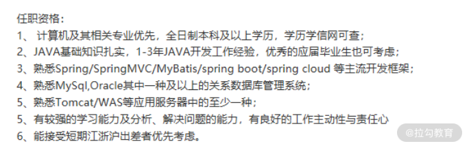
（职位信息来源：拉勾网）
可以说，深入了解并掌握 Spring Boot 是你成功进入大公司、斩获高薪 Offer 的一个重要砝码。
这门课程是如何设计的？
虽然 Spring Boot 为我们提供了开发友好性，但很多人学习、应用 Spring Boot 的过程并不容易，我在实际开发过程中就曾亲身经历很多问题和挑战，而据我了解这也是大部分同学共同面对的境况。
- 看上去简单，实则复杂： Spring Boot 的特点是容易上手，让你觉得开发起来很快很简单，但实际上 Spring Boot 提供了很多隐式的功能，比如自动配置，它将系统开发的复杂度隐藏得很深。如果你不了解框架的核心内容，开发过程中一旦出现问题，那么你将会觉得一头雾水，定位问题和解决问题的难度也会加大。
- 技术体系和组件众多： Spring Boot 提供了一大批功能组件，这些功能组件构成了庞大的技术体系。你会发现学会了一个组件后，碰到新的组件时还是需要重新学习，导致学习效率很低，且容易出错。
- 框架集成的“坑”不少： Spring Boot 是一个集成性的框架，内部整合了市面上很多开源框架。因为各个框架之间的技术差异性，你会发现存在很多“坑”，以至于你在使用过程中经常出现一些莫名其妙的问题，进而影响开发节奏。
虽然 Spring Boot 让你只花 20% 的时间就可解决 80% 的问题，但是剩下 20% 的问题需要我们通过系统性的学习去弄懂，而学习 Spring Boot 是有一定的方法和套路的。
为此，我根据个人多年的架构经验以及对 Spring Boot 的理解，整理出了一套系统化、由浅入深的学习路径，从中你不仅可以掌握 Spring Boot 的全局，更可以从学习三大难题入手一一突破，更加高效地掌握 Spring Boot 的使用方法和实战技巧。
基于如下图所示的 Web 应用程序的拆分维度，我把整个课程设计为 8 大部分，基于目前最主流的 Java EE 领域开发框架 Spring Boot，向你介绍如何从零构建一个 Web 应用程序。

Web 应用程序的拆分维度
- 第 1 部分，开启 Spring 框架的学习之旅。这部分将介绍 Spring 家族的整个生态系统和技术体系，并提供一个 Spring Customer Service System（简称 SpringCSS） 案例来贯穿整个 Spring Boot 框架的学习过程。
- 第 2 部分，如何使用 Spring 构建多维度配置层。这部分将介绍 Spring Boot 中的自动配置解决方案和实现原理，以及如何使用其配置体系来实现复杂的多维配置以及定制化配置。
- 第 3 部分，如何使用 Spring 构建数据访问层。这部分将针对关系型数据库介绍 Spring Boot 中提供的一系列数据访问组件，同时全面介绍 Spring Data 这个统一的数据访问抽象框架。
- 第 4 部分，如何使用 Spring 构建 Web 服务层。这部分将介绍基于 Spring Boot 构建一个 Web 服务的系统方法，以及如何实现多个 Web 服务之间的交互和集成。同时，我也将对远程过程调用中的具体细节和实现原理展开分析。
- 第 5 部分，如何使用 Spring 构建消息通信层。这部分将介绍消息通信的基本概念，以及基于 Spring Boot 所提供的模板工具类完成与 ActiveMQ、Kafka、RabbitMQ 等多款主流消息中间件之间的集成。
- 第 6 部分，如何使用 Spring 构建系统安全层。这部分将介绍 Spring 中的安全体系，我将重点从用户认证、访问授权，以及信息加密等系统安全领域的核心维度出发，和你一起探索 Spring Boot 中所提供的安全体系解决方案。
- 第 7 部分，如何使用 Spring 构建系统监控层。这部分将介绍 Spring Boot 中即插即用的服务监控技术组件，内容涵盖 Spring Boot 内置的各种度量指标、监控端点和可视化管理功能，这也是 Spring Boot 框架的一大亮点。
- 第 8 部分，如何测试 Spring 应用程序。这部分将介绍针对 Spring Boot 应用程序的测试解决方案，重点关注如何使用 Mock 机制和各种注解实施数据访问层和服务集成层的系统化测试方法和工程实践。
此外，课程中所涉及的各个 Spring Boot 核心组件，我都会基于完整的案例分析给出详细的代码实现方案，方便你进行学习和改造。课程配套代码，你可以在 https://github.com/lagoueduCol/SpringBoot-jianxiang 进行下载。
讲师寄语
现如今，无论公司基于何种业务，也无论公司规模和人员如何，但凡涉及 Java EE 应用程序的开发，基本都会用到 Spring Boot 框架。Spring Boot 的应用越来越广泛，企业对于相关开发人员的需求量也越来越大，掌握 Spring Boot 框架已成为各大互联网公司高薪诚聘的基本岗位需求。
对于开发者而言，掌握这门核心技能将成为你的“敲门砖”，让你获得升职加薪机会的同时，还能获得心仪大厂的 Offer，因此，你有必要好好学习本门课程，快速掌握 Spring Boot 框架，并且熟练应用到日常开发过程中。
01 家族生态：如何正确理解 Spring 家族的技术体系？
Spring 框架自 2003 年由 Rod Johnson 设计并实现以来，经历了多个重大版本的发展和演进，已经形成了一个庞大的家族式技术生态圈。目前，Spring 已经是 Java EE 领域最流行的开发框架，在全球各大企业中都得到了广泛应用。
今天，我将通过一个课时的时间带领你梳理整个 Spring 家族中的技术体系，以及各种功能齐全的开发框架。让我们先来看一下 Spring 家族技术生态的全景图。
Spring 家族技术生态全景图
我们访问 Spring 的官方网站（https://spring.io/）来对这个框架做宏观的了解。在 Spring 的主页中，展示了下面这张图：

Spring 家族技术体系（来自 Spring 官网）
从图中可以看到，这里罗列了 Spring 框架的七大核心技术体系，分别是微服务架构、响应式编程、云原生、Web 应用、Serverless 架构、事件驱动以及批处理。
当然，这些技术体系各自独立但也有一定交集，例如微服务架构往往会与基于 Spring Cloud 的云原生技术结合在一起使用，而微服务架构的构建过程也需要依赖于能够提供 RESTful 风格的 Web 应用程序等。
另一方面，在具备特定的技术特点之外，这些技术体系也各有其应用场景。例如，如果我们想要实现日常报表等轻量级的批处理任务，而又不想引入 Hadoop 这套庞大的离线处理平台时，使用基于 Spring Batch 的批处理框架是一个不错的选择。再比方说，如果想要实现与 Kafka、RabbitMQ 等各种主流消息中间件之间的集成，但又希望开发人员不需要了解这些中间件在使用上的差别，那么使用基于 Spring Cloud Stream 的事件驱动架构是你的首选，因为这个框架对外提供了统一的 API，从而屏蔽了内部各个中间件在实现上的差异性。
我们无意对 Spring 中的所有七大技术体系做全面的展开。在日常开发过程中，如果构建单块 Web 服务，可以采用 Spring Boot。如果想要开发微服务架构，那么就需要使用基于 Spring Boot 的 Spring Cloud，而 Spring Cloud 同样内置了基于 Spring Cloud Stream 的事件驱动架构。同时，在这里我想特别强调的是响应式编程技术。响应式编程是 Spring 5 引入的最大创新，代表了一种系统架构设计和实现的技术方向。因此，今天我们也将从 Spring Boot、Spring Cloud 以及 Spring 响应式编程这三个技术体系进行切入，看看 Spring 具体能够为我们解决开发过程中的哪些问题。
当然，所有我们现在能看到的 Spring 家族技术体系都是在 Spring Framework 基础上逐步演进而来的。在介绍上述技术体系之前，我们先简单了解下 Spring Framework 的整体架构，如下图所示：

Spring Framework 整体架构图
Spring 从诞生之初就被认为是一种容器，上图中的“核心容器”部分就包含了一个容器所应该具备的核心功能，包括容器中基于依赖注入机制的 JavaBean 处理、面向切面 AOP、上下文 Context及 Spring 自身所提供的表达式工具等一些辅助功能。
图中最上面的两个框就是构建应用程序所需要的最核心的两大功能组件，也是我们日常开发中最常用的组件，即数据访问和 Web 服务。这两大部分功能组件中包含的内容非常多，而且充分体现了 Spring Framework 的集成性，也就是说，框架内部整合了业界主流的数据库驱动、消息中间件、ORM 框架等各种工具，开发人员可以根据需要灵活地替换和调整自己想要使用的工具。
从开发语言上讲，虽然 Spring 应用最广泛的是在 Java EE 领域，但在当前的版本中，也支持 Kotlin、Groovy 以及各种动态开发语言。
Spring Boot 与 Web 应用程序
Spring Boot 构建在 Spring Framework 基础之上，是新一代的 Web 应用程序开发框架。我们可以通过下面这张图来了解 Spring Boot 的全貌：
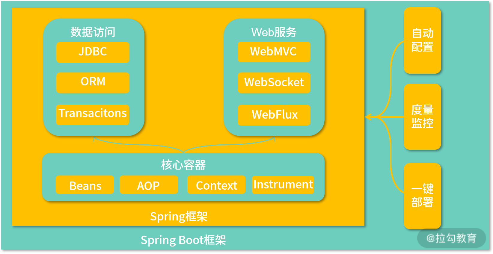
Spring Boot 整体架构图
通过浏览 Spring 的官方网站，我们可以看到 Spring Boot 已经成为 Spring 中顶级的子项目。自 2014 年 4 月发布 1.0.0 版本以来，Spring Boot 俨然已经发展为 Java EE 领域开发 Web 应用程序的首选框架。
让我们先来感受一下使用 Spring Boot 开发一个 RESTful风格 的 HTTP 端点所需要做的编码工作，如下所示：
@SpringBootApplication
@RestController
public class DemoApplication {
@GetMapping("/helloworld")
public String hello() {
return "Hello World!";
}
public static void main(String[] args) {
SpringApplication.run(DemoApplication.class, args);
}
}
这是一个经典的“Hello World”程序，而且使用 Spring Boot 来构建这样一个支持 RESTful 风格的 Web 应用程序只需要几秒钟。一旦创建了一个 Spring Boot 应用程序，并添加类似上面的 DemoApplication 类，我们就可以启动 Spring Boot 内置的 Web 服务器并监听 8080 端口，剩余的一切工作 Spring Boot 都帮你自动完成了，是不是很强大？Spring Boot 的强大之处还不止这一点，让我们一起看一下 Spring Boot 的核心功能。
通过前面的描述，我们已经发现 Spring Boot 具备了传统 Spring 框架所不具备的功能特性，即支持运行期内嵌容器（包含 Tomcat、Jetty 等支持 Servlet 规范的多款传统 Web 容器）。而在最新的 Spring Boot 2.X 版本中，还提供了对 Netty 以及集成 Servlet 3.1+ 的非阻塞式容器的支持。基于运行期内嵌容器机制，开发人员想要启动Web 服务只需要使用一行 java –jar 命令就可以了。
通过前面的代码示例，我们还发现 Spring Boot 的核心功能就是自动配置。在前面的示例中，我们可以看到 Spring Boot 并没有像以前使用 Spring MVC 一样需要指定一大堆关于 HTTP 请求和响应的 XML 配置。事实上，Spring Boot 的运行过程同样还是依赖于 Spring MVC，但是它把原本需要开发人员指定的各种配置项设置了默认值，并内置在了运行时环境中，例如默认的服务器端口就是 8080，如果我们不需要对这些配置项有定制化需求，就可以不做任何的处理，采用既定的开发约定即可。这就是 Spring Boot 所倡导的约定优于配置（Convention over Configuration）设计理念。
另外，相较传统的 Spring 框架，Spring Boot 的一大亮点是引入了内置的监控机制，这是通过 Actuator 组件（常见的包括内存信息、JVM 信息、垃圾回收信息等）来实现的。基于 Actuator 组件，一方面我们可以查看包含自动配置在内的应用程序详细信息，另一方面可以实时监控该应用程序的运行时健康状态。
可以看到，Spring Boot 的上述功能实际上从多个维度简化了 Web 应用程序的开关过程，这些维度包含编码、配置、部署和监控等。在 02 讲中，我们将通过一个具体的案例来对每个维度给出更为详细的描述。
Spring Cloud 与微服务架构
Spring Cloud 构建在 Spring Boot 基础之上，它的整体架构图如下所示：

Spring Cloud 与微服务整体架构图（来自 Spring 官网）
技术组件的完备性是 Spring Cloud 框架的主要优势，它集成了业界一大批知名的微服务开发组件。Spring Cloud 的核心组件如下图所示：
Spring Cloud 核心功能组件
可以看到，基于 Spring Boot 的开发便利性，Spring Cloud 巧妙地简化了微服务系统基础设施的开发过程，Spring Cloud 包含上图中所展示的服务发现注册、API 网关、配置中心、消息总线、负载均衡、熔断器、数据监控等。
Spring 5 与响应式编程
目前，Spring 已经演进到 5.X 版本。随着 Spring 5 的正式发布，我们迎来了响应式编程（Reactive Programming）的全新发展时期。Spring 5 中内嵌了与数据管理相关的响应式数据访问、与系统集成相关的响应式消息通信以及与 Web 服务相关的响应式 Web 框架等多种响应式组件，从而极大地简化了响应式应用程序的开发过程和开发难度。
下图展示了响应式编程的技术栈与传统的 Servlet 技术栈之间的对比：

响应式编程技术栈与 Servlet 技术栈之间的对比图（来自 Spring 官网）
从上图可以看到，上图左侧为基于 Spring WebFlux 的技术栈，右侧为基于 Spring MVC 的技术栈。我们知道传统的 Spring MVC 构建在 Java EE 的 Servlet 标准之上，该标准本身就是阻塞式和同步的，而 Spring WebFlux 基于响应式流，因此可以用来构建异步非阻塞的服务。
在 Spring 5 中，选取了 Project Reactor 作为响应式流的实现库。由于响应式编程的特性，Spring WebFlux 和 Project Reactor 的运行需要依赖于诸如 Netty 和 Undertow 等支持异步机制的容器。同时我们也可以选择使用较新版本的 Tomcat 和 Jetty 作为运行环境，因为它们支持异步 I/O 的 Servlet 3.1。下图更加明显地展示了 Spring MVC 和 Spring WebFlux 之间的区别和联系：

在基于 Spring Boot 以及 Spring Cloud 的应用程序中，Spring WebFlux 和 Spring MVC 可以混合进行使用。
讲完 Spring 家族的技术体系，让我们回到课程。在 01 讲中，我们主要围绕 Spring Boot 框架展开讨论，分别从配置体系、数据访问、Web 服务、消息通信、系统安全、系统监控、应用测试等维度对该框架进行深入的剖析，所采用的版本为 2.2.X 版。
小结与预告
本课时系统分析了 Spring 家族的技术生态，并重点介绍了 Spring Boot、Spring Cloud 和 Spring 响应式编程这三大技术体系。从技术演进的过程和趋势而言，这些工具和框架的出现有其必然性。Spring Boot 是对传统 Spring MVC 的改进，Spring Cloud 基于 Spring Boot 构建微服务架构，而响应式编程则代表未来技术的发展方向。
02 案例驱动：如何剖析一个 Spring Web 应用程序？
在 01 讲中，我们提到 Spring 家族具备很多款开源框架，开发人员可以基于这些开发框架实现各种 Spring 应用程序。在 02 讲中，我们无意对所有这些 Spring 应用程序的类型和开发方式过多展开，而是主要集中在基于 Spring Boot 开发面向 Web 场景的服务，这也是互联网应用程序最常见的表现形式。在介绍基于 Spring Boot 的开发模式之前，让我们先将它与传统的 Spring MVC 进行简单对比。
Spring MVC VS Spring Boot
在典型的 Web 应用程序中，前后端通常采用基于 HTTP 协议完成请求和响应，开发过程中需要完成 URL 地址的映射、HTTP 请求的构建、数据的序列化和反序列化以及实现各个服务自身内部的业务逻辑，如下图所示：

HTTP 请求响应过程
我们先来看基于 Spring MVC 完成上述开发流程所需要的开发步骤，如下图所示：

基于 Spring MVC 的 Web 应用程序开发流程
上图中包括使用 web.xml 定义 Spring 的 DispatcherServlet、完成启动 Spring MVC 的配置文件、编写响应 HTTP 请求的 Controller 以及将服务部署到 Tomcat Web 服务器等步骤。事实上，基于传统的 Spring MVC 框架开发 Web 应用逐渐暴露出一些问题，比较典型的就是配置工作过于复杂和繁重，以及缺少必要的应用程序管理和监控机制。
如果想优化这一套开发过程，有几个点值得我们去挖掘，比方说减少不必要的配置工作、启动依赖项的自动管理、简化部署并提供应用监控等。而这些优化点恰巧推动了以 Spring Boot 为代表的新一代开发框架的诞生，基于 Spring Boot 的开发流程见下图：

基于 Spring Boot 的 Web 应用程序开发流程
从上图中可以看到，它与基于 Spring MVC 的开发流程在配置信息的管理、服务部署和监控等方面有明显不同。作为 Spring 家族新的一员，Spring Boot 提供了令人兴奋的特性，这些特性的核心价值在于确保了开发过程的简单性，具体体现在编码、配置、部署、监控等多个方面。
首先，Spring Boot 使编码更简单。我们只需要在 Maven 中添加一项依赖并实现一个方法就可以提供微服务架构中所推崇的 RESTful 风格接口。
其次，Spring Boot 使配置更简单。它把 Spring 中基于 XML 的功能配置方式转换为 Java Config，同时提供了 .yml 文件来优化原有基于 .properties 和 .xml 文件的配置方案，.yml 文件对配置信息的组织更为直观方便，语义也更为强大。同时，基于 Spring Boot 的自动配置特性，对常见的各种工具和框架均提供了默认的 starter 组件来简化配置。
最后，在部署方案上，Spring Boot 也创造了一键启动的新模式。Spring Boot 部署包结构参考下图：

Spring Boot部署包结构
从图中我们可以看到，相较于传统模式下的 war 包，Spring Boot 部署包既包含了业务代码和各种第三方类库，同时也内嵌了 HTTP 容器。这种包结构支持 java –jar application.jar 方式的一键启动，不需要部署独立的应用服务器，通过默认内嵌 Tomcat 就可以运行整个应用程序。
最后，基于 Spring Boot 新提供的 Actuator 组件，开发和运维人员可以通过 RESTful 接口获取应用程序的当前运行时状态并对这些状态背后的度量指标进行监控和报警。例如可以通过“/env/{name}”端点获取系统环境变量、通过“/mapping”端点获取所有 RESTful 服务、通过“/dump”端点获取线程工作状态以及通过“/metrics/{name}”端点获取 JVM 性能指标等。
剖析一个 Spring Web 应用程序
针对一个基于 Spring Boot 开发的 Web 应用程序，其代码组织方式需要遵循一定的项目结构。在 02 讲中，如果不做特殊说明，我们都将使用 Maven 来管理项目工程中的结构和包依赖。一个典型的 Web 应用程序的项目结构如下图所示：

Spring Boot Web 项目结构图
在上图中，有几个地方需要特别注意，我也在图中做了专门的标注，分别是包依赖、启动类、控制器类以及配置，让我们讲此部分内容分别做一些展开。
包依赖
Spring Boot 提供了一系列 starter 工程来简化各种组件之间的依赖关系。以开发 Web 服务为例，我们需要引入 spring-boot-starter-web 这个工程，而这个工程中并没有具体的代码，只是包含了一些 pom 依赖，如下所示：
- org.springframework.boot:spring-boot-starter
- org.springframework.boot:spring-boot-starter-tomcat
- org.springframework.boot:spring-boot-starter-validation
- com.fasterxml.jackson.core:jackson-databind
- org.springframework:spring-web
- org.springframework:spring-webmvc
可以看到，这里包括了传统 Spring MVC 应用程序中会使用到的 spring-web 和 spring-webmvc 组件，因此 Spring Boot 在底层实现上还是基于这两个组件完成对 Web 请求响应流程的构建。
如果我们使用 Spring Boot 2.2.4 版本，你会发现它所依赖的 Spring 组件都升级到了 5.X 版本，如下图所示：

Spring Boot 2.2.4 版本的包依赖示意图
在应用程序中引入 spring-boot-starter-web 组件就像引入一个普通的 Maven 依赖一样，如下所示。
<dependency>
<groupId>org.springframework.boot</groupId>
<artifactId>spring-boot-starter-web</artifactId>
</dependency>
一旦 spring-boot-starter-web 组件引入完毕，我们就可以充分利用 Spring Boot 提供的自动配置机制开发 Web 应用程序。
启动类
使用 Spring Boot 的最重要的一个步骤是创建一个 Bootstrap 启动类。Bootstrap 类结构简单且比较固化，如下所示：
import org.springframework.boot.SpringApplication;
import org.springframework.boot.autoconfigure.SpringBootApplication;
@SpringBootApplication
public class HelloApplication {
public static void main(String[] args) {
SpringApplication.run(HelloApplication.class, args);
}
}
显然，这里引入了一个全新的注解 @SpringBootApplication。在 Spring Boot 中，添加了该注解的类就是整个应用程序的入口，一方面会启动整个 Spring 容器，另一方面也会自动扫描代码包结构下的 @Component、@Service、@Repository、@Controller 等注解并把这些注解对应的类转化为 Bean 对象全部加载到 Spring 容器中。
控制器类
Bootstrap 类为我们提供了 Spring Boot 应用程序的入口，相当于应用程序已经有了最基本的骨架。接下来我们就可以添加 HTTP 请求的访问入口，表现在 Spring Boot 中也就是一系列的 Controller 类。这里的 Controller 与 Spring MVC 中的 Controller 在概念上是一致的，一个典型的 Controller 类如下所示：
@RestController
@RequestMapping(value = "accounts")
public class AccountController {
@Autowired
private AccountService accountService;
@GetMapping(value = "/{accountId}")
public Account getAccountById(@PathVariable("accountId") Long accountId) {
Account account = accountService.getAccountById(accountId);
return account;
}
}
请注意，以上代码中包含了 @RestController、@RequestMapping 和 @GetMapping 这三个注解。其中，@RequestMapping 用于指定请求地址的映射关系，@GetMapping 的作用等同于指定了 GET 请求的 @RequestMapping 注解，而 @RestController 注解是传统 Spring MVC 中所提供的 @Controller 注解的升级版，相当于就是 @Controller 和 @ResponseEntity 注解的结合体，会自动使用 JSON 实现序列化/反序列化操作。
配置文件
我们注意到，在 src/main/resources 目录下存在一个 application.yml 文件，这就是 Spring Boot 中的主配置文件。例如，我们可以将如下所示的端口、服务名称以及数据库访问等配置信息添加到这个配置文件中：
server:
port: 8081
spring:
application:
name: orderservice
datasource:
driver-class-name: com.mysql.cj.jdbc.Driver
url: jdbc:mysql://127.0.0.1:3306/appointment
username: root
password: root
事实上，Spring Boot 提供了强大的自动配置机制，如果没有特殊的配置需求，开发人员完全可以基于 Spring Boot 内置的配置体系完成诸如数据库访问相关配置信息的自动集成。
案例驱动：SpringCSS
介绍完了基于 Spring Boot 创建一个 Web 应用的基本流程之后，我们将引出本课程的案例系统 SpringCSS，这里的 CSS 是对客户服务系统 Customer Service System 的简称。客服服务是电商、健康类业务场景中非常常见的一种业务场景，我们将通过构建一个精简但又完整的系统来展示 Spring Boot 相关设计理念和各项技术组件。
现实场景下的客户服务业务逻辑一般都非常复杂，而案例系统的目的在于演示技术实现过程，不在于介绍具体业务逻辑。所以，我们对案例的业务流程做了高度的简化，但涉及的各项技术都可以直接应用到日常开发过程中。
SpringCSS 整体架构
在 SpringCSS 中，存在一个 customer-service，这是一个 Spring Boot 应用程序，也是整个案例系统中的主体服务。在该服务中，我们可以将采用经典的分层架构，即将服务分成 Web 层、Service 层和 Repository 层。
在客服系统中，我们知道其核心业务是生成客户工单。为此，customer-service 一般会与用户服务 account-service 进行交互，但因为用户账户信息的更新属于低频事件，所以我们设计的实现方式是 account-service 通过消息中间件的方式将用户账户变更信息主动推送给 customer–service，从而完成用户信息的获取操作。而针对 order-service，其定位是订单系统，customer-service 也需要从该服务中查询订单信息。SpringCSS 的整个系统交互过程如下图所示：

SpringCSS 系统的整体架构图
在上图中，引出了构建 SpringCSS 的多项技术组件，在后续课程中我们会对这些技术组件做专题介绍。
从案例实战到原理剖析
更进一步，通过案例帮你完成基于 Spring Boot 框架构建 Web 应用程序是 02 讲的一大目标，但也不是唯一目标。作为扩展，希望我们通过对优秀开源框架的学习，掌握各个核心组件背后的运行机制，进而深入理解架构的实现原理。
在本专栏中，我们将通过熟悉源码，剖析 Spring Boot 中核心组件的工作原理，典型的场景包括 Spring Boot 的自动配置实现原理、数据库访问实现原理、HTTP 远程调用实现原理等。
通过源码级的深入剖析学习上述核心组件的实现原理时，你可以掌握系统架构设计和实现过程中的方法和技巧，并指导日常的开发工作。
小结与预告
案例分析是掌握一个框架应用方式的最好方法。本课程是一款以案例驱动的 Spring Boot 应用程序开发课程，今天我们主要针对一个典型的 Spring Boot Web 应用程序的组织结构和开发方式进行了详细介绍，并引出了贯穿整个课程体系的 SpringCSS 案例系统。
03 多维配置：如何使用 Spring Boot 中的配置体系？
配置体系是基于 Spring Boot 框架开发应用程序的基础，而自动配置也是该框架的核心功能之一。今天我将带领大家梳理使用 Spring Boot 配置体系的系统方法。我们先从创建和运行第一个 Web 应用程序开始吧。
创建第一个 Spring Boot Web 应用程序
基于 Spring Boot 创建 Web 应用程序的方法有很多，但最简单、最直接的方法是使用 Spring 官方提供的 Spring Initializer 初始化模板。
初始化使用操作：直接访问 Spring Initializer 网站（http://start.spring.io/），选择创建一个 Maven 项目并指定相应的 Group 和 Artifact，然后在添加的依赖中选择 Spring Web，点击生成即可。界面效果下图所示：
使用 Spring Initializer 创建 Web 应用程序示意图
当然，对于有一定开发经验的同学而言，我们完全可以基于 Maven 本身的功能特性和结构，来生成上图中的代码工程。
接下来，我们参考 02 讲中关于 Controller 的创建基本方法，来为这个代码工程添加一些支持 RESTful 风格的 HTTP 端点，在这里我们同样创建一个 CustomerController 类，如下所示：
@RestController
@RequestMapping(value="customers")
public class CustomerController {
@RequestMapping(value = "/{id}", method = RequestMethod.GET)
public CustomerTicket getCustomerTicketById(@PathVariable Long id) {
CustomerTicket customerTicket = new CustomerTicket();
customerTicket.setId(1L);
customerTicket.setAccountId(100L);
customerTicket.setOrderNumber("Order00001");
customerTicket.setDescription("DemoOrder");
customerTicket.setCreateTime(new Date());
return customerTicket;
}
}
请注意，这里是为了演示方便，我们才使用了硬编码完成了一个 HTTP GET 请求的响应处理。
现在 RESTful 端点已经开发完成，我们需要对这个应用程序进行打包。基于 Spring Boot 和 Maven，当我们使用 mvn package 命令构建整个应用程序时，将得到一个 customerservice-0.0.1-SNAPSHOT.jar 文件，而这个 jar 文件就是可以直接运行的可执行文件，内置了 Tomcat Web 服务器。也就是说，我们可以通过如下命令直接运行这个 Spring Boot 应用程序：
java –jar customerservice-0.0.1-SNAPSHOT.jar
那么，如何验证服务是否启动成功，以及 HTTP 请求是否得到正确响应呢？在 03 讲中，我们引入 Postman 来演示如何通过 HTTP 协议暴露的端点进行远程服务访问。
Postman 提供了强大的 Web API 和 HTTP 请求调试功能，界面简洁明晰，操作也比较方便快捷和人性化。Postman 能够发送任何类型的 HTTP 请求（如 GET、HEAD、POST、PUT 等），并能附带任何数量的参数和 HTTP 请求头（Header）。
这时我们通过 Postman 访问“http://localhost:8083/customers/1”端点，可以得到如下图所示的HTTP响应结果，说明整个服务已经启动成功。
好了，现在我们已经明白如何构建、打包以及运行一个简单的 Web 应用程序了，这是一切开发工作的起点，后续所有的案例代码我们都将通过这种方式展现在你面前，包括接下来要介绍的 Spring Boot 配置体系也是一样。
Spring Boot 中的配置体系
在 Spring Boot 中，其核心设计理念是对配置信息的管理采用约定优于配置。在这一理念下，则意味着开发人员所需要设置的配置信息数量比使用传统 Spring 框架时还大大减少。当然，今天我们关注的主要是如何理解并使用 Spring Boot 中的配置信息组织方式，这里就需要引出一个核心的概念，即 Profile。
配置文件与 Profile
Profile 本质上代表一种用于组织配置信息的维度，在不同场景下可以代表不同的含义。例如，如果 Profile 代表的是一种状态，我们可以使用 open、halfopen、close 等值来分别代表全开、半开和关闭等。再比如系统需要设置一系列的模板，每个模板中保存着一系列配置项，那么也可以针对这些模板分别创建 Profile。这里的状态或模版的定义完全由开发人员自主设计，我们可以根据需要自定义各种 Profile，这就是 Profile 的基本含义。
另一方面，为了达到集中化管理的目的，Spring Boot 对配置文件的命名也做了一定的约定，分别使用 label 和 profile 概念来指定配置信息的版本以及运行环境，其中 label 表示配置版本控制信息，而 profile 则用来指定该配置文件所对应的环境。在 Spring Boot 中，配置文件同时支持 .properties 和 .yml 两种文件格式，结合 label 和 profile 概念，如下所示的配置文件命名都是常见和合法的：
/{application}.yml
/{application}-{profile}.yml
/{label}/{application}-{profile}.yml
/{application}-{profile}.properties
/{label}/{application}-{profile}.properties
Yaml 的语法和其他高级语言类似，并且可以非常直观地表达各种列表、清单、标量等数据形态，特别适合用来表达或编辑数据结构和各种配置文件。在这里，我们指定了如下所示的数据源配置，这里使用了 . yml 文件，如下所示：
spring:
datasource:
driver-class-name: com.mysql.cj.jdbc.Driver
url: jdbc:mysql://127.0.0.1:3306/account
username: root
password: root
如果采用 .propertie 配置文件，那么上述配置信息将表示为如下的形式：
spring.datasource.driverClassName=com.mysql.cj.jdbc.Driver
spring.datasource.url=jdbc:mysql://127.0.0.1:3306/account
spring.datasource.username=root
spring.datasource.password=root
显然，类似这样的数据源通常会根据环境的不同而存在很多套配置。假设我们存在如下所示的配置文件集合：
多配置文件示意图
注意，这里有一个全局的 application.yml 配置文件以及多个局部的 profile 配置文件。那么，如何指定当前所使用的那一套配置信息呢？在 Spring Boot 中，我们可以在主 application.properties 中使用如下的配置方式来激活当前所使用的 Profile：
spring.profiles.active = test
上述配置项意味着系统当前会读取 application-test.yml 配置文件中的配置内容。同样，如果使用 .yml 文件，则可以使用如下所示的配置方法：
spring:
profiles:
active: test
事实上，我们也可以同时激活几个 Profile，这完全取决于你对系统配置的需求和维度：
spring.profiles.active: prod, myprofile1, myprofile2
当然，如果你想把所有的 Profile 配置信息只保存在一个文件中而不是分散在多个配置文件中， Spring Boot 也是支持的，需要做的事情只是对这些信息按 Profile 进行组织、分段，如下所示：
spring:
profiles: test
#test 环境相关配置信息
spring:
profiles: prod
#prod 环境相关配置信息
尽管上述方法是有效的，但在 03 讲中，还是推荐你按多个配置文件的组织方法管理各个 Profile 配置信息，这样才不容易混淆和出错。
最后，如果我们不希望在全局配置文件中指定所需要激活的 Profile，而是想把这个过程延迟到运行这个服务时，那么我们可以直接在 java –jar 命令中添加“--spring.profiles.active”参数，如下所示：
java –jar customerservice-0.0.1-SNAPSHOT.jar --spring.profiles.active=prod
这种实现方案在通过脚本进行自动化打包和部署的场景下非常有用。
代码控制与Profile
在 Spring Boot 中，Profile 这一概念的应用场景还包括动态控制代码执行流程。为此，我们需要使用 @Profile 注解，先来看一个简单的示例。
@Configuration
public class DataSourceConfig {
@Bean
@Profile("dev")
public DataSource devDataSource() {
//创建 dev 环境下的 DataSource
}
@Bean()
@Profile("prod")
public DataSource prodDataSource(){
//创建 prod 环境下的 DataSource
}
}
可以看到，我们构建了一个 DataSourceConfig 配置类来专门管理各个环境所需的 DataSource。注意到这里使用 @Profile 注解来指定具体所需要执行的 DataSource 创建代码，通过这种方式，可以达到与使用配置文件相同的效果。
更进一步，能够在代码中控制 JavaBean 的创建过程为我们根据各种条件动态执行代码流程提供了更大的可能性。例如，在日常开发过程中，一个常见的需求是根据不同的运行环境初始化数据，常见的做法是独立执行一段代码或脚本。基于 @Profile 注解，我们就可以将这一过程包含在代码中并做到自动化，如下所示：
@Profile("dev")
@Configuration
public class DevDataInitConfig {
@Bean
public CommandLineRunner dataInit() {
return new CommandLineRunner() {
@Override
public void run(String... args) throws Exception {
//执行 Dev 环境的数据初始化
};
}
这里用到了 Spring Boot 所提供了启动时任务接口 CommandLineRunner，实现了该接口的代码会在 Spring Boot 应用程序启动时自动进行执行，我们会在后续的课程中看到这个接口的具体使用方法。
@Profile 注解的应用范围很广，我们可以将它添加到包含 @Configuration 和 @Component 注解的类及其方法，也就是说可以延伸到继承了 @Component 注解的 @Service、@Controller、@Repository 等各种注解中。
常见配置场景和内容
在今天课程的最后，我们给出几个常见的配置示例来帮助你进一步加深对 Spring Boot 中配置体系的理解。
对于一个 Web 应用程序而言，最常见的配置可能就是指定服务暴露的端口地址，如下所示：
server:
port: 8080
同时，数据库访问也是 Web 应用程序的基本功能，因此，关于数据源的设置也是常见的一种配置场景，我们在 02 讲中创建第一个 Spring Boot Web 应用程序时给出了一个基本的示例。这里再以 JPA 为例，给出如下所示的一种配置方案：
spring:
jpa:
hibernate:
ddl-auto: create
show-sql: true
显然，这里使用了 Hibernate 作为 JPA 规范的实现框架，并设置了 show-sql 等相关属性。然后，开发人员一般也需要设置日志级别和对象，如下所示的就是一个典型的配置示例：
logging.level.root=WARN
logging.level.com.springcss.customer=INFO
我们设置了系统的全局日志级别为 WARN，而针对自定义的 com.springcss.customer 包下的日志则将其级别调整到 INFO。
随时本课程内容的展开，这些常见的配置信息都会在我们的 SpringCSS 案例分析中得到展示。这里需要注意的是，Spring Boot 基于 application.properties 或 application.yml 全局配置文件已经自动内置了很多默认配置。即使我们不设置上述配置内容，Spring Boot 仍然可以基于这些默认配置完成系统的初始化。自动配置是 Spring Boot 中的一个核心概念，我们会在后续内容中给出详细的实现原理分析。
小结与预告
配置体系是学习 Spring Boot 应用程序的基础。在今天的课程中，我们系统梳理了 Spring Boot 中的 Profile 概念，以及如何通过配置文件和代码控制的方式来使用这一核心概念。
04 定制配置：如何创建和管理自定义的配置信息？
03 讲中，我们介绍了 Spring Boot 中的配置体系，梳理了配置文件的组织结构以及如何通过代码实现动态的配置信息加载过程。今天我们将在 03 讲的基础上，给出更多与配置体系相关的高级用法，以及如何创建和管理各种自定义的配置信息。
如何在应用程序中嵌入系统配置信息？
我们知道 Spring Boot 通过自动配置机制内置了很多默认的配置信息，而在这些配置信息中，有一部分系统配置信息也可以反过来作为配置项应用到我们的应用程序中。
例如，如果想要获取当前应用程序的名称并作为一个配置项进行管理，那么很简单，我们直接通过 ${spring.application.name} 占位符就可以做到这一点，如下所示：
myapplication.name : ${spring.application.name}
通过 ${} 占位符同样可以引用配置文件中的其他配置项内容，如在下列配置项中，最终“system.description”配置项的值就是“The system springcss is used for health”。
system.name=springcss
system.domain=health
system.description=The system ${name} is used for ${domain}.
再来看一种场景，假设我们使用 Maven 来构建应用程序，那么可以按如下所示的配置项来动态获取与系统构建过程相关的信息：
info:
app:
encoding: @project.build.sourceEncoding@
java:
source: @java.version@
target: @java.version@
上述配置项的效果与如下所示的静态配置是一样的：
info:
app:
encoding: UTF-8
java:
source: 1.8.0_31
target: 1.8.0_31
根据不同的需求，在应用程序中嵌入系统配置信息是很有用的，特别是在一些面向 DevOps 的应用场景中。
如何创建和使用自定义配置信息？
在现实的开发过程中，面对纷繁复杂的应用场景，Spring Boot 所提供的内置配置信息并不一定能够完全满足开发的需求，这就需要开发人员创建并管理各种自定义的配置信息。例如，对于一个电商类应用场景，为了鼓励用户完成下单操作，我们希望每完成一个订单给就给到用户一定数量的积分。从系统扩展性上讲，这个积分应该是可以调整的，所以我们创建了一个自定义的配置项，如下所示：
springcss.order.point = 10
这里，我们设置了每个订单对应的积分为 10，那么应用程序该如何获取这个配置项的内容呢？通常有两种方法。
使用 @Value 注解
使用 @Value 注解来注入配置项内容是一种传统的实现方法。针对前面给出的自定义配置项，我们可以构建一个 SpringCssConfig 类，如下所示：
@Component
public class SpringCssConfig {
@Value("${springcss.order.point}")
private int point;
}
在 SpringCssConfig 类中，我们要做的就是在字段上添加 @Value 注解，并指向配置项的名称即可。
使用 @ConfigurationProperties 注解
相较 @Value 注解，更为现代的一种做法是使用 @ConfigurationProperties 注解。在使用该注解时，我们通常会设置一个“prefix”属性用来指定配置项的前缀，如下所示：
@Component
@ConfigurationProperties(prefix = "springcss.order")
public class SpringCsshConfig {
private int point;
//省略 getter/setter
}
相比 @Value 注解只能用于指定具体某一个配置项，@ConfigurationProperties 可以用来批量提取配置内容。只要指定 prefix，我们就可以把该 prefix 下的所有配置项按照名称自动注入业务代码中。
我们考虑一种更常见也更复杂的场景：假设用户根据下单操作获取的积分并不是固定的，而是根据每个不同类型的订单会有不同的积分，那么现在的配置项的内容，如果使用 Yaml 格式的话就应该是这样：
springcss:
points:
orderType[1]: 10
orderType[2]: 20
orderType[3]: 30
如果想把这些配置项全部加载到业务代码中，使用 @ConfigurationProperties 注解同样也很容易实现。我们可以直接在配置类 SpringCssConfig 中定义一个 Map 对象，然后通过 Key-Value 对来保存这些配置数据，如下所示：
@Component
@ConfigurationProperties(prefix="springcss.points")
public class SpringCssConfig {
private Map<String, Integer> orderType = new HashMap<>();
//省略 getter/setter
}
可以看到这里通过创建一个 HashMap 来保存这些 Key-Value 对。类似的，我们也可以实现常见的一些数据结构的自动嵌入。
为自定义配置项添加提示功能
如果你已经使用过 Spring Boot 中的配置文件，并添加了一些内置的配置项，你就会发现，当我们输入某一个配置项的前缀时，诸如 IDEA、Eclipse 这样的，IDE 就会自动弹出该前缀下的所有配置信息供你进行选择，效果如下：
IDE 自动提示配置项的效果图
上图的效果对于管理自定义的配置信息非常有用。如何实现这种效果呢？当我们在 application.yml 配置文件中添加一个自定义配置项时，会注意到 IDE 会出现一个提示，说明这个配置项无法被 IDE 所识别，如下所示：
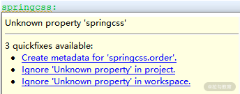
IDE 无法识别配置项时的示意图
遇到这种提示时，我们是可以忽略的，因为它不会影响到任何执行效果。但为了达到自动提示效果，我们就需要生成配置元数据。生成元数据的方法也很简单，直接通过 IDE 的“Create metadata for 'springcss.order.point'”按钮，就可以选择创建配置元数据文件，这个文件的名称为 additional-spring-configuration-metadata.json，文件内容如下所示：
{"properties": [{
"name": "springcss.order.point",
"type": "java.lang.String",
"description": "A description for 'springcss.order.point'"
}]}
现在，假如我们在 application.properties 文件中输入“springcss”，IDE 就会自动提示完整的配置项内容，效果如下所示：
IDE 自动提示 springcss 前缀的效果图
另外，假设我们需要为 springcss.order.point 配置项指定一个默认值，可以通过在元数据中添加一个"defaultValue"项来实现，如下所示：
{"properties": [{
"name": "springcss.order.point",
"type": "java.lang.String",
"description": "'springcss.order.point' is userd for setting the point when dealing with an order.",
"defaultValue": 10
}]}
这时候，在 IDE 中设置这个配置项时，就会提出该配置项的默认值为 10，效果如下所示：
IDE 自动提示包含默认值的 springcss 前缀效果图
如何组织和整合配置信息？
在上一课时中，我们提到了 Profile 概念，Profile 可以认为是管理配置信息中的一种有效手段。今天，我们继续介绍另一种组织和整合配置信息的方法，这种方法同样依赖于前面介绍的 @ConfigurationProperties 注解。
使用 @PropertySources 注解
在使用 @ConfigurationProperties 注解时，我们可以和 @PropertySource 注解一起进行使用，从而指定从哪个具体的配置文件中获取配置信息。例如，在下面这个示例中，我们通过 @PropertySource 注解指定了 @ConfigurationProperties 注解中所使用的配置信息是从当前类路径下的 application.properties 配置文件中进行读取。
@Component
@ConfigurationProperties(prefix = "springcss.order")
@PropertySource(value = "classpath:application.properties")
public class SpringCssConfig {
既然我们可以通过 @PropertySource 注解来指定一个配置文件的引用地址，那么显然也可以引入多个配置文件，这时候用到的是 @PropertySources 注解，使用方式如下所示：
@PropertySources({
@PropertySource("classpath:application.properties "),
@PropertySource("classpath:redis.properties"),
@PropertySource("classpath:mq.properties")
})
public class SpringCssConfig {
这里，我们通过 @PropertySources 注解组合了多个 @PropertySource 注解中所指定的配置文件路径。SpringCssConfig 类可以同时引用所有这些配置文件中的配置项。
另一方面，我们也可以通过配置 spring.config.location 来改变配置文件的默认加载位置，从而实现对多个配置文件的同时加载。例如，如下所示的执行脚本会在启动 customerservice-0.0.1-SNAPSHOT.jar 时加载D盘下的 application.properties 文件，以及位于当前类路径下 config 目录中的所有配置文件：
java -jar customerservice-0.0.1-SNAPSHOT.jar --spring.config.location=file:///D:/application.properties, classpath:/config/
通过 spring.config.location 指定多个配置文件路径也是组织和整合配置信息的一种有效的实现方式。
理解配置文件的加载顺序
通过前面的示例，我们看到可以把配置文件保存在多个路径，而这些路径在加载配置文件时具有一定的顺序。Spring Boot 在启动时会扫描以下位置的 application.properties 或者 application.yml 文件作为全局配置文件：
–file:./config/
–file:./
–classpath:/config/
–classpath:/
以下是按照优先级从高到低的顺序，如下所示：
Spring Boot 会全部扫描上图中的这四个位置，扫描规则是高优先级配置内容会覆盖低优先级配置内容。而如果高优先级的配置文件中存在与低优先级配置文件不冲突的属性，则会形成一种互补配置，也就是说会整合所有不冲突的属性。
如何覆写内置的配置类？
关于 Spring Boot 配置体系，最后值得介绍的就是如何覆写它所提供的配置类。在前面的课程中，我们已经反复强调 Spring Boot 内置了大量的自动配置，如果我们不想使用这些配置，就需要对它们进行覆写。覆写的方法有很多，我们可以使用配置文件、Groovy 脚本以及 Java 代码。这里，我们就以Java代码为例来简单演示覆写配置类的实现方法。
在后续的“如何使用 Spring 构建系统安全层？”专题中，我们将会引入 Spring Security 框架来实现对服务访问的权限控制。在 Spring Security 体系中，设置用户认证信息所依赖的配置类是 WebSecurityConfigurer 类。顾名思义，这是一个设置 Web 安全的配置类。Spring Security 提供了 WebSecurityConfigurerAdapter 这个适配器类来简化该配置类的使用方式，我们可以继承 WebSecurityConfigurerAdapter 类并且覆写其中的 configure() 的方法来完成自定义的用户认证配置工作。典型的 WebSecurityConfigurerAdapter 子类及其代码实现如下所示：
@Configuration
public class SpringHCssWebSecurityConfigurer extends WebSecurityConfigurerAdapter {
@Override
@Bean
public AuthenticationManager authenticationManagerBean() throws Exception {
return super.authenticationManagerBean();
}
@Override
@Bean
public UserDetailsService userDetailsServiceBean() throws Exception {
return super.userDetailsServiceBean();
}
@Override
protected void configure(AuthenticationManagerBuilder builder) throws Exception {
builder.inMemoryAuthentication().withUser("springcss_user").password("{noop}password1").roles("USER").and()
.withUser("springcss_admin").password("{noop}password2").roles("USER", "ADMIN");
}
}
关于该类的具体展开超出了今天的讨论内容范围，我们在后续课程介绍到 Spring Security 时会对上述代码进行详细的展开，这里我们只需要知道，在 Spring Boot 中，提供了一些类的内置配置类，而开发人员可以通过构建诸如上述所示的 SpringCssWebSecurityConfigurer 类来对这些内置配置类进行覆写，从而实现自定义的配置信息。
小结与预告
通常在 Web 应用程序的开发过程中，或多或少都会涉及定制化配置信息的使用。在今天的课程中，我们详细介绍了如何创建和使用自定义配置信息的实现过程，同时也给出了如何组织和整合各种配置信息的方法。
05 自动配置：如何正确理解 Spring Boot 自动配置实现原理？
通过前面几个课时内容的介绍，相信你对 Spring Boot 中的配置体系已经有了全面的了解。Spring Boot 中的配置体系是一套强大而复杂的体系，其中最基础、最核心的要数自动配置（AutoConfiguration）机制了。今天我们将围绕这个话题详细展开讨论，看看 Spring Boot 如何实现自动配置。那我们就先从 @SpringBootApplication 注解开始讲起。
@SpringBootApplication 注解
@SpringBootApplication 注解位于 spring-boot-autoconfigure 工程的 org.springframework.boot.autoconfigure 包中，定义如下：
@Target(ElementType.TYPE)
@Retention(RetentionPolicy.RUNTIME)
@Documented
@Inherited
@SpringBootConfiguration
@EnableAutoConfiguration
@ComponentScan(excludeFilters = {
@Filter(type = FilterType.CUSTOM, classes = TypeExcludeFilter.class),
@Filter(type = FilterType.CUSTOM, classes = AutoConfigurationExcludeFilter.class) })
public @interface SpringBootApplication {
@AliasFor(annotation = EnableAutoConfiguration.class)
Class<?>[] exclude() default {};
@AliasFor(annotation = EnableAutoConfiguration.class)
String[] excludeName() default {};
@AliasFor(annotation = ComponentScan.class, attribute = "basePackages")
String[] scanBasePackages() default {};
@AliasFor(annotation = ComponentScan.class, attribute = "basePackageClasses")
Class<?>[] scanBasePackageClasses() default {};
}
相较一般的注解，@SpringBootApplication 注解显得有点复杂。我们可以通过 exclude 和 excludeName 属性来配置不需要实现自动装配的类或类名，也可以通过 scanBasePackages 和 scanBasePackageClasses 属性来配置需要进行扫描的包路径和类路径。
注意到 @SpringBootApplication 注解实际上是一个组合注解，它由三个注解组合而成，分别是 @SpringBootConfiguration、@EnableAutoConfiguration 和 @ComponentScan。
- @ComponentScan 注解
@ComponentScan 注解不是 Spring Boot 引入的新注解，而是属于 Spring 容器管理的内容。@ComponentScan 注解就是扫描基于 @Component 等注解所标注的类所在包下的所有需要注入的类，并把相关 Bean 定义批量加载到容器中。显然，Spring Boot 应用程序中同样需要这个功能。
- @SpringBootConfiguration 注解
@SpringBootConfiguration 注解比较简单，事实上它是一个空注解，只是使用了 Spring 中的 @Configuration 注解。@Configuration 注解比较常见，提供了 JavaConfig 配置类实现。
- @EnableAutoConfiguration 注解
@EnableAutoConfiguration 注解是我们需要重点剖析的对象，下面进行重点展开。该注解的定义如下代码所示：
@Target(ElementType.TYPE)
@Retention(RetentionPolicy.RUNTIME)
@Documented
@Inherited
@AutoConfigurationPackage
@Import(AutoConfigurationImportSelector.class)
public @interface EnableAutoConfiguration {
String ENABLED_OVERRIDE_PROPERTY = "spring.boot.enableautoconfiguration";
Class<?>[] exclude() default {};
String[] excludeName() default {};
}
这里我们关注两个新注解，@AutoConfigurationPackage 和 @Import(AutoConfigurationImportSelector.class)。
@AutoConfigurationPackage 注解
@AutoConfigurationPackage 注解定义如下：
@Target(ElementType.TYPE)
@Retention(RetentionPolicy.RUNTIME)
@Documented
@Inherited
@Import(AutoConfigurationPackages.Registrar.class)
public @interface AutoConfigurationPackage {
}
从命名上讲，在这个注解中我们对该注解所在包下的类进行自动配置，而在实现方式上用到了 Spring 中的 @Import 注解。在使用 Spring Boot 时，@Import 也是一个非常常见的注解，可以用来动态创建 Bean。为了便于理解后续内容，这里有必要对 @Import 注解的运行机制做一些展开，该注解定义如下：
@Target(ElementType.TYPE)
@Retention(RetentionPolicy.RUNTIME)
@Documented
public @interface Import {
Class<?>[] value();
}
在 @Import 注解的属性中可以设置需要引入的类名，例如 @AutoConfigurationPackage 注解上的 @Import(AutoConfigurationPackages.Registrar.class)。根据该类的不同类型，Spring 容器针对 @Import 注解有以下四种处理方式：
- 如果该类实现了 ImportSelector 接口，Spring 容器就会实例化该类，并且调用其 selectImports 方法；
- 如果该类实现了 DeferredImportSelector 接口，则 Spring 容器也会实例化该类并调用其 selectImports方法。DeferredImportSelector 继承了 ImportSelector，区别在于 DeferredImportSelector 实例的 selectImports 方法调用时机晚于 ImportSelector 的实例，要等到 @Configuration 注解中相关的业务全部都处理完了才会调用；
- 如果该类实现了 ImportBeanDefinitionRegistrar 接口，Spring 容器就会实例化该类，并且调用其 registerBeanDefinitions 方法；
- 如果该类没有实现上述三种接口中的任何一个，Spring 容器就会直接实例化该类。
有了对 @Import 注解的基本理解，我们再来看 AutoConfigurationPackages.Registrar 类，定义如下：
static class Registrar implements ImportBeanDefinitionRegistrar, DeterminableImports {
@Override
public void registerBeanDefinitions(AnnotationMetadata metadata,
BeanDefinitionRegistry registry) {
register(registry, new PackageImport(metadata).getPackageName());
}
@Override
public Set<Object> determineImports(AnnotationMetadata metadata) {
return Collections.singleton(new PackageImport(metadata));
}
}
可以看到这个 Registrar 类实现了前面第三种情况中提到的 ImportBeanDefinitionRegistrar 接口并重写了 registerBeanDefinitions 方法，该方法中调用 AutoConfigurationPackages 自身的 register 方法：
public static void register(BeanDefinitionRegistry registry, String... packageNames) {
if (registry.containsBeanDefinition(BEAN)) {
BeanDefinition beanDefinition = registry.getBeanDefinition(BEAN);
ConstructorArgumentValues constructorArguments = beanDefinition
.getConstructorArgumentValues();
constructorArguments.addIndexedArgumentValue(0,
addBasePackages(constructorArguments, packageNames));
}
else {
GenericBeanDefinition beanDefinition = new GenericBeanDefinition();
beanDefinition.setBeanClass(BasePackages.class);
beanDefinition.getConstructorArgumentValues().addIndexedArgumentValue(0,
packageNames);
beanDefinition.setRole(BeanDefinition.ROLE_INFRASTRUCTURE);
registry.registerBeanDefinition(BEAN, beanDefinition);
}
}
这个方法的逻辑是先判断整个 Bean 有没有被注册，如果已经注册则获取 Bean 的定义，通过 Bean 获取构造函数的参数并添加参数值；如果没有，则创建一个新的 Bean 的定义，设置 Bean 的类型为 AutoConfigurationPackages 类型并进行 Bean 的注册。
AutoConfigurationImportSelector
然后我们再来看 @EnableAutoConfiguration 注解中的 @Import(AutoConfigurationImportSelector.class) 部分，首先我们明确 AutoConfigurationImportSelector 类实现了 @Import 注解第二种情况中的 DeferredImportSelector 接口，所以会执行如下所示的 selectImports 方法：
@Override
public String[] selectImports(AnnotationMetadata annotationMetadata) {
if (!isEnabled(annotationMetadata)) {
return NO_IMPORTS;
}
AutoConfigurationMetadata autoConfigurationMetadata = AutoConfigurationMetadataLoader
.loadMetadata(this.beanClassLoader);
AnnotationAttributes attributes = getAttributes(annotationMetadata);
//获取 configurations 集合
List<String> configurations = getCandidateConfigurations(annotationMetadata,
attributes);
configurations = removeDuplicates(configurations);
Set<String> exclusions = getExclusions(annotationMetadata, attributes);
checkExcludedClasses(configurations, exclusions);
configurations.removeAll(exclusions);
configurations = filter(configurations, autoConfigurationMetadata);
fireAutoConfigurationImportEvents(configurations, exclusions);
return StringUtils.toStringArray(configurations);
}
这段代码的核心是通过 getCandidateConfigurations 方法获取 configurations 集合并进行过滤。getCandidateConfigurations 方法如下所示：
protected List<String> getCandidateConfigurations(AnnotationMetadata metadata,
AnnotationAttributes attributes) {
List<String> configurations = SpringFactoriesLoader.loadFactoryNames(
getSpringFactoriesLoaderFactoryClass(), getBeanClassLoader());
Assert.notEmpty(configurations,
"No auto configuration classes found in META-INF/spring.factories. If you "
+ "are using a custom packaging, make sure that file is correct.");
return configurations;
}
这段代码中可以先关注 Assert 校验，该校验是一个非空校验，会提示 “在 META-INF/spring.factories 中没有找到自动配置类” 这个异常信息。看到这里，不得不提到 JDK 中的 SPI 机制，因为无论从 SpringFactoriesLoader 这个类的命名上，还是 META-INF/spring.factories 这个文件目录，两者之间都存在很大的相通性。关于 JDK 中的 SPI 机制，我们在 05 讲的后续内容中马上就会介绍到。
从类名上看，AutoConfigurationImportSelector 类是一种选择器，负责从各种配置项中找到需要导入的具体配置类。该类的结构如下图所示：

AutoConfigurationImportSelector 类层结构图
显然，AutoConfigurationImportSelector 所依赖的最关键组件就是 SpringFactoriesLoader，下面我们对其进行具体展开。
SPI 机制和 SpringFactoriesLoader
要想理解 SpringFactoriesLoader 类，我们首先需要了解 JDK 中 SPI（Service Provider Interface，服务提供者接口）机制。
JDK 中的 SPI 机制
JDK 提供了用于服务查找的一个工具类 java.util.ServiceLoader 来实现 SPI 机制。当服务提供者提供了服务接口的一种实现之后，我们可以在 jar 包的 META-INF/services/ 目录下创建一个以服务接口命名的文件，该文件里配置着一组 Key-Value，用于指定服务接口与实现该服务接口具体实现类的映射关系。而当外部程序装配这个 jar 包时，就能通过该 jar 包 META-INF/services/ 目录中的配置文件找到具体的实现类名，并装载实例化，从而完成模块的注入。SPI 提供了一种约定，基于该约定就能很好地找到服务接口的实现类，而不需要在代码里硬编码指定。JDK 中 SPI 机制开发流程如下图所示：
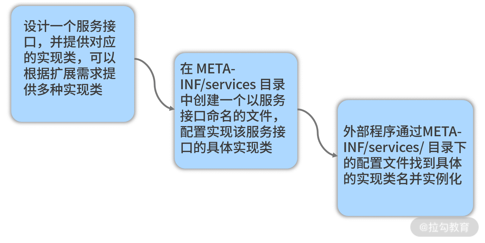
JDK 中 SPI 机制开发流程图
SpringFactoriesLoader
SpringFactoriesLoader 类似这种 SPI 机制，只不过以服务接口命名的文件是放在 META-INF/spring.factories 文件夹下，对应的 Key 为 EnableAutoConfiguration。SpringFactoriesLoader 会查找所有 META-INF/spring.factories 文件夹中的配置文件，并把 Key 为 EnableAutoConfiguration 所对应的配置项通过反射实例化为配置类并加载到容器中。这一点我们可以在 SpringFactoriesLoader 的 loadSpringFactories 方法中进行印证：
private static Map<String, List<String>> loadSpringFactories(@Nullable ClassLoader classLoader) {
MultiValueMap<String, String> result = cache.get(classLoader);
if (result != null) {
return result;
}
try {
Enumeration<URL> urls = (classLoader != null ?
classLoader.getResources(FACTORIES_RESOURCE_LOCATION) :
ClassLoader.getSystemResources(FACTORIES_RESOURCE_LOCATION));
result = new LinkedMultiValueMap<>();
while (urls.hasMoreElements()) {
URL url = urls.nextElement();
UrlResource resource = new UrlResource(url);
Properties properties = PropertiesLoaderUtils.loadProperties(resource);
for (Map.Entry<?, ?> entry : properties.entrySet()) {
String factoryClassName = ((String) entry.getKey()).trim();
for (String factoryName : StringUtils.commaDelimitedListToStringArray((String) entry.getValue())) {
result.add(factoryClassName, factoryName.trim());
}
}
}
cache.put(classLoader, result);
return result;
}
catch (IOException ex) {
throw new IllegalArgumentException("Unable to load factories from location [" +
FACTORIES_RESOURCE_LOCATION + "]", ex);
}
}
以下就是 spring-boot-autoconfigure 工程中所使用的 spring.factories 配置文件片段，可以看到 EnableAutoConfiguration 项中包含了各式各样的配置项，这些配置项在 Spring Boot 启动过程中都能够通过 SpringFactoriesLoader 加载到运行时环境，从而实现自动化配置：
# Auto Configure
org.springframework.boot.autoconfigure.EnableAutoConfiguration=\
org.springframework.boot.autoconfigure.admin.SpringApplicationAdminJmxAutoConfiguration,\
org.springframework.boot.autoconfigure.aop.AopAutoConfiguration,\
org.springframework.boot.autoconfigure.amqp.RabbitAutoConfiguration,\
org.springframework.boot.autoconfigure.MessageSourceAutoConfiguration,\
org.springframework.boot.autoconfigure.PropertyPlaceholderAutoConfiguration,\
org.springframework.boot.autoconfigure.batch.BatchAutoConfiguration,\
org.springframework.boot.autoconfigure.cache.CacheAutoConfiguration,\
org.springframework.boot.autoconfigure.cassandra.CassandraAutoConfiguration,\
org.springframework.boot.autoconfigure.cloud.CloudAutoConfiguration,\
org.springframework.boot.autoconfigure.context.ConfigurationPropertiesAutoConfiguration,\
…
以上就是 Spring Boot 中基于 @SpringBootApplication 注解实现自动配置的基本过程和原理。当然，@SpringBootApplication 注解也可以基于外部配置文件加载配置信息。基于约定优于配置思想，Spring Boot 在加载外部配置文件的过程中大量使用了默认配置。
@ConditionalOn 系列条件注解
Spring Boot 默认提供了 100 多个 AutoConfiguration 类，显然我们不可能会全部引入。所以在自动装配时，系统会去类路径下寻找是否有对应的配置类。如果有对应的配置类，则按条件进行判断，决定是否需要装配。这里就引出了在阅读 Spring Boot 代码时经常会碰到的另一批注解，即 @ConditionalOn 系列条件注解。
@ConditionalOn 系列条件注解的示例
我们先通过一个简单的示例来了解 @ConditionalOn 系列条件注解的使用方式，例如以下代码就是这类注解的一种典型应用，该代码位于 Spring Cloud Config 的客户端代码工程 spring-cloud-config-client 中：
@Bean @ConditionalOnMissingBean(ConfigServicePropertySourceLocator.class)
@ConditionalOnProperty(value = "spring.cloud.config.enabled", matchIfMissing = true)
public ConfigServicePropertySourceLocator configServicePropertySource(ConfigClientProperties properties) {
ConfigServicePropertySourceLocator locator = new ConfigServicePropertySourceLocator(
properties);
return locator;
}
可以看到，这里运用了两个 @ConditionalOn 注解，一个是 @ConditionalOnMissingBean，一个是 @ConditionalOnProperty。再比如在 Spring Cloud Config 的服务器端代码工程 spring-cloud-config-server 中，存在如下 ConfigServerAutoConfiguration 自动配置类：
@Configuration
@ConditionalOnBean(ConfigServerConfiguration.Marker.class)
@EnableConfigurationProperties(ConfigServerProperties.class)
@Import({ EnvironmentRepositoryConfiguration.class, CompositeConfiguration.class, ResourceRepositoryConfiguration.class,
ConfigServerEncryptionConfiguration.class, ConfigServerMvcConfiguration.class })
public class ConfigServerAutoConfiguration {
}
这里我们运用了 @ConditionalOnBean 注解。实际上，Spring Boot 中提供了一系列的条件注解，常见的包括：
- @ConditionalOnProperty：只有当所提供的属性属于 true 时才会实例化 Bean
- @ConditionalOnBean：只有在当前上下文中存在某个对象时才会实例化 Bean
- @ConditionalOnClass：只有当某个 Class 位于类路径上时才会实例化 Bean
- @ConditionalOnExpression：只有当表达式为 true 的时候才会实例化 Bean
- @ConditionalOnMissingBean：只有在当前上下文中不存在某个对象时才会实例化 Bean
- @ConditionalOnMissingClass：只有当某个 Class 在类路径上不存在的时候才会实例化 Bean
- @ConditionalOnNotWebApplication：只有当不是 Web 应用时才会实例化 Bean
当然 Spring Boot 还提供了一些不大常用的 @ConditionalOnXXX 注解，这些注解都定义在 org.springframework.boot.autoconfigure.condition 包中。
显然上述 ConfigServicePropertySourceLocator 类中只有在 "spring.cloud.config.enabled" 属性为 true（通过 matchIfMissing 配置项表示默认即为 true）以及类路径上不存在 ConfigServicePropertySourceLocator 时才会进行实例化。而 ConfigServerAutoConfiguration 只有在类路径上存在 ConfigServerConfiguration.Marker 类时才会进行实例化，这是一种常用的自动配置控制技巧。
@ConditionalOn 系列条件注解的实现原理
@ConditionalOn 系列条件注解非常多，我们无意对所有这些组件进行展开。事实上这些注解的实现原理也大致相同，我们只需要深入了解其中一个就能做到触类旁通。这里我们挑选 @ConditionalOnClass 注解进行展开，该注解定义如下：
@Target({ ElementType.TYPE, ElementType.METHOD })
@Retention(RetentionPolicy.RUNTIME)
@Documented
@Conditional(OnClassCondition.class)
public @interface ConditionalOnClass {
Class<?>[] value() default {};
String[] name() default {};
}
可以看到， @ConditionalOnClass 注解本身带有两个属性，一个 Class 类型的 value，一个 String 类型的 name，所以我们可以采用这两种方式中的任意一种来使用该注解。同时 ConditionalOnClass 注解本身还带了一个 @Conditional(OnClassCondition.class) 注解。所以， ConditionalOnClass 注解的判断条件其实就包含在 OnClassCondition 这个类中。
OnClassCondition 是 SpringBootCondition 的子类，而 SpringBootCondition 又实现了Condition 接口。Condition 接口只有一个 matches 方法，如下所示：
public interface Condition {
boolean matches(ConditionContext context, AnnotatedTypeMetadata metadata);
}
SpringBootCondition 中的 matches 方法实现如下：
@Override
public final boolean matches(ConditionContext context,
AnnotatedTypeMetadata metadata) {
String classOrMethodName = getClassOrMethodName(metadata);
try {
ConditionOutcome outcome = getMatchOutcome(context, metadata);
logOutcome(classOrMethodName, outcome);
recordEvaluation(context, classOrMethodName, outcome);
return outcome.isMatch();
}
//省略其他方法
}
这里的 getClassOrMethodName 方法获取被添加了@ConditionalOnClass 注解的类或者方法的名称，而 getMatchOutcome 方法用于获取匹配的输出。我们看到 getMatchOutcome 方法实际上是一个抽象方法，需要交由 SpringBootCondition 的各个子类完成实现，这里的子类就是 OnClassCondition 类。在理解 OnClassCondition 时，我们需要明白在 Spring Boot 中，@ConditionalOnClass 或者 @ConditionalOnMissingClass 注解对应的条件类都是 OnClassCondition，所以在 OnClassCondition 的 getMatchOutcome 中会同时处理两种情况。这里我们挑选处理 @ConditionalOnClass 注解的代码，核心逻辑如下所示：
ClassLoader classLoader = context.getClassLoader();
ConditionMessage matchMessage = ConditionMessage.empty();
List<String> onClasses = getCandidates(metadata, ConditionalOnClass.class);
if (onClasses != null) {
List<String> missing = getMatches(onClasses, MatchType.MISSING, classLoader);
if (!missing.isEmpty()) {
return ConditionOutcome
.noMatch(ConditionMessage.forCondition(ConditionalOnClass.class)
.didNotFind("required class", "required classes")
.items(Style.QUOTE, missing));
}
matchMessage = matchMessage.andCondition(ConditionalOnClass.class)
.found("required class", "required classes").items(Style.QUOTE, getMatches(onClasses, MatchType.PRESENT, classLoader));
}
这里有两个方法值得注意，一个是 getCandidates 方法，一个是 getMatches 方法。首先通过 getCandidates 方法获取了 ConditionalOnClass 的 name 属性和 value 属性。然后通过 getMatches 方法将这些属性值进行比对，得到这些属性所指定的但在类加载器中不存在的类。如果发现类加载器中应该存在但事实上又不存在的类，则返回一个匹配失败的 Condition；反之，如果类加载器中存在对应类的话，则把匹配信息进行记录并返回一个 ConditionOutcome。
从源码解析到日常开发
在今天的内容中，我们接触到了 Spring Boot 开发过程中非常核心的话题，即自动配置。自动配置是理解 Spring Boot 应用程序构建和运行的关键要素。当我们尝试去理解一个基于 Spring Boot 开发的工具或框架时，今天的内容能帮助你快速切入该工具或框架的实现原理。同时，在日常开发过程中，诸如 SPI 机制和 @ConditionalOn 系列条件注解也都可以直接应用到我们自身的系统设计和开发中，从而提供高扩展性的架构实现方案。
小结与预告
可以说，自动配置是 Spring Boot 最核心和最基本的功能，而 @SpringBootApplication 注解又是 Spring Boot 应用程序的入口。本课时从 @SpringBootApplication 注解入手，详细分析了自动配置机制的实现过程。涉及的知识点比较多，包含 JDK 中的 SPI 机制，以及 @ConditionalOn 系列条件注解，需要你进行分析和掌握。
06 基础规范：如何理解 JDBC 关系型数据库访问规范？
从今天开始，我们将进入 Spring Boot 另一个核心技术体系的讨论，即数据访问技术体系。无论是互联网应用还是传统软件，对于任何一个系统而言，数据的存储和访问都是不可缺少的。
数据访问层的构建可能会涉及多种不同形式的数据存储媒介，本课程关注的是最基础也是最常用的数据存储媒介，即关系型数据库，针对关系型数据库，Java 中应用最广泛的就是 JDBC 规范，今天我们将对这个经典规范展开讨论。
JDBC 是 Java Database Connectivity 的全称，它的设计初衷是提供一套能够应用于各种数据库的统一标准，这套标准需要不同数据库厂家之间共同遵守，并提供各自的实现方案供 JDBC 应用程序调用。
作为一套统一标准，JDBC 规范具备完整的架构体系，如下图所示：

JDBC 规范整体架构图
从上图中可以看到，Java 应用程序通过 JDBC 所提供的 API 进行数据访问，而这些 API 中包含了开发人员所需要掌握的各个核心编程对象，下面我们一起来看下。
JDBC 规范中有哪些核心编程对象？
对于日常开发而言，JDBC 规范中的核心编程对象包括 DriverManger、DataSource、Connection、Statement，及 ResultSet。
DriverManager
正如前面的 JDBC 规范整体架构图中所示，JDBC 中的 DriverManager 主要负责加载各种不同的驱动程序（Driver），并根据不同的请求向应用程序返回相应的数据库连接（Connection），应用程序再通过调用 JDBC API 实现对数据库的操作。
JDBC 中的 Driver 定义如下，其中最重要的是第一个获取 Connection 的 connect 方法：
public interface Driver {
//获取数据库连接
Connection connect(String url, java.util.Properties info)
throws SQLException;
boolean acceptsURL(String url) throws SQLException;
DriverPropertyInfo[] getPropertyInfo(String url, java.util.Properties info)
throws SQLException;
int getMajorVersion();
int getMinorVersion();
boolean jdbcCompliant();
public Logger getParentLogger() throws SQLFeatureNotSupportedException;
}
针对 Driver 接口，不同的数据库供应商分别提供了自身的实现方案。例如，MySQL 中的 Driver 实现类如下代码所示：
public class Driver extends NonRegisteringDriver implements java.sql.Driver {
// 通过 DriverManager 注册 Driver
static {
try {
java.sql.DriverManager.registerDriver(new Driver());
} catch (SQLException E) {
throw new RuntimeException("Can't register driver!");
}
}
…
}
这里就使用用了 DriverManager，而 DriverManager 除提供了上述用于注册 Driver 的 registerDriver 方法之外，还提供了 getConnection 方法用于针对具体的 Driver 获取 Connection 对象。
DataSource
通过前面的介绍，我们知道在 JDBC 规范中可直接通过 DriverManager 获取 Connection，我们也知道获取 Connection 的过程需要建立与数据库之间的连接，而这个过程会产生较大的系统开销。
为了提高性能，通常我们首先会建立一个中间层将 DriverManager 生成的 Connection 存放到连接池中，再从池中获取 Connection。
而我们可以认为 DataSource 就是这样一个中间层，它作为 DriverManager 的替代品而推出，是获取数据库连接的首选方法。
DataSource 在 JDBC 规范中代表的是一种数据源，核心作用是获取数据库连接对象 Connection。在日常开发过程中，我们通常会基于 DataSource 获取 Connection。DataSource 接口的定义如下代码所示：
public interface DataSource extends CommonDataSource, Wrapper {
Connection getConnection() throws SQLException;
Connection getConnection(String username, String password)
throws SQLException;
}
从上面我们可以看到，DataSource 接口提供了两个获取 Connection 的重载方法，并继承了 CommonDataSource 接口。CommonDataSource 是 JDBC 中关于数据源定义的根接口，除了 DataSource 接口之外，它还有另外两个子接口，如下图所示：

DataSource 类层结构图
其中，DataSource 是官方定义的获取 Connection 的基础接口，XADataSource 用来在分布式事务环境下实现 Connection 的获取，而 ConnectionPoolDataSource 是从连接池 ConnectionPool 中获取 Connection 的接口。
所谓的 ConnectionPool 相当于预先生成一批 Connection 并存放在池中，从而提升 Connection 获取的效率。
请注意 DataSource 接口同时还继承了一个 Wrapper 接口。从接口的命名上看，我们可以判断该接口起到一种包装器的作用。事实上，因为很多数据库供应商提供了超越标准 JDBC API 的扩展功能，所以 Wrapper 接口可以把一个由第三方供应商提供的、非 JDBC 标准的接口包装成标准接口。
以 DataSource 接口为例，如果我们想自己实现一个定制化的数据源类 MyDataSource，就可以提供一个实现了 Wrapper 接口的 MyDataSourceWrapper 类来完成包装和适配，如下图所示：

通过 Wrapper 接口扩展 JDBC 规范示意图
在 JDBC 规范中，除了 DataSource 之外，Connection、Statement、ResultSet 等核心对象也都继承了这个 Wrapper 接口。
作为一种基础组件，它同样不需要开发人员自己实现 DataSource，因为业界已经存在了很多优秀的实现方案，如 DBCP、C3P0 和 Druid 等。
例如 Druid 提供了 DruidDataSource，它不仅提供了连接池的功能，还提供了诸如监控等其他功能，它的类层结构如下图所示：

DruidDataSource 的类层结构
Connection
DataSource 的目的是获取 Connection 对象。我们可以把 Connection 理解为一种会话（Session）机制，Connection 代表一个数据库连接，负责完成与数据库之间的通信。
所有 SQL 的执行都是在某个特定 Connection 环境中进行的，同时它还提供了一组重载方法分别用于创建 Statement 和 PreparedStatement。另一方面，Connection 也涉及事务相关的操作。
Connection 接口中定义的方法很丰富，其中最核心的几个方法如下代码所示：
public interface Connection extends Wrapper, AutoCloseable {
//创建 Statement
Statement createStatement() throws SQLException;
//创建 PreparedStatement
PreparedStatement prepareStatement(String sql) throws SQLException;
//提交
void commit() throws SQLException;
//回滚
void rollback() throws SQLException;
//关闭连接
void close() throws SQLException;
}
这里涉及具体负责执行 SQL 语句的 Statement 和 PreparedStatement 对象，我们接着往下看。
Statement/PreparedStatement
JDBC 规范中的 Statement 存在两种类型，一种是普通的 Statement，一种是支持预编译的 PreparedStatement。
所谓预编译，是指数据库的编译器会对 SQL 语句提前编译，然后将预编译的结果缓存到数据库中，下次执行时就可以通过替换参数并直接使用编译过的语句，从而大大提高 SQL 的执行效率。
当然，这种预编译也需要一定成本，因此在日常开发中，如果对数据库只执行一次性读写操作时，用 Statement 对象进行处理会比较合适；而涉及 SQL 语句的多次执行时，我们可以使用 PreparedStatement。
如果需要查询数据库中的数据，我们只需要调用 Statement 或 PreparedStatement 对象的 executeQuery 方法即可。
这个方法以 SQL 语句作为参数，执行完后返回一个 JDBC 的 ResultSet 对象。当然，Statement 或 PreparedStatement 还提供了一大批执行 SQL 更新和查询的重载方法，我们无意一一展开。
以 Statement 为例，它的核心方法如下代码所示：
public interface Statement extends Wrapper, AutoCloseable {
//执行查询语句
ResultSet executeQuery(String sql) throws SQLException;
//执行更新语句
int executeUpdate(String sql) throws SQLException;
//执行 SQL 语句
boolean execute(String sql) throws SQLException;
//执行批处理
int[] executeBatch() throws SQLException;
}
这里我们同样引出了 JDBC 规范中最后一个核心编程对象，即代表执行结果的 ResultSet。
ResultSet
一旦我们通过 Statement 或 PreparedStatement 执行了 SQL 语句并获得了 ResultSet 对象，就可以使用该对象中定义的一大批用于获取 SQL 执行结果值的工具方法，如下代码所示：
public interface ResultSet extends Wrapper, AutoCloseable {
//获取下一个结果
boolean next() throws SQLException;
//获取某一个类型的结果值
Value getXXX(int columnIndex) throws SQLException;
…
}
ResultSet 提供了 next() 方法便于开发人员实现对整个结果集的遍历。如果 next() 方法返回为 true，意味着结果集中存在数据，可以调用 ResultSet 对象的一系列 getXXX() 方法来取得对应的结果值。
如何使用 JDBC 规范访问数据库？
对于开发人员而言，JDBC API 是我们访问数据库的主要途径，如果我们使用 JDBC 开发一个访问数据库的执行流程，常见的代码风格如下所示（省略了异常处理）：
// 创建池化的数据源
PooledDataSource dataSource = new PooledDataSource ();
// 设置 MySQL Driver
dataSource.setDriver ("com.mysql.jdbc.Driver");
// 设置数据库 URL、用户名和密码
dataSource.setUrl ("jdbc:mysql://localhost:3306/test");
dataSource.setUsername("root");
dataSource.setPassword("root");
// 获取连接
Connection connection = dataSource.getConnection();
// 执行查询
PreparedStatement statement = connection.prepareStatement ("select * from user");
// 获取查询结果进行处理
ResultSet resultSet = statement.executeQuery();
while (resultSet.next()) {
…
}
// 关闭资源
statement.close();
resultSet.close();
connection.close();
这段代码中完成了对基于前面介绍的 JDBC API 中的各个核心编程对象的数据访问。上述代码主要面向查询场景，而针对用于插入数据的处理场景，我们只需要在上述代码中替换几行代码，即将“执行查询”和“获取查询结果进行处理”部分的查询操作代码替换为插入操作代码就行。
最后，我们梳理一下基于 JDBC 规范进行数据库访问的整个开发流程，如下图所示：

基于 JDBC 规范进行数据库访问的开发流程图
针对前面所介绍的代码示例，我们明确地将基于 JDBC 规范访问关系型数据库的操作分成两大部分：一部分是准备和释放资源以及执行 SQL 语句，另一部分则是处理 SQL 执行结果。
而对于任何数据访问而言，前者实际上都是重复的。在上图所示的整个开发流程中，事实上只有“处理 ResultSet ”部分的代码需要开发人员根据具体的业务对象进行定制化处理。这种抽象为整个执行过程提供了优化空间。诸如 Spring 框架中 JdbcTemplate 这样的模板工具类就应运而生了，我们会在 07 讲中会详细介绍这个模板工具类。
小结与预告
JDBC 规范是 Java EE 领域中进行数据库访问的标准规范，在业界应用非常广泛。今天的课程中，我们分析了该规范的核心编程对象，并梳理了使用 JDBC 规范访问数据库的开发流程。希望你能熟练掌握这部分知识，因为熟练掌握 JDBC 规范是我们理解后续内容的基础。
07 数据访问：如何使用 JdbcTemplate 访问关系型数据库？
06 讲我们详细介绍了 JDBC 规范的相关内容，JDBC 规范是 Java 领域中使用最广泛的数据访问标准，目前市面上主流的数据访问框架都是构建在 JDBC 规范之上。
因为 JDBC 是偏底层的操作规范，所以关于如何使用 JDBC 规范进行关系型数据访问的实现方式有很多（区别在于对 JDBC 规范的封装程度不同），而在 Spring 中，同样提供了 JdbcTemplate 模板工具类实现数据访问，它简化了 JDBC 规范的使用方法，今天我们将围绕这个模板类展开讨论。
数据模型和 Repository 层设计
引入 JdbcTemplate 模板工具类之前，我们回到 SpringCSS 案例，先给出 order-service 中的数据模型为本讲内容的展开做一些铺垫。
我们知道一个订单中往往涉及一个或多个商品，所以在本案例中，我们主要通过一对多的关系来展示数据库设计和实现方面的技巧。而为了使描述更简单，我们把具体的业务字段做了简化。Order 类的定义如下代码所示：
public class Order{
private Long id; //订单Id
private String orderNumber; //订单编号
private String deliveryAddress; //物流地址
private List<Goods> goodsList; //商品列表
//省略了 getter/setter
}
其中代表商品的 Goods 类定义如下：
public class Goods {
private Long id; //商品Id
private String goodsCode; //商品编号
private String goodsName; //商品名称
private Double price; //商品价格
//省略了 getter/setter
}
从以上代码，我们不难看出一个订单可以包含多个商品，因此设计关系型数据库表时，我们首先会构建一个中间表来保存 Order 和 Goods 这层一对多关系。在本课程中，我们使用 MySQL 作为关系型数据库，对应的数据库 Schema 定义如下代码所示：
DROP TABLE IF EXISTS `order`;
DROP TABLE IF EXISTS `goods`;
DROP TABLE IF EXISTS `order_goods`;
create table `order` (
`id` bigint(20) NOT NULL AUTO_INCREMENT,
`order_number` varchar(50) not null,
`delivery_address` varchar(100) not null,
`create_time` timestamp not null DEFAULT CURRENT_TIMESTAMP,
PRIMARY KEY (`id`)
);
create table `goods` (
`id` bigint(20) NOT NULL AUTO_INCREMENT,
`goods_code` varchar(50) not null,
`goods_name` varchar(50) not null,
`goods_price` double not null,
`create_time` timestamp not null DEFAULT CURRENT_TIMESTAMP,
PRIMARY KEY (`id`)
);
create table `order_goods` (
`order_id` bigint(20) not null,
`goods_id` bigint(20) not null,
foreign key(`order_id`) references `order`(`id`),
foreign key(`goods_id`) references `goods`(`id`)
);
基于以上数据模型，我们将完成 order-server 中的 Repository 层组件的设计和实现。首先，我们需要设计一个 OrderRepository 接口，用来抽象数据库访问的入口，如下代码所示：
public interface OrderRepository {
Order addOrder(Order order);
Order getOrderById(Long orderId);
Order getOrderDetailByOrderNumber(String orderNumber);
}
这个接口非常简单，方法都是自解释的。不过请注意，这里的 OrderRepository 并没有继承任何父接口，完全是一个自定义的、独立的 Repository。
针对上述 OrderRepository 中的接口定义，我们将构建一系列的实现类。
- OrderRawJdbcRepository：使用原生 JDBC 进行数据库访问
- OrderJdbcRepository：使用 JdbcTemplate 进行数据库访问
- OrderJpaRepository：使用 Spring Data JPA 进行数据库访问
上述实现类中的 OrderJpaRepository 我们会放到 10 讲《ORM 集成：如何使用 Spring Data JPA 访问关系型数据库？》中进行展开，而 OrderRawJdbcRepository 最基础，不是本课程的重点，因此 07 讲我们只针对 OrderRepository 中 getOrderById 方法的实现过程重点介绍，也算是对 06 讲的回顾和扩展。
OrderRawJdbcRepository 类中实现方法如下代码所示：
@Repository("orderRawJdbcRepository")
public class OrderRawJdbcRepository implements OrderRepository {
@Autowired
private DataSource dataSource;
@Override
public Order getOrderById(Long orderId) {
Connection connection = null;
PreparedStatement statement = null;
ResultSet resultSet = null;
try {
connection = dataSource.getConnection();
statement = connection.prepareStatement("select id, order_number, delivery_address from `order` where id=?");
statement.setLong(1, orderId);
resultSet = statement.executeQuery();
Order order = null;
if (resultSet.next()) {
order = new Order(resultSet.getLong("id"), resultSet.getString("order_number"),
resultSet.getString("delivery_address"));
}
return order;
} catch (SQLException e) {
System.out.print(e);
} finally {
if (resultSet != null) {
try {
resultSet.close();
} catch (SQLException e) {
}
}
if (statement != null) {
try {
statement.close();
} catch (SQLException e) {
}
}
if (connection != null) {
try {
connection.close();
} catch (SQLException e) {
}
}
}
return null;
}
//省略其他 OrderRepository 接口方法实现
}
这里，值得注意的是，我们首先需要在类定义上添加 @Repository 注解，标明这是能够被 Spring 容器自动扫描的 Javabean，再在 @Repository 注解中指定这个 Javabean 的名称为"orderRawJdbcRepository"，方便 Service 层中根据该名称注入 OrderRawJdbcRepository 类。
可以看到，上述代码使用了 JDBC 原生 DataSource、Connection、PreparedStatement、ResultSet 等核心编程对象完成针对“order”表的一次查询。代码流程看起来比较简单，其实也比较烦琐，学到这里，我们可以结合上一课时的内容理解上述代码。
请注意，如果我们想运行这些代码，千万别忘了在 Spring Boot 的配置文件中添加对 DataSource 的定义，如下代码所示：
spring:
datasource:
driver-class-name: com.mysql.cj.jdbc.Driver
url: jdbc:mysql://127.0.0.1:3306/appointment
username: root
password: root
回顾完原生 JDBC 的使用方法，接下来就引出今天的重点，即 JdbcTemplate 模板工具类，我们来看看它如何简化数据访问操作。
使用 JdbcTemplate 操作数据库
要想在应用程序中使用 JdbcTemplate，首先我们需要引入对它的依赖，如下代码所示：
<dependency>
<groupId>org.springframework.boot</groupId>
<artifactId>spring-boot-starter-jdbc</artifactId>
</dependency>
JdbcTemplate 提供了一系列的 query、update、execute 重载方法应对数据的 CRUD 操作。
使用 JdbcTemplate 实现查询
基于 SpringCSS 案例，我们先来讨论一下最简单的查询操作，并对 OrderRawJdbcRepository 中的 getOrderById 方法进行重构。为此，我们构建了一个新的 OrderJdbcRepository 类并同样实现了 OrderRepository 接口，如下代码所示：
@Repository("orderJdbcRepository")
public class OrderJdbcRepository implements OrderRepository {
private JdbcTemplate jdbcTemplate;
@Autowired
public OrderJdbcRepository(JdbcTemplate jdbcTemplate) {
this.jdbcTemplate = jdbcTemplate;
}
}
可以看到，这里通过构造函数注入了 JdbcTemplate 模板类。
而 OrderJdbcRepository 的 getOrderById 方法实现过程如下代码所示：
@Override
public Order getOrderById(Long orderId) {
Order order = jdbcTemplate.queryForObject("select id, order_number, delivery_address from `order` where id=?",
this::mapRowToOrder, orderId);
return order;
}
显然，这里使用了 JdbcTemplate 的 queryForObject 方法执行查询操作，该方法传入目标 SQL、参数以及一个 RowMapper 对象。其中 RowMapper 定义如下：
public interface RowMapper<T> {
T mapRow(ResultSet rs, int rowNum) throws SQLException;
}
从 mapRow 方法定义中，我们不难看出 RowMapper 的作用就是处理来自 ResultSet 中的每一行数据，并将来自数据库中的数据映射成领域对象。例如，使用 getOrderById 中用到的 mapRowToOrder 方法完成对 Order 对象的映射，如下代码所示：
private Order mapRowToOrder(ResultSet rs, int rowNum) throws SQLException {
return new Order(rs.getLong("id"), rs.getString("order_number"), rs.getString("delivery_address"));
}
讲到这里，你可能注意到 getOrderById 方法实际上只是获取了 Order 对象中的订单部分信息，并不包含商品数据。
接下来，我们再来设计一个 getOrderDetailByOrderNumber 方法，根据订单编号获取订单以及订单中所包含的所有商品信息，如下代码所示：
@Override
public Order getOrderDetailByOrderNumber(String orderNumber) {
//获取 Order 基础信息
Order order = jdbcTemplate.queryForObject(
"select id, order_number, delivery_address from `order` where order_number=?", this::mapRowToOrder,
orderNumber);
if (order == null)
return order;
//获取 Order 与 Goods 之间的关联关系，找到给 Order 中的所有 GoodsId
Long orderId = order.getId();
List<Long> goodsIds = jdbcTemplate.query("select order_id, goods_id from order_goods where order_id=?",
new ResultSetExtractor<List<Long>>() {
public List<Long> extractData(ResultSet rs) throws SQLException, DataAccessException {
List<Long> list = new ArrayList<Long>();
while (rs.next()) {
list.add(rs.getLong("goods_id"));
}
return list;
}
}, orderId);
//根据 GoodsId 分别获取 Goods 信息并填充到 Order 对象中
for (Long goodsId : goodsIds) {
Goods goods = getGoodsById(goodsId);
order.addGoods(goods);
}
return order;
}
上述代码有点复杂，我们分成几个部分来讲解。
首先，我们获取 Order 基础信息，并通过 Order 中的 Id 编号从中间表中获取所有 Goods 的 Id 列表，通过遍历这个 Id 列表再分别获取 Goods 信息，最后将 Goods 信息填充到 Order 中，从而构建一个完整的 Order 对象。
这里通过 Id 获取 Goods 数据的实现方法也与 getOrderById 方法的实现过程一样，如下代码所示：
private Goods getGoodsById(Long goodsId) {
return jdbcTemplate.queryForObject("select id, goods_code, goods_name, price from goods where id=?",
this::mapRowToGoods, goodsId);
}
private Goods mapRowToGoods(ResultSet rs, int rowNum) throws SQLException {
return new Goods(rs.getLong("id"), rs.getString("goods_code"), rs.getString("goods_name"),
rs.getDouble("price"));
}
使用 JdbcTemplate 实现插入
在 JdbcTemplate 中，我们可以通过 update 方法实现数据的插入和更新。针对 Order 和 Goods 中的关联关系，插入一个 Order 对象需要同时完成两张表的更新，即 order 表和 order_goods 表，因此插入 Order 的实现过程也分成两个阶段，如下代码所示的 addOrderWithJdbcTemplate 方法展示了这一过程：
private Order addOrderDetailWithJdbcTemplate(Order order) {
//插入 Order 基础信息
Long orderId = saveOrderWithJdbcTemplate(order);
order.setId(orderId);
//插入 Order 与 Goods 的对应关系
List<Goods> goodsList = order.getGoods();
for (Goods goods : goodsList) {
saveGoodsToOrderWithJdbcTemplate(goods, orderId);
}
return order;
}
可以看到，这里同样先是插入 Order 的基础信息，然后再遍历 Order 中的 Goods 列表并逐条进行插入。其中的 saveOrderWithJdbcTemplate 方法如下代码所示：
private Long saveOrderWithJdbcTemplate(Order order) {
PreparedStatementCreator psc = new PreparedStatementCreator() {
@Override
public PreparedStatement createPreparedStatement(Connection con) throws SQLException {
PreparedStatement ps = con.prepareStatement(
"insert into `order` (order_number, delivery_address) values (?, ?)",
Statement.RETURN_GENERATED_KEYS);
ps.setString(1, order.getOrderNumber());
ps.setString(2, order.getDeliveryAddress());
return ps;
}
};
KeyHolder keyHolder = new GeneratedKeyHolder();
jdbcTemplate.update(psc, keyHolder);
return keyHolder.getKey().longValue();
}
上述 saveOrderWithJdbcTemplate 的方法比想象中要复杂，主要原因在于我们需要在插入 order 表的同时返回数据库中所生成的自增主键，因此，这里使用了 PreparedStatementCreator 工具类封装 PreparedStatement 对象的构建过程，并在 PreparedStatement 的创建过程中设置了 Statement.RETURN_GENERATED_KEYS 用于返回自增主键。然后我们构建了一个 GeneratedKeyHolder 对象用于保存所返回的自增主键。这是使用 JdbcTemplate 实现带有自增主键数据插入的一种标准做法，你可以参考这一做法并应用到日常开发过程中。
至于用于插入 Order 与 Goods 关联关系的 saveGoodsToOrderWithJdbcTemplate 方法就比较简单了，直接调用 JdbcTemplate 的 update 方法插入数据即可，如下代码所示：
private void saveGoodsToOrderWithJdbcTemplate(Goods goods, long orderId) {
jdbcTemplate.update("insert into order_goods (order_id, goods_id) " + "values (?, ?)", orderId, goods.getId());
}
接下来，我们需要实现插入 Order 的整个流程，先实现 Service 类和 Controller 类，如下代码所示：
@Service
public class OrderService {
@Autowired
@Qualifier("orderJdbcRepository")
private OrderRepository orderRepository;
public Order addOrder(Order order) {
return orderRepository.addOrder(order);
}
}
@RestController
@RequestMapping(value="orders")
public class OrderController {
@RequestMapping(value = "", method = RequestMethod.POST)
public Order addOrder(@RequestBody Order order) {
Order result = orderService.addOrder(order);
return result;
}
}
这两个类都是直接对 orderJdbcRepository 中的方法进行封装调用，操作非常简单。然后，我们打开 Postman，并在请求消息体中输入如下内容：
{
"orderNumber" : "Order10002",
"deliveryAddress" : "test_address2",
"goods": [
{
"id": 1,
"goodsCode": "GoodsCode1",
"goodsName": "GoodsName1",
"price": 100.0
}
]
}
通过 Postman 向http://localhost:8081/orders端点发起 Post 请求后，我们发现 order 表和 order_goods 表中的数据都已经正常插入。
使用 SimpleJdbcInsert 简化数据插入过程
虽然通过 JdbcTemplate 的 update 方法可以完成数据的正确插入，我们不禁发现这个实现过程还是比较复杂，尤其是涉及自增主键的处理时，代码显得有点臃肿。那么有没有更加简单的实现方法呢？
答案是肯定的，Spring Boot 针对数据插入场景专门提供了一个 SimpleJdbcInsert 工具类，SimpleJdbcInsert 本质上是在 JdbcTemplate 的基础上添加了一层封装，提供了一组 execute、executeAndReturnKey 以及 executeBatch 重载方法来简化数据插入操作。
通常，我们可以在 Repository 实现类的构造函数中对 SimpleJdbcInsert 进行初始化，如下代码所示：
private JdbcTemplate jdbcTemplate;
private SimpleJdbcInsert orderInserter;
private SimpleJdbcInsert orderGoodsInserter;
public OrderJdbcRepository(JdbcTemplate jdbcTemplate) {
this.jdbcTemplate = jdbcTemplate;
this.orderInserter = new SimpleJdbcInsert(jdbcTemplate).withTableName("`order`").usingGeneratedKeyColumns("id");
this.orderGoodsInserter = new SimpleJdbcInsert(jdbcTemplate).withTableName("order_goods");
}
可以看到，这里首先注入了一个 JdbcTemplate 对象，然后我们基于 JdbcTemplate 并针对 order 表和 order_goods 表分别初始化了两个 SimpleJdbcInsert 对象 orderInserter 和 orderGoodsInserter。其中 orderInserter 中还使用了 usingGeneratedKeyColumns 方法设置自增主键列。
基于 SimpleJdbcInsert，完成 Order 对象的插入就非常简单了，实现方式如下所示：
private Long saveOrderWithSimpleJdbcInsert(Order order) {
Map<String, Object> values = new HashMap<String, Object>();
values.put("order_number", order.getOrderNumber());
values.put("delivery_address", order.getDeliveryAddress());
Long orderId = orderInserter.executeAndReturnKey(values).longValue();
return orderId;
}
我们通过构建一个 Map 对象，然后把需要添加的字段设置成一个个键值对。通过SimpleJdbcInsert 的 executeAndReturnKey 方法在插入数据的同时直接返回自增主键。同样，完成 order_goods 表的操作只需要几行代码就可以了，如下代码所示：
private void saveGoodsToOrderWithSimpleJdbcInsert(Goods goods, long orderId) {
Map<String, Object> values = new HashMap<>();
values.put("order_id", orderId);
values.put("goods_id", goods.getId());
orderGoodsInserter.execute(values);
}
这里用到了 SimpleJdbcInsert 提供的 execute 方法，我们可以把这些方法组合起来对 addOrderDetailWithJdbcTemplate 方法进行重构，从而得到如下所示的 addOrderDetailWithSimpleJdbcInsert 方法：
private Order addOrderDetailWithSimpleJdbcInsert(Order order) {
//插入 Order 基础信息
Long orderId = saveOrderWithSimpleJdbcInsert(order);
order.setId(orderId);
//插入 Order 与 Goods 的对应关系
List<Goods> goodsList = order.getGoods();
for (Goods goods : goodsList) {
saveGoodsToOrderWithSimpleJdbcInsert(goods, orderId);
}
return order;
}
详细的代码清单可以参考课程的案例代码，你也可以基于 Postman 对重构后的代码进行尝试。
小结与预告
JdbcTemplate 模板工具类是一个基于 JDBC 规范实现数据访问的强大工具，是一个优秀的工具类。它对常见的 CRUD 操作做了封装并提供了一大批简化的 API。今天我们分别针对查询和插入这两大类数据操作给出了基于 JdbcTemplate 的实现方案，特别是针对插入场景，我们还引入了基于 JdbcTemplate 所构建的 SimpleJdbcInsert 简化这一操作。
08 数据访问：如何剖析 JdbcTemplate 数据访问实现原理？
07 讲中，我们介绍了使用 JdbcTemplate 模板工具类完成关系型数据库访问的详细实现过程，通过 JdbcTemplate 不仅简化了数据库操作，还避免了使用原生 JDBC 带来的代码复杂度和冗余性问题。
那么，JdbcTemplate 在 JDBC 基础上如何实现封装的呢？今天，我将带领大家从设计思想出发，讨论 JDBC API 到 JdbcTemplate 的演进过程，并剖析 JdbcTemplate 的部分核心源码。
从模板方法模式和回调机制说起
从命名上 JdbcTemplate 显然是一种模板类，这就让我们联想起设计模式中的模板方法模式。为了让你更好地理解 JdbcTemplate 的实现原理，我们先对这一设计模式进行简单说明。
模板方法设计模式
模板方法模式的原理非常简单，它主要是利用了面向对象中类的继承机制，目前应用非常广泛的，且在实现上往往与抽象类一起使用，比如 Spring 框架中也大量应用了模板方法实现基类和子类之间的职责分离和协作。
按照定义，完成一系列步骤时，这些步骤需要遵循统一的工作流程，个别步骤的实现细节除外，这时我们就需要考虑使用模板方法模式处理了。模板方法模式的结构示意图如下所示：

模板方法设计模式结构示意图
上图中，抽象模板类 AbstractClass 定义了一套工作流程，而具体实现类 ConcreteClassA 和 ConcreteClassB 对工作流程中的某些特定步骤进行了实现。
回调机制
在软件开发过程中，回调（Callback）是一种常见的实现技巧，回调的含义如下图所示：

回调示意图
上图中，ClassA 的 operation1() 方法调用 ClassB 的 operation2() 方法，ClassB 的 operation2() 方法执行完毕再主动调用 ClassA 的 callback() 方法，这就是回调机制，体现的是一种双向的调用方式。
从上面描述可以看到，回调在任务执行过程中不会造成任何的阻塞，任务结果一旦就绪，回调就会被执行，显然在方法调用上这是一种异步执行的方式。同时，回调还是实现扩展性的一种简单而直接的模式。
在上图中，我们看到执行回调时，代码会从一个类中的某个方法跳到另一个类中的某个方法，这种思想同样可以扩展到组件级别，即代码从一个组件跳转到另一个组件。只要预留回调的契约，原则上我们可以实现运行时根据调用关系动态来实现组件之间的跳转，从而满足扩展性的要求。
事实上，JdbcTemplate 正是基于模板方法模式和回调机制，才真正解决了原生 JDBC 中的复杂性问题。
接下来，我们结合 07 讲中给出的 SpringCSS 案例场景从 JDBC 的原生 API 出发，讨论 JdbcTemplate 的演进过程。
JDBC API 到 JdbcTemplate 的演变
在 06《基础规范：如何理解 JDBC 关系型数据库访问规范？》讲中，我们给出了基于 JDBC 原生 API 访问数据库的开发过程，那如何完成 JDBC 到JdbcTemplate 呢？
在整个过程中，我们不难发现创建 DataSource、获取 Connection、创建 Statement 等步骤实际上都是重复的，只有处理 ResultSet 部分需要我们针对不同的 SQL 语句和结果进行定制化处理，因为每个结果集与业务实体之间的对应关系不同。
这样，我们的思路就来了，首先我们想到的是如何构建一个抽象类实现模板方法。
在 JDBC API 中添加模板方法模式
假设我们将这个抽象类命名为 AbstractJdbcTemplate，那么该类的代码结构应该是这样的：
public abstract class AbstractJdbcTemplate{
@Autowired
private DataSource dataSource;
public final Object execute(String sql) {
Connection connection = null;
Statement statement = null;
ResultSet resultSet = null;
try {
connection = dataSource.getConnection();
statement = connection.createStatement();
resultSet = statement.executeQuery(sql);
Object object = handleResultSet(resultSet);
return object;
} catch (SQLException e) {
System.out.print(e);
} finally {
if (resultSet != null) {
try {
resultSet.close();
} catch (SQLException e) {
}
}
if (statement != null) {
try {
statement.close();
} catch (SQLException e) {
}
}
if (connection != null) {
try {
connection.close();
} catch (SQLException e) {
}
}
}
return null;
}
protected abstract Object handleResultSet(ResultSet rs) throws SQLException;
}
AbstractJdbcTemplate 是一个抽象类，而 execute 方法主体代码我们都很熟悉，基本照搬了07 讲所构建的 OrderRawJdbcRepository 类中的代码。唯一需要注意的是，这里出现了一个模板方法 handleResultSet 用来处理 ResultSet。
下面我们再构建一个 AbstractJdbcTemplate 的实现类 OrderJdbcTemplate，如下代码所示：
public class OrderJdbcTemplate extends AbstractJdbcTemplate{
@Override
protected Object handleResultSet(ResultSet rs) throws SQLException {
List<Order> orders = new ArrayList<Order>();
while (rs.next()) {
Order order = new Order(rs.getLong("id"), rs.getString("order_number"), rs.getString("delivery_address"));
orders.add(order);
}
return orders;
}
}
显然，这里我们获取了 ResultSet 中的结果，并构建了业务对象进行返回。
我们再使用 OrderJdbcTemplate 执行目标 SQL 语句，如下代码所示：
AbstractJdbcTemplate jdbcTemplate = new OrderJdbcTemplate();
List<Order> orders = (List<Order>) jdbcTemplate.execute("select * from Order");
就这样，一个添加了模板方法模式的 JdbcTemplate 就构建完成了，是不是很简单？接下来，我们继续讨论如何对它进行进一步改进。
在 JDBC API 中添加回调机制
试想一下，如果我们需要对各种业务对象实现数据库操作，那势必需要提供各种类似 OrderJdbcTemplate 这样的实现类，这点显然很不方便。一方面我们需要创建和维护一批新类，另一方面如果抽象方法数量很多，子类就需要实现所有抽象方法，尽管有些方法中子类并不会用到，这时该如何解决呢？
实际上，这种问题本质在于我们使用了抽象类。如果我们不想使用抽象类，则可以引入前面介绍的回调机制。使用回调机制的第一步，先定义一个回调接口来剥离业务逻辑，我们将其命名为 StatementCallback，如下代码所示：
public interface StatementCallback {
Object handleStatement(Statement statement) throws SQLException;
}
然后，我们重新创建一个新的 CallbackJdbcTemplate 用来执行数据库访问，如下代码所示:
public class CallbackJdbcTemplate {
@Autowired
private DataSource dataSource;
public final Object execute(StatementCallback callback){
Connection connection = null;
Statement statement = null;
ResultSet resultSet = null;
try {
connection = dataSource.getConnection();
statement = connection.createStatement();
Object object = callback.handleStatement(statement);
return object;
} catch (SQLException e) {
System.out.print(e);
} finally {
//省略异常处理
}
return null;
}
}
注意，与 AbstractJdbcTemplate 类相比，CallbackJdbcTemplate 存在两处差异点。 首先，CallbackJdbcTemplate 不是一个抽象类。其次，execute 方法签名上传入的是一个 StatementCallback 对象，而具体的定制化处理是通过 Statement 传入到 Callback 对象中完成的，我们也可以认为是把原有需要子类抽象方法实现的功能转嫁到了 StatementCallback 对象上。
基于 CallbackJdbcTemplate 和 StatementCallback，我们可以构建具体数据库访问的执行流程，如下代码所示：
public Object queryOrder(final String sql) {
class OrderStatementCallback implements StatementCallback {
public Object handleStatement(Statement statement) throws SQLException {
ResultSet rs = statement.executeQuery(sql);
List<Order> orders = new ArrayList<Order>();
while (rs.next()) {
Order order = new Order(rs.getLong("id"), rs.getString("order_number"),
rs.getString("delivery_address"));
orders.add(order);
}
return orders;
}
}
CallbackJdbcTemplate jdbcTemplate = new CallbackJdbcTemplate();
return jdbcTemplate.execute(new OrderStatementCallback());
}
这里，我们定义了一个 queryOrder 方法并传入 SQL 语句中用来实现对 Order 表的查询。
注意到，在 queryOrder 方法中我们构建了一个 OrderStatementCallback 内部类，该类实现了 StatementCallback 接口并提供了具体操作 SQL 的定制化代码。然后我们创建了一个 CallbackJdbcTemplate 对象并将内部类 OrderStatementCallback 传入该对象的 execute 方法中。
针对这种场景，实际上我们也可以不创建 OrderStatementCallback 内部类，因为该类只适用于这个场景中，此时更为简单的处理方法是使用匿名类，如下代码所示：
public Object queryOrder(final String sql) {
CallbackJdbcTemplate jdbcTemplate = new CallbackJdbcTemplate();
return jdbcTemplate.execute(new StatementCallback() {
public Object handleStatement(Statement statement) throws SQLException {
ResultSet rs = statement.executeQuery(sql);
List<Order> orders = new ArrayList<Order>();
while (rs.next()) {
Order order = new Order(rs.getLong("id"), rs.getString("order_number"),
rs.getString("delivery_address"));
orders.add(order);
}
return orders;
}
});
}
匿名类的实现方式比较简洁点，且在日常开发过程中，我们也经常使用这种方式实现回调接口。
JdbcTemplate 源码解析
理解了 JDBC API 到 JdbcTemplate 的演变过程，接下来我们真正进入 Spring Boot 所提供的 JdbcTemplate 模板工具类的源码部分，看看它是否采用了这种设计思路。
我们直接看 JdbcTemplate 的 execute(StatementCallback action) 方法，如下代码所示：
public <T> T execute(StatementCallback<T> action) throws DataAccessException {
Assert.notNull(action, "Callback object must not be null");
Connection con = DataSourceUtils.getConnection(obtainDataSource());
Statement stmt = null;
try {
stmt = con.createStatement();
applyStatementSettings(stmt);
T result = action.doInStatement(stmt);
handleWarnings(stmt);
return result;
}
catch (SQLException ex) {
String sql = getSql(action);
JdbcUtils.closeStatement(stmt);
stmt = null;
DataSourceUtils.releaseConnection(con, getDataSource());
con = null;
throw translateException("StatementCallback", sql, ex);
}
finally {
JdbcUtils.closeStatement(stmt);
DataSourceUtils.releaseConnection(con, getDataSource());
}
}
从以上代码中可以看出，execute 方法中同样接收了一个 StatementCallback 回调接口，然后通过传入 Statement 对象完成 SQL 语句的执行，这与前面我们给出的实现方法完全一致。
StatementCallback 回调接口定义代码如下：
public interface StatementCallback<T> {
T doInStatement(Statement stmt) throws SQLException, DataAccessException;
}
同样，我们发现 StatementCallback 回调接口的定义也很类似。我们来看看上述 execute(StatementCallback action) 方法的具体使用方法。
**事实上，在 JdbcTemplate 中，还存在另一个 execute(final String sql) 方法，该方法中恰恰使用了 execute(StatementCallback action) 方法，**如下代码所示：
public void execute(final String sql) throws DataAccessException {
if (logger.isDebugEnabled()) {
logger.debug("Executing SQL statement [" + sql + "]");
}
class ExecuteStatementCallback implements StatementCallback<Object>, SqlProvider {
@Override
@Nullable
public Object doInStatement(Statement stmt) throws SQLException {
stmt.execute(sql);
return null;
}
@Override
public String getSql() {
return sql;
}
}
execute(new ExecuteStatementCallback());
}
这里，我们同样采用了内部类的实现方式创建 StatementCallback 回调接口的实现类 ExecuteStatementCallback，然后通过传入 Statement 对象完成 SQL 语句的执行，最后通过调用 execute(StatementCallback<T> action) 方法实现整个执行过程。
从源码解析到日常开发
今天的内容与其说在讲 JdbcTemplate 的源码，不如说在剖析该类背后的设计思想，因此 08 讲中的很多知识点和实现方法都可以应用到日常开发过程中。
无论是模板方法还是回调机制，在技术实现上都没有难度，有难度的是应用的场景以及对问题的抽象。JdbcTemplate 基于 JDBC 的原生 API，把模板方法和回调机制结合在了一起，为我们提供了简洁且高扩展的实现方案，值得我们分析和应用。
小结与预告
JdbcTemplate 是 Spring 中非常具有代表性的一个模板工具类。今天的课程中，我们从现实应用场景出发，系统分析了原始 JDBC 规范到 JdbcTemplate 的演进过程，并给出了模板方法设计模式和回调机制在这一过程中所发挥的作用。我们先提供了 JdbcTemplate 的初步实现方案，然后结合 Spring Boot中 的 JdbcTemplate 源码做了类比。
09 数据抽象：Spring Data 如何对数据访问过程进行统一抽象？
事实上，JdbcTemplate 是相对偏底层的一个工具类，作为系统开发最重要的基础功能之一，数据访问层组件的开发方式在 Spring Boot 中也得到了进一步简化，并充分发挥了 Spring 家族中另一个重要成员 Spring Data 的作用。
前面我们通过两个课时介绍了 Spring 框架用于访问关系型数据库的 JdbcTemplate 模板类，今天我们将对 Spring Data 框架中所提供的数据访问方式展开讨论。
Spring Data 是 Spring 家族中专门用于数据访问的开源框架，其核心理念是对所有存储媒介支持资源配置从而实现数据访问。我们知道，数据访问需要完成领域对象与存储数据之间的映射，并对外提供访问入口，Spring Data 基于 Repository 架构模式抽象出一套实现该模式的统一数据访问方式。
Spring Data 对数据访问过程的抽象主要体现在两个方面：① 提供了一套 Repository 接口定义及实现；② 实现了各种多样化的查询支持，接下来我们分别看一下。
Repository 接口及实现
Repository 接口是 Spring Data 中对数据访问的最高层抽象，接口定义如下所示：
public interface Repository<T, ID> {
}
在以上代码中，我们看到 Repository 接口只是一个空接口，通过泛型指定了领域实体对象的类型和 ID。在 Spring Data 中，存在一大批 Repository 接口的子接口和实现类，该接口的部分类层结构如下所示：

Repository 接口的部分类层结构图
可以看到 CrudRepository 接口是对 Repository 接口的最常见扩展，添加了对领域实体的 CRUD 操作功能，具体定义如下代码所示：
public interface CrudRepository<T, ID> extends Repository<T, ID> {
<S extends T> S save(S entity);
<S extends T> Iterable<S> saveAll(Iterable<S> entities);
Optional<T> findById(ID id);
boolean existsById(ID id);
Iterable<T> findAll();
Iterable<T> findAllById(Iterable<ID> ids);
long count();
void deleteById(ID id);
void delete(T entity);
void deleteAll(Iterable<? extends T> entities);
void deleteAll();
}
这些方法都是自解释的，我们可以看到 CrudRepository 接口提供了保存单个实体、保存集合、根据 id 查找实体、根据 id 判断实体是否存在、查询所有实体、查询实体数量、根据 id 删除实体 、删除一个实体的集合以及删除所有实体等常见操作，我们具体来看下其中几个方法的实现过程。
在实现过程中，我们首先需要关注最基础的 save 方法。通过查看 CrudRepository 的类层结构，我们找到它的一个实现类 SimpleJpaRepository，这个类显然是基于 JPA 规范所实现的针对关系型数据库的数据访问类。
save 方法如下代码所示：
private final JpaEntityInformation<T, ?> entityInformation;
private final EntityManager em;
@Transactional
public <S extends T> S save(S entity) {
if (entityInformation.isNew(entity)) {
em.persist(entity);
return entity;
} else {
return em.merge(entity);
}
}
显然，上述 save 方法依赖于 JPA 规范中的 EntityManager，当它发现所传入的实体为一个新对象时，就会调用 EntityManager 的 persist 方法，反之使用该对象进行 merge。关于 JPA 规范以及 EntityManager 我们在下一课时中会详细展开。
我们接着看一下用于根据 id 查询实体的 findOne 方法，如下代码所示：
public T findOne(ID id) {
Assert.notNull(id, ID_MUST_NOT_BE_NULL);
Class<T> domainType = getDomainClass();
if (metadata == null) {
return em.find(domainType, id);
}
LockModeType type = metadata.getLockModeType();
Map<String, Object> hints = getQueryHints();
return type == null ? em.find(domainType, id, hints) : em.find(domainType, id, type, hints);
}
在执行查询过程中，findOne 方法会根据领域实体的类型调用 EntityManager 的 find 方法来查找目标对象。需要注意的是，这里也会用到一些元数据 Metadata，以及涉及改变正常 SQL 执行效果的 Hint 机制的使用。
多样化查询支持
在日常开发过程中，数据查询的操作次数要远高于数据新增、数据删除和数据修改，因此在 Spring Data 中，除了对领域对象提供默认的 CRUD 操作外，我们还需要对查询场景高度抽象。而在现实的业务场景中，最典型的查询操作是 @Query 注解和方法名衍生查询机制。
@Query 注解
我们可以通过 @Query 注解直接在代码中嵌入查询语句和条件，从而提供类似 ORM 框架所具有的强大功能。
下面就是使用 @Query 注解进行查询的典型例子：
public interface AccountRepository extends JpaRepository<Account,
Long> {
@Query("select a from Account a where a.userName = ?1")
Account findByUserName(String userName);
}
注意到这里的 @Query 注解使用的是类似 SQL 语句的语法，它能自动完成领域对象 Account 与数据库数据之间的相互映射。因我们使用的是 JpaRepository，所以这种类似 SQL 语句的语法实际上是一种 JPA 查询语言，也就是所谓的 JPQL（Java Persistence Query Language）。
JPQL 的基本语法如下所示：
SELECT 子句 FROM 子句
[WHERE 子句]
[GROUP BY 子句]
[HAVING 子句]
[ORDER BY 子句]
JPQL 语句是不是和原生的 SQL 语句非常类似？唯一的区别就是 JPQL FROM 语句后面跟的是对象，而原生 SQL 语句中对应的是数据表中的字段。
介绍完 JPQL 之后，我们再回到 @Query 注解定义，这个注解位于 org.springframework.data.jpa.repository 包中，如下所示：
package org.springframework.data.jpa.repository;
public @interface Query {
String value() default "";
String countQuery() default "";
String countProjection() default "";
boolean nativeQuery() default false;
String name() default "";
String countName() default "";
}
@Query 注解中最常用的就是 value 属性，在前面示例中 JPQL 语句有使用到 。当然，如果我们将 nativeQuery 设置为 true，那么 value 属性则需要指定具体的原生 SQL 语句。
请注意，在 Spring Data 中存在一批 @Query 注解，分别针对不同的持久化媒介。例如 MongoDB 中存在一个 @Query 注解，但该注解位于 org.springframework.data.mongodb.repository 包中，定义如下：
package org.springframework.data.mongodb.repository;
public @interface Query {
String value() default "";
String fields() default "";
boolean count() default false;
boolean exists() default false;
boolean delete() default false;
}
与面向 JPA 的 @Query 注解不同的是，MongoDB 中 @Query 注解的 value 值是一串 JSON 字符串，用于指定需要查询的对象条件，这里我们就不具体展开了。
方法名衍生查询
方法名衍生查询也是 Spring Data 的查询特色之一，通过在方法命名上直接使用查询字段和参数，Spring Data 就能自动识别相应的查询条件并组装对应的查询语句。典型的示例如下所示：
public interface AccountRepository extends JpaRepository<Account,
Long> {
List<Account> findByFirstNameAndLastName(String firstName, String
lastName);
}
在上面的例子中，通过 findByFirstNameAndLastname 这样符合普通语义的方法名，并在参数列表中按照方法名中参数的顺序和名称（即第一个参数是 fistName，第二个参数 lastName）传入相应的参数，Spring Data 就能自动组装 SQL 语句从而实现衍生查询。是不是很神奇？
而想要使用方法名实现衍生查询，我们需要对 Repository 中定义的方法名进行一定约束。
首先我们需要指定一些查询关键字，常见的关键字如下表所示：

方法名衍生查询中查询关键字列表
有了这些查询关键字后，在方法命名上我们还需要指定查询字段和一些限制性条件。例如，在前面的示例中，我们只是基于“fistName”和“lastName”这两个字段做查询。
事实上，我们可以查询的内容非常多，下表列出了更多的方法名衍生查询示例，你可以参考下。
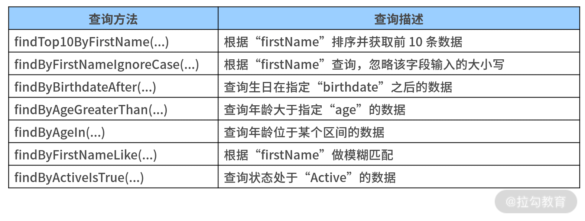
方法名衍生查询示例
在 Spring Data 中，方法名衍生查询的功能非常强大，上表中罗列的这些也只是全部功能中的一小部分而已。
讲到这里，你可能会问一个问题：如果我们在一个 Repository 中同时指定了 @Query 注解和方法名衍生查询，那么 Spring Data 会具体执行哪一个呢？要想回答这个问题，就需要我们对查询策略有一定的了解。
在 Spring Data 中，查询策略定义在 QueryLookupStrategy 中，如下代码所示：
public interface QueryLookupStrategy {
public static enum Key {
CREATE, USE_DECLARED_QUERY, CREATE_IF_NOT_FOUND;
public static Key create(String xml) {
if (!StringUtils.hasText(xml)) {
return null;
}
return valueOf(xml.toUpperCase(Locale.US).replace("-", "_"));
}
}
RepositoryQuery resolveQuery(Method method, RepositoryMetadata metadata, ProjectionFactory factory, NamedQueries namedQueries);
}
从以上代码中，我们看到 QueryLookupStrategy 分为三种，即 CREATE、USE_DECLARED_QUERY 和 CREATE_IF_NOT_FOUND。
这里的 CREATE 策略指的是直接根据方法名创建的查询策略，也就是使用前面介绍的方法名衍生查询。
而 USE_DECLARED_QUERY 指的是声明方式，主要使用 @Query 注解，如果没有 @Query 注解系统就会抛出异常。
而最后一种 CREATE_IF_NOT_FOUND 可以理解为是 @Query 注解和方法名衍生查询两者的兼容版。请注意，Spring Data 默认使用的是 CREATE_IF_NOT_FOUND 策略，也就是说系统会先查找 @Query 注解，如果查到没有，会再去找与方法名相匹配的查询。
Spring Data 中的组件
Spring Data 支持对多种数据存储媒介进行数据访问，表现为提供了一系列默认的 Repository，包括针对关系型数据库的 JPA/JDBC Repository，针对 MongoDB、Neo4j、Redis 等 NoSQL 对应的 Repository，支持 Hadoop 的大数据访问的 Repository，甚至包括 Spring Batch 和 Spring Integration 在内的系统集成的 Repository。
在 Spring Data 的官方网站https://spring.io/projects/spring-data 中，列出了其提供的所有组件，如下图所示：

Spring Data 所提供的组件列表（来自 Spring Data 官网）
根据官网介绍，Spring Data 中的组件可以分成四大类：核心模块（Main modules）、社区模块（Community modules）、关联模块（Related modules）和正在孵化的模块（Modules in Incubation）。例如，前面介绍的 Respository 和多样化查询功能就在核心模块 Spring Data Commons 组件中。
这里，我特别想强调下的是正在孵化的模块，它目前只包含一个组件，即 Spring Data R2DBC。 R2DBC 是Reactive Relational Database Connectivity 的简写，代表响应式关系型数据库连接，相当于是响应式数据访问领域的 JDBC 规范。
小结与预告
数据访问是一切应用系统的基础，Spring Boot 作为一款集成性的开发框架，专门提供了 Spring Data 组件实现对数据访问过程进行抽象。基于 Repository 架构模式，Spring Data 为开发人员提供了一系列用于完成 CRUD 操作的工具方法，尤其是对最常用的查询操作专门进行了提炼和设计，使得开发过程更简单、高效。
10 ORM 集成：如何使用 Spring Data JPA 访问关系型数据库？
在前面的课程中，我们详细介绍了如何使用 Spring 所提供的 JdbcTemplate 模板工具类实现数据访问的实现方法。相较 JDBC 所提供的原生 API，JdbcTemplate 做了一层封装，大大简化了数据的操作过程。而在 09 讲中，我们又进一步引入了 Spring Data 框架，可以说 Spring Data 框架是基于 JdbcTemplate 上另一层更高级的封装。
今天，我们将基于 Spring Data 中的 Spring Data JPA 组件介绍如何集成 ORM 框架实现关系型数据库访问。
引入 Spring Data JPA
如果你想在应用程序中使用 Spring Data JPA，首先需要在 pom 文件中引入 spring-boot-starter-data-jpa 依赖，如下代码所示：
<dependency>
<groupId>org.springframework.boot</groupId>
<artifactId>spring-boot-starter-data-jpa</artifactId>
</dependency>
在介绍这一组件的使用方法之前，我们有必要对 JPA 规范进行一定的了解。
JPA 全称是 JPA Persistence API，即 Java 持久化 API，它是一个 Java 应用程序接口规范，用于充当面向对象的领域模型和关系数据库系统之间的桥梁，属于一种 ORM（Object Relational Mapping，对象关系映射）技术。
JPA 规范中定义了一些既定的概念和约定，集中包含在 javax.persistence 包中，常见的如对实体（Entity）定义、实体标识定义、实体与实体之间的关联关系定义，以及 09 讲中介绍的 JPQL 定义等，关于这些定义及其使用方法，一会儿我们会详细展开说明。
与 JDBC 规范一样，JPA 规范也有一大批实现工具和框架，极具代表性的如老牌的 Hibernate 及今天我们将介绍的 Spring Data JPA。
为了演示基于 Spring Data JPA 的整个开发过程，我们将在 SpringCSS 案例中专门设计和实现一套独立的领域对象和 Repository，接下来我们一起来看下。
实体类注解
我们知道 order-service 中存在两个主要领域对象，即 Order 和 Goods。为了与前面课时介绍的领域对象有所区分，本节课我们重新创建两个领域对象，分别命名为 JpaOrder 和 JpaGoods，它们就是 JPA 规范中的实体类。
我们先来看下相对简单的 JpaGoods，这里我们把 JPA 规范的相关类的引用罗列在了一起，JpaGoods 定义如下代码所示：
import javax.persistence.Entity;
import javax.persistence.GeneratedValue;
import javax.persistence.GenerationType;
import javax.persistence.Id;
import javax.persistence.Table;
@Entity
@Table(name="goods")
public class JpaGoods {
@Id
@GeneratedValue(strategy = GenerationType.IDENTITY)
private Long id;
private String goodsCode;
private String goodsName;
private Float price;
//省略 getter/setter
}
JpaGoods 中使用了 JPA 规范中用于定义实体的几个注解：最重要的 @Entity 注解、用于指定表名的 @Table 注解、用于标识主键的 @Id 注解，以及用于标识自增数据的 @GeneratedValue 注解，这些注解都比较直白，在实体类上直接使用即可。
接下来，我们看下比较复杂的 JpaOrder，定义如下代码所示：
@Entity
@Table(name="`order`")
public class JpaOrder implements Serializable {
private static final long serialVersionUID = 1L;
@Id
@GeneratedValue(strategy = GenerationType.IDENTITY)
private Long id;
private String orderNumber;
private String deliveryAddress;
@ManyToMany(targetEntity=JpaGoods.class)
@JoinTable(name = "order_goods", joinColumns = @JoinColumn(name = "order_id", referencedColumnName = "id"), inverseJoinColumns = @JoinColumn(name = "goods_id", referencedColumnName = "id"))
private List<JpaGoods> goods = new ArrayList<>();
//省略 getter/setter
}
这里除了引入了常见的一些注解，还引入了 @ManyToMany 注解，它表示 order 表与 goods 表中数据的关联关系。
在JPA 规范中，共提供了 one-to-one、one-to-many、many-to-one、many-to-many 这 4 种映射关系，它们分别用来处理一对一、一对多、多对一，以及多对多的关联场景。
针对 order-service 这个业务场景，我们设计了一张 order_goods 中间表存储 order 与 goods 表中的主键关系，且使用了 @ManyToMany 注解定义 many-to-many 这种关联关系，也使用了 @JoinTable 注解指定 order_goods 中间表，并通过 joinColumns 和 inverseJoinColumns 注解分别指定中间表中的字段名称以及引用两张主表中的外键名称。
定义 Repository
定义完实体对象后，我们再来提供 Repository 接口，这一步的操作非常简单，OrderJpaRepository 的定义如下代码所示：
@Repository("orderJpaRepository")
public interface OrderJpaRepository extends JpaRepository<JpaOrder, Long>
{
}
从上面代码中我们发现，OrderJpaRepository 是一个继承了 JpaRepository 接口的空接口，基于 09 讲的介绍，我们知道 OrderJpaRepository 实际上已经具备了访问数据库的基本 CRUD 功能。
使用 Spring Data JPA 访问数据库
有了上面定义的 JpaOrder 和 JpaGoods 实体类，以及 OrderJpaRepository 接口，我们已经可以实现很多操作了。
比如我们想通过 Id 获取 Order 对象，首先可以通过构建一个 JpaOrderService 直接注入 OrderJpaRepository 接口，如下代码所示：
@Service
public class JpaOrderService {
@Autowired
private OrderJpaRepository orderJpaRepository;
public JpaOrder getOrderById(Long orderId) {
return orderJpaRepository.getOne(orderId);
}
}
然后，我们再通过构建一个 Controller 类嵌入上述方法，并通过 HTTP 请求查询 Id 为 1 的 JpaOrder 对象，获得的结果如下代码所示：
{
"id": 1,
"orderNumber": "Order10001",
"deliveryAddress": "test_address1",
"goods": [
{
"id": 1,
"goodsCode": "GoodsCode1",
"goodsName": "GoodsName1",
"price": 100.0
},
{
"id": 2,
"goodsCode": "GoodsCode2",
"goodsName": "GoodsName2",
"price": 200.0
}
]
}
请注意，这里我们不仅获取了 order 表中的订单基础数据，还同时获取了 goods 表中的商品数据，这种效果是如何实现的呢？是因为在 JpaOrder 对象中，我们添加了 @ManyToMany 注解，该注解会自动从 order_goods 表中获取商品主键信息，并从 goods 表中获取商品详细信息。
了解了使用 Spring Data JPA 实现关系型数据库访问的过程，并对比《数据访问：如何使用 JdbcTemplate 访问关系型数据库？》中通过 JdbcTemplate 获取这部分数据的实现过程，我们发现使用 Spring Data JPA 更简单。
在多样化查询实现过程中，我们不仅可以使用 JpaRepository 中默认集成的各种 CRUD 方法，还可以使用 09 讲中介绍的 @Query 注解、方法名衍生查询等。今天，我们还将同时引入 QueryByExample 和 Specification 这两种机制来丰富多样化查询方式。
使用 @Query 注解
使用 @Query 注解实现查询的示例如下代码所示：
@Repository("orderJpaRepository")
public interface OrderJpaRepository extends JpaRepository<JpaOrder, Long>
{
@Query("select o from JpaOrder o where o.orderNumber = ?1")
JpaOrder getOrderByOrderNumberWithQuery(String orderNumber);
}
这里，我们使用了 JPQL 根据 OrderNumber 查询订单信息。JPQL 的语法与 SQL 语句非常类似，09 讲中我们对 JPQL 进行了讨论，这里我们不再赘述，你可以前往回顾。
说到 @Query 注解，JPA 中还提供了一个 @NamedQuery 注解对 @Query 注解中的语句进行命名。@NamedQuery 注解的使用方式如下代码所示：
@Entity
@Table(name = "`order`")
@NamedQueries({ @NamedQuery(name = "getOrderByOrderNumberWithQuery", query = "select o from JpaOrder o where o.orderNumber = ?1") })
public class JpaOrder implements Serializable {
在上述示例中，我们在实体类 JpaOrder 上添加了一个 @NamedQueries 注解，该注解可以将一批 @NamedQuery 注解整合在一起使用。同时，我们还使用了 @NamedQuery 注解定义了一个“getOrderByOrderNumberWithQuery”查询，且指定了对应的 JPQL 语句。
如果你想使用这个命名查询，在 OrderJpaRepository 中定义与该命名一致的方法即可。
使用方法名衍生查询
使用方法名衍生查询是最方便的一种自定义查询方式，在这过程中开发人员唯一需要做的就是在 JpaRepository 接口中定义一个符合查询语义的方法。
比如我们希望通过 OrderNumber 查询订单信息，那么可以提供如下代码所示的接口定义：
@Repository("orderJpaRepository")
public interface OrderJpaRepository extends JpaRepository<JpaOrder, Long>
{
JpaOrder getOrderByOrderNumber(String orderNumber);
}
通过 getOrderByOrderNumber 方法后，我们就可以自动根据 OrderNumber 获取订单详细信息了。
使用 QueryByExample 机制
接下来我们将介绍另一种强大的查询机制，即 QueryByExample（QBE）机制。
针对 JpaOrder 对象，假如我们希望根据 OrderNumber 及 DeliveryAddress 中的一个或多个条件进行查询，按照方法名衍生查询的方式构建查询方法后，得到如下代码所示的方法定义：
List<JpaOrder> findByOrderNumberAndDeliveryAddress (String
orderNumber, String deliveryAddress);
如果查询条件中使用的字段非常多，上面这个方法名可能非常长，且还需要设置一批参数，这种查询方法定义显然存在缺陷。
因为不管查询条件有多少个，我们都需要把所有参数进行填充，哪怕部分参数并没有被用到。而且，如果将来我们需要再添加一个新的查询条件，该方法必须做调整，从扩展性上讲也存在设计缺陷。为了解决这些问题，我们便可以引入 QueryByExample 机制。
QueryByExample 可以翻译为按示例查询，是一种用户友好的查询技术。它允许我们动态创建查询，且不需要编写包含字段名称的查询方法，也就是说按示例查询不需要使用特定的数据库查询语言来编写查询语句。
从组成结构上讲，QueryByExample 包括 Probe、ExampleMatcher 和 Example 这三个基本组件。其中， Probe 包含对应字段的实例对象，ExampleMatcher 携带有关如何匹配特定字段的详细信息，相当于匹配条件，Example 则由 Probe 和 ExampleMatcher 组成，用于构建具体的查询操作。
现在，我们基于 QueryByExample 机制重构根据 OrderNumber 查询订单的实现过程。
首先，我们需要在 OrderJpaRepository 接口的定义中继承 QueryByExampleExecutor 接口，如下代码所示：
@Repository("orderJpaRepository")
public interface OrderJpaRepository extends JpaRepository<JpaOrder, Long>, QueryByExampleExecutor<JpaOrder> {
然后，我们在 JpaOrderService 中实现如下代码所示的 getOrderByOrderNumberByExample 方法：
public JpaOrder getOrderByOrderNumberByExample(String orderNumber) {
JpaOrder order = new JpaOrder();
order.setOrderNumber(orderNumber);
ExampleMatcher matcher = ExampleMatcher.matching().withIgnoreCase()
.withMatcher("orderNumber", GenericPropertyMatchers.exact()).withIncludeNullValues();
Example<JpaOrder> example = Example.of(order, matcher);
return orderJpaRepository.findOne(example).orElse(new JpaOrder());
}
上述代码中，我们首先构建了一个 ExampleMatcher 对象用于初始化匹配规则，然后通过传入一个 JpaOrder 对象实例和 ExampleMatcher 实例构建了一个 Example 对象，最后通过 QueryByExampleExecutor 接口中的 findOne() 方法实现了 QueryByExample 机制。
使用 Specification 机制
本节课中，最后我们想介绍的查询机制是 Specification 机制。
先考虑这样一种场景，比如我们需要查询某个实体，但是给定的查询条件不固定，此时该怎么办？这时我们通过动态构建相应的查询语句即可，而在 Spring Data JPA 中可以通过 JpaSpecificationExecutor 接口实现这类查询。相比使用 JPQL 而言，使用 Specification 机制的优势是类型安全。
继承了 JpaSpecificationExecutor 的 OrderJpaRepository 定义如下代码所示：
@Repository("orderJpaRepository")
public interface OrderJpaRepository extends JpaRepository<JpaOrder, Long>, JpaSpecificationExecutor<JpaOrder>{
对于 JpaSpecificationExecutor 接口而言，它背后使用的就是 Specification 接口，且 Specification 接口核心方法就一个，我们可以简单地理解该接口的作用就是构建查询条件，如下代码所示：
Predicate toPredicate(Root<T> root, CriteriaQuery<?> query, CriteriaBuilder criteriaBuilder);
其中 Root 对象代表所查询的根对象，我们可以通过 Root 获取实体的属性，CriteriaQuery 代表一个顶层查询对象，用来实现自定义查询，而 CriteriaBuilder 用来构建查询条件。
基于 Specification 机制，我们同样对根据 OrderNumber 查询订单的实现过程进行重构，重构后的 getOrderByOrderNumberBySpecification 方法如下代码所示：
public JpaOrder getOrderByOrderNumberBySpecification(String orderNumber) {
JpaOrder order = new JpaOrder();
order.setOrderNumber(orderNumber);
@SuppressWarnings("serial")
Specification<JpaOrder> spec = new Specification<JpaOrder>() {
@Override
public Predicate toPredicate(Root<JpaOrder> root, CriteriaQuery<?> query, CriteriaBuilder cb) {
Path<Object> orderNumberPath = root.get("orderNumber");
Predicate predicate = cb.equal(orderNumberPath, orderNumber);
return predicate;
}
};
return orderJpaRepository.findOne(spec).orElse(new JpaOrder());
}
从上面示例中可以看到，在 toPredicate 方法中，首先我们从 root 对象中获取了“orderNumber”属性，然后通过 cb.equal 方法将该属性与传入的 orderNumber 参数进行了比对，从而实现了查询条件的构建过程。
小结与预告
10 讲中，我们主要对通过 Spring Data JPA 进行数据操作的方法和技巧做了一一介绍。
在 Spring Boot 中，我极力推荐使用 Spring Data JPA 实现对关系型数据库访问，因为它不仅具有 ORM 框架的通用功能，同时还添加了 QueryByExample 和 Specification 机制等扩展性功能，应用上简单而高效。
11 服务发布：如何构建一个 RESTful 风格的 Web 服务？
通过前面课程的学习，我们已经掌握了构建一个 Spring Boot 应用程序的数据访问层组件实现方法。接下来的几讲，我们将讨论另一层组件，即 Web 服务层的构建方式。
服务与服务之间的交互是系统设计和发展的必然需求，其涉及 Web 服务的发布及消费，今天我们先讨论如何在 Spring Boot 应用程序中发布 Web 服务。
SpringCSS 系统中的服务交互
在具体的技术体系介绍之前，我们先来梳理 SpringCSS 案例中服务交互之间的应用场景。
对于客服系统而言，其核心业务流程是生成客服工单，而工单的生成通常需要使用用户账户信息和所关联的订单信息。
在 SpringCSS 案例中，前面几讲我们已经构建了一个用于管理订单的 order-service，接下来我们将分别构建管理用户账户的 account-service 及核心的客服服务 customer-service。
关于三个服务之间的交互方式，我们先通过一张图了解下，如下图所示：
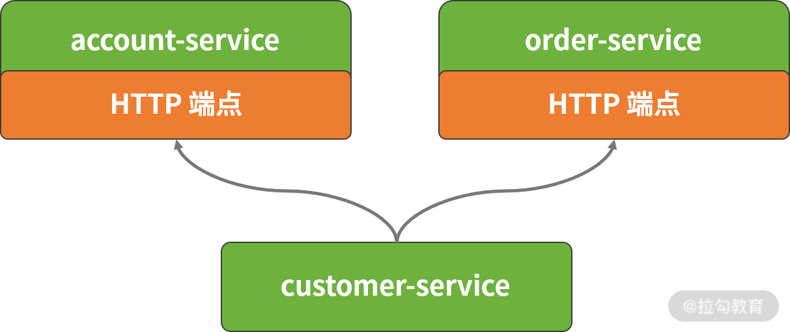
SpringCSS 案例系统中三个服务的交互方式图
实际上，通过上图我们已经可以梳理工单生成 generateCustomerTicket 核心方法的执行流程，这里我们先给出代码的框架，如下代码所示：
public CustomerTicket generateCustomerTicket(Long accountId, String orderNumber) {
// 创建客服工单对象
CustomerTicket customerTicket = new CustomerTicket();
// 从远程 account-service 中获取 Account 对象
Account account = getRemoteAccountById(accountId);
// 从远程 order-service 中获取 Order 读写
Order order = getRemoteOrderByOrderNumber(orderNumber);
// 设置 CustomerTicket 对象并保存
customerTicket.setAccountId(accountId);
customerTicket.setOrderNumber(order.getOrderNumber());
customerTicketRepository.save(customerTicket);
return customerTicket;
}
因 getRemoteAccountById 与 getRemoteOrderByOrderNumber 方法都涉及远程 Web 服务的调用，因此首先我们需要创建 Web 服务。
而 Spring Boot 为我们创建 Web 服务提供了非常强大的组件化支持，简单而方便，我们一起来看一下。
创建 RESTful 服务
在当下的分布式系统及微服务架构中，RESTful 风格是一种主流的 Web 服务表现方式。
在接下来的内容中，我们将演示如何使用 Spring Boot 创建 RESTful 服务。但在此之前，我们先来理解什么是 RESTful 服务。
理解 RESTful 架构风格
你可能听说过 REST 这个名称，但并不清楚它的含义。
REST（Representational State Transfer，表述性状态转移）本质上只是一种架构风格而不是一种规范，这种架构风格把位于服务器端的访问入口看作一个资源，每个资源都使用 URI（Universal Resource Identifier，统一资源标识符） 得到一个唯一的地址，且在传输协议上使用标准的 HTTP 方法，比如最常见的 GET、PUT、POST 和 DELETE。
下表展示了 RESTful 风格的一些具体示例：

RESTful 风格示例
另一方面，客户端与服务器端的数据交互涉及序列化问题。关于序列化完成业务对象在网络环境上的传输的实现方式有很多，常见的有文本和二进制两大类。
目前 JSON 是一种被广泛采用的序列化方式，本课程中所有的代码实例我们都将 JSON 作为默认的序列化方式。
使用基础注解
在原有 Spring Boot 应用程序的基础上，我们可以通过构建一系列的 Controller 类暴露 RESTful 风格的 HTTP 端点。这里的 Controller 与 Spring MVC 中的 Controller 概念上一致，最简单的 Controller 类如下代码所示：
@RestController
public class HelloController {
@GetMapping("/")
public String index() {
return "Hello World!";
}
}
从以上代码中可以看到，这里包含了 @RestController 和 @GetMapping 这两个注解。
其中，@RestController 注解继承自 Spring MVC 中的 @Controller 注解，顾名思义就是一个基于 RESTful 风格的 HTTP 端点，并且会自动使用 JSON 实现 HTTP 请求和响应的序列化/反序列化方式。
通过这个特性，在构建 RESTful 服务时，我们可以使用 @RestController 注解代替 @Controller 注解以简化开发。
另外一个 @GetMapping 注解也与 Spring MVC 中的 @RequestMapping 注解类似。我们先来看看 @RequestMapping 注解的定义，该注解所提供的属性都比较容易理解，如下代码所示：
@Target({ElementType.METHOD, ElementType.TYPE})
@Retention(RetentionPolicy.RUNTIME)
@Documented
@Mapping
public @interface RequestMapping {
String name() default "";
@AliasFor("path")
String[] value() default {};
@AliasFor("value")
String[] path() default {};
RequestMethod[] method() default {};
String[] params() default {};
String[] headers() default {};
String[] consumes() default {};
String[] produces() default {};
}
而 @GetMapping 的注解的定义与 @RequestMapping 非常类似，只是默认使用了 RequestMethod.GET 指定 HTTP 方法，如下代码所示：
@Target(ElementType.METHOD)
@Retention(RetentionPolicy.RUNTIME)
@Documented
@RequestMapping(method = RequestMethod.GET)
public @interface GetMapping {
Spring Boot 2 中引入的一批新注解中，除了 @GetMapping ，还有 @PutMapping、@PostMapping、@DeleteMapping 等注解，这些注解极大方便了开发人员显式指定 HTTP 的请求方法。当然，你也可以继续使用原先的 @RequestMapping 实现同样的效果。
我们再看一个更加具体的示例，以下代码展示了 account-service 中的 AccountController。
@RestController
@RequestMapping(value = "accounts")
public class AccountController {
@GetMapping(value = "/{accountId}")
public Account getAccountById(@PathVariable("accountId") Long accountId) {
Account account = new Account();
account.setId(1L);
account.setAccountCode("DemoCode");
account.setAccountName("DemoName");
return account;
}
}
在该 Controller 中，通过静态的业务代码我们完成了根据账号编号（accountId）获取用户账户信息的业务流程。
这里用到了两层 Mapping，第一层的 @RequestMapping 注解在服务层级定义了服务的根路径“/accounts”，第二层的 @GetMapping 注解则在操作级别定义了 HTTP 请求方法的具体路径及参数信息。
到这里，一个典型的 RESTful 服务已经开发完成了，现在我们可以通过 java –jar 命令直接运行 Spring Boot 应用程序了。
在启动日志中，我们发现了以下输出内容（为了显示效果，部分内容做了调整），可以看到自定义的这个 AccountController 已经成功启动并准备接收响应。
RequestMappingHandlerMapping : Mapped "{[/accounts/{accountId}], methods=[GET]}" onto public com.springcss.account.domain.Account com.springcss.account.controller.AccountController.getAccountById (java.lang.Long)
在本课程中，我们将引入 Postman 来演示如何通过 HTTP 协议暴露的端点进行远程服务访问。
Postman 为我们完成 HTTP 请求和响应过程提供了可视化界面，你可以尝试编写一个 AccountController，并通过 Postman 访问“http://localhost:8082/accounts/1”端点以得到响应结果。
在前面的 AccountController 中，我们还看到了一个新的注解 @PathVariable，该注解作用于输入的参数，下面我们就来看看如何通过这些注解控制请求的输入。
控制请求输入和输出
Spring Boot 提供了一系列简单有用的注解来简化对请求输入的控制过程，常用的包括 @PathVariable、@RequestParam 和 @RequestBody。
其中 @PathVariable 注解用于获取路径参数，即从类似 url/{id} 这种形式的路径中获取 {id} 参数的值。该注解的定义如下代码所示：
@Target(ElementType.PARAMETER)
@Retention(RetentionPolicy.RUNTIME)
@Documented
public @interface PathVariable {
@AliasFor("name")
String value() default "";
@AliasFor("value")
String name() default "";
boolean required() default true;
}
通常，使用 @PathVariable 注解时，我们只需要指定一个参数的名称即可。我们可以再看一个示例，如下代码所示：
@GetMapping(value = "/{accountName}")
public Account getAccountByAccountName(@PathVariable("accountName") String accountName) {
Account account = accountService.getAccountByAccountName(accountName);
return account;
}
@RequestParam 注解的作用与 @PathVariable 注解类似，也是用于获取请求中的参数，但是它面向类似 url?id=XXX 这种路径形式。
该注解的定义如下代码所示，相较 @PathVariable 注解，它只是多了一个设置默认值的 defaultValue 属性。
@Target(ElementType.PARAMETER)
@Retention(RetentionPolicy.RUNTIME)
@Documented
public @interface RequestParam {
@AliasFor("name")
String value() default "";
@AliasFor("value")
String name() default "";
boolean required() default true;
String defaultValue() default ValueConstants.DEFAULT_NONE;
}
在 HTTP 协议中，content-type 属性用来指定所传输的内容类型，我们可以通过 @RequestMapping 注解中的 produces 属性来设置这个属性。
在设置这个属性时，我们通常会将其设置为“application/json”，如下代码所示：
@RestController
@RequestMapping(value = "accounts", produces="application/json")
public class AccountController {
@RequestBody 注解用来处理 content-type 为 application/json 类型时的编码内容，通过 @RequestBody 注解可以将请求体中的 JSON 字符串绑定到相应的 JavaBean 上。
如下代码所示就是一个使用 @RequestBody 注解来控制输入的场景。
@PutMapping(value = "/")
public void updateAccount(@RequestBody Account account) {
如果使用 @RequestBody 注解，我们可以在 Postman 中输入一个 JSON 字符串来构建输入对象，如下代码所示：
使用 Postman 输入 JSON 字符串发起 HTTP 请求示例图
通过以上内容的讲解，我们发现使用注解的操作很简单，接下来我们有必要探讨下控制请求输入的规则。
关于控制请求输入的规则，关键在于按照 RESTful 风格的设计原则设计 HTTP 端点，对于这点业界也存在一些约定。
- 以 Account 这个领域实体为例，如果我们把它视为一种资源，那么 HTTP 端点的根节点命名上通常采用复数形式，即“/accounts”，正如前面的示例代码所示。
- 在设计 RESTful API 时，我们需要基于 HTTP 语义设计对外暴露的端点的详细路径。针对常见的 CRUD 操作，我们展示了 RESTful API 与非 RESTful API 的一些区别。
RESTful 风格对比示例
基于以上介绍的控制请求输入的实现方法，我们可以给出 account-service 中 AccountController 类的完整实现过程，如下代码所示：
@RestController
@RequestMapping(value = "accounts", produces="application/json")
public class AccountController {
@Autowired
private AccountService accountService;
@GetMapping(value = "/{accountId}")
public Account getAccountById(@PathVariable("accountId") Long accountId) {
Account account = accountService.getAccountById(accountId);
return account;
}
@GetMapping(value = "accountname/{accountName}")
public Account getAccountByAccountName(@PathVariable("accountName") String accountName) {
Account account = accountService.getAccountByAccountName(accountName);
return account;
}
@PostMapping(value = "/")
public void addAccount(@RequestBody Account account) {
accountService.addAccount(account);
}
@PutMapping(value = "/")
public void updateAccount(@RequestBody Account account) {
accountService.updateAccount(account);
}
@DeleteMapping(value = "/")
public void deleteAccount(@RequestBody Account account) {
accountService.deleteAccount(account);
}
}
介绍完对请求输入的控制，我们再来讨论如何控制请求的输出。
相较输入控制，输出控制就要简单很多，因为 Spring Boot 所提供的 @RestController 注解已经屏蔽了底层实现的复杂性，我们只需要返回一个普通的业务对象即可。@RestController 注解相当于是 Spring MVC 中 @Controller 和 @ResponseBody 这两个注解的组合，它们会自动返回 JSON 数据。
这里我们也给出了 order-service 中的 OrderController 实现过程，如下代码所示：
@RestController
@RequestMapping(value="orders/jpa")
public class JpaOrderController {
@Autowired
JpaOrderService jpaOrderService;
@GetMapping(value = "/{orderId}")
public JpaOrder getOrderById(@PathVariable Long orderId) {
JpaOrder order = jpaOrderService.getOrderById(orderId);
return order;
}
@GetMapping(value = "orderNumber/{orderNumber}")
public JpaOrder getOrderByOrderNumber(@PathVariable String orderNumber) {
JpaOrder order = jpaOrderService.getOrderByOrderNumber(orderNumber);
// JpaOrder order = jpaOrderService.getOrderByOrderNumberByExample(orderNumber);
// JpaOrder order = jpaOrderService.getOrderByOrderNumberBySpecification(orderNumber);
return order;
}
@PostMapping(value = "")
public JpaOrder addOrder(@RequestBody JpaOrder order) {
JpaOrder result = jpaOrderService.addOrder(order);
return result;
}
}
从上面示例可以看到，我们使用了 09 讲中介绍的 Spring Data JPA 完成实体对象及数据访问功能。
小结与预告
构建 Web 服务是开发 Web 应用程序的基本需求，而设计并实现 RESTful 风格的 Web 服务是开发人员必须具备的开发技能。
基于 Spring Boot 框架，开发人员只需要使用几个注解就能实现复杂的 HTTP 端点，并暴露给其他服务进行使用，工作都变得非常简单。
12 服务调用：如何使用 RestTemplate 消费 RESTful 服务？
11 讲我们介绍了如何使用 Spring Boot 构建 RESTful 风格 Web 服务的实现方法，而 SpringCSS 案例系统的演进过程也从单个服务上升到多个服务之间的交互。
完成 Web 服务的构建后，我们需要做的事情就是如何对服务进行消费，这也是 12讲我们介绍的要点，接下来我们将基于 RestTemplate 模板工具类来完成这一目标。
使用 RestTemplate 访问 HTTP 端点
RestTemplate 是 Spring 提供的用于访问 RESTful 服务的客户端的模板工具类，它位于 org.springframework.web.client 包下。
在设计上，RestTemplate 完全可以满足 11 讲中介绍的 RESTful 架构风格的设计原则。相较传统 Apache 中的 HttpClient 客户端工具类，RestTemplate 在编码的简便性以及异常的处理等方面都做了很多改进。
接下来，我们先来看一下如何创建一个 RestTemplate 对象，并通过该对象所提供的大量工具方法实现对远程 HTTP 端点的高效访问。
创建 RestTemplate
如果我们想创建一个 RestTemplate 对象，最简单且最常见的方法是直接 new 一个该类的实例，如下代码所示：
@Bean
public RestTemplate restTemplate(){
return new RestTemplate();
}
这里我们创建了一个 RestTemplate 实例，并通过 @Bean 注解将其注入 Spring 容器中。
通常，我们会把上述代码放在 Spring Boot 的 Bootstrap 类中，使得我们在代码工程的其他地方也可以引用这个实例。
下面我们查看下 RestTemplate 的无参构造函数，看看创建它的实例时，RestTemplate 都做了哪些事情，如下代码所示：
public RestTemplate() {
this.messageConverters.add(new ByteArrayHttpMessageConverter());
this.messageConverters.add(new StringHttpMessageConverter());
this.messageConverters.add(new ResourceHttpMessageConverter(false));
this.messageConverters.add(new SourceHttpMessageConverter<>());
this.messageConverters.add(new AllEncompassingFormHttpMessageConverter());
//省略其他添加 HttpMessageConverter 的代码
}
可以看到 RestTemplate 的无参构造函数只做了一件事情，添加了一批用于实现消息转换的 HttpMessageConverter 对象。
我们知道通过 RestTemplate 发送的请求和获取的响应都是以 JSON 作为序列化方式，而我们调用后续将要介绍的 getForObject、exchange 等方法时所传入的参数及获取的结果都是普通的 Java 对象，我们就是通过使用 RestTemplate 中的 HttpMessageConverter 自动帮我们做了这一层转换操作。
这里请注意，其实 RestTemplate 还有另外一个更强大的有参构造函数，如下代码所示：
public RestTemplate(ClientHttpRequestFactory requestFactory) {
this();
setRequestFactory(requestFactory);
}
从以上代码中，我们可以看到这个构造函数一方面调用了前面的无参构造函数，另一方面可以设置一个 ClientHttpRequestFactory 接口。而基于这个 ClientHttpRequestFactory 接口的各种实现类，我们可以对 RestTemplate 中的行为进行精细化控制。
这方面典型的应用场景是设置 HTTP 请求的超时时间等属性，如下代码所示：
@Bean
public RestTemplate customRestTemplate(){
HttpComponentsClientHttpRequestFactory httpRequestFactory = new HttpComponentsClientHttpRequestFactory();
httpRequestFactory.setConnectionRequestTimeout(3000);
httpRequestFactory.setConnectTimeout(3000);
httpRequestFactory.setReadTimeout(3000);
return new RestTemplate(httpRequestFactory);
}
这里我们创建了一个 HttpComponentsClientHttpRequestFactory 工厂类，它是 ClientHttpRequestFactory 接口的一个实现类。通过设置连接请求超时时间 ConnectionRequestTimeout、连接超时时间 ConnectTimeout 等属性，我们对 RestTemplate 的默认行为进行了定制化处理。
使用 RestTemplate 访问 Web 服务
在远程服务访问上，RestTemplate 内置了一批常用的工具方法，我们可以根据 HTTP 的语义以及 RESTful 的设计原则对这些工具方法进行分类，如下表所示。
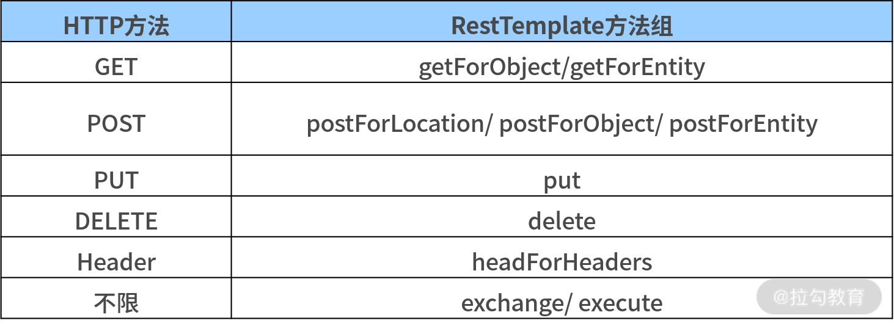
RestTemplate 中的方法分类表
接下来，我们将基于该表对 RestTemplate 中的工具方法进行详细介绍并给出相关示例。不过在此之前，我们想先来讨论一下请求的 URL。
在一个 Web 请求中，我们可以通过请求路径携带参数。在使用 RestTemplate 时，我们也可以在它的 URL 中嵌入路径变量，示例代码如下所示：
("http://localhost:8082/account/{id}", 1)
这里我们对 account-service 提供的一个端点进行了参数设置：我们定义了一个拥有路径变量名为 id 的 URL，实际访问时，我们将该变量值设置为 1。其实，在URL 中也可以包含多个路径变量，因为 Java 支持不定长参数语法，多个路径变量的赋值可以按照参数依次设置。
如下所示的代码中，我们在 URL 中使用了 pageSize 和 pageIndex 这两个路径变量进行分页操作，实际访问时它们将被替换为 20 和 2。
("http://localhost:8082/account/{pageSize}/{pageIndex}", 20, 2)
而路径变量也可以通过 Map 进行赋值。如下所示的代码同样定义了拥有路径变量 pageSize 和 pageIndex 的 URL，但实际访问时，我们会从 uriVariables 这个 Map 对象中获取值进行替换，从而得到最终的请求路径为http://localhost:8082/account/20/2。
Map<String, Object> uriVariables = new HashMap<>();
uriVariables.put("pageSize", 20);
uriVariables.put("pageIndex", 2);
webClient.getForObject() ("http://localhost:8082/account/{pageSize}/{pageIndex}", Account.class, uriVariables);
请求 URL 一旦准备好了，我们就可以使用 RestTemplates 所提供的一系列工具方法完成远程服务的访问。
我们先来介绍 get 方法组，它包括 getForObject 和 getForEntity 这两组方法，每组各有三个方法。
例如，getForObject 方法组中的三个方法如下代码所示：
public <T> T getForObject(URI url, Class<T> responseType)
public <T> T getForObject(String url, Class<T> responseType, Object... uriVariables){}
public <T> T getForObject(String url, Class<T> responseType, Map<String, ?> uriVariables)
从以上方法定义上，我们不难看出它们之间的区别只是传入参数的处理方式不同。
这里，我们注意到第一个 getForObject 方法只有两个参数（后面的两个 getForObject 方法分别支持不定参数以及一个 Map 对象），如果我们想在访问路径上添加一个参数，则需要我们构建一个独立的 URI 对象，示例如下代码所示：
String url = "http://localhost:8080/hello?name=" + URLEncoder.encode(name, "UTF-8");
URI uri = URI.create(url);
我们先来回顾下 12 讲中我们介绍的 AccountController，如下代码所示：
@RestController
@RequestMapping(value = "accounts")
public class AccountController {
@GetMapping(value = "/{accountId}")
public Account getAccountById(@PathVariable("accountId") Long accountId) {
…
}
}
对于上述端点，我们可以通过 getForObject 方法构建一个 HTTP 请求来获取目标 Account 对象，实现代码如下所示：
Account result = restTemplate.getForObject("http://localhost:8082/accounts/{accountId}", Account.class, accountId);
当然，我们也可以使用 getForEntity 方法实现同样的效果，但在写法上会有所区别，如下代码所示：
ResponseEntity<Account> result = restTemplate.getForEntity("http://localhost:8082/accounts/{accountId}", Account.class, accountId);
Account account = result.getBody();
在以上代码中，我们可以看到 getForEntity 方法的返回值是一个 ResponseEntity 对象，在这个对象中还包含了 HTTP 消息头等信息，而 getForObject 方法返回的只是业务对象本身。这是这两个方法组的主要区别，你可以根据个人需要自行选择。
与 GET 请求相比，RestTemplate 中的 POST 请求除提供了 postForObject 和 postForEntity 方法组以外，还额外提供了一组 postForLocation 方法。
假设我们有如下所示的 OrderController ，它暴露了一个用于添加 Order 的端点。
@RestController
@RequestMapping(value="orders")
public class OrderController {
@PostMapping(value = "")
public Order addOrder(@RequestBody Order order) {
Order result = orderService.addOrder(order);
return result;
}
}
那么，通过 postForEntity 发送 POST 请求的示例如下代码所示：
Order order = new Order();
order.setOrderNumber("Order0001");
order.setDeliveryAddress("DemoAddress");
ResponseEntity<Order> responseEntity = restTemplate.postForEntity("http://localhost:8082/orders", order, Order.class);
return responseEntity.getBody();
从以上代码中可以看到，这里我们构建了一个 Order 实体，通过 postForEntity 传递给了 OrderController 所暴露的端点，并获取了该端点的返回值。（特殊说明：postForObject 的操作方式也与此类似。）
掌握了 get 和 post 方法组后，理解 put 方法组和 delete 方法组就会非常容易了。其中 put 方法组与 post 方法组相比只是操作语义上的差别，而 delete 方法组的使用过程也和 get 方法组类似。这里我们就不再一一展开，你可以自己尝试做一些练习。
最后，我们还有必要介绍下 exchange 方法组。
对于 RestTemplate 而言，exchange 是一个通用且统一的方法，它既能发送 GET 和 POST 请求，也能用于发送其他各种类型的请求。
我们来看下 exchange 方法组中的其中一个方法签名，如下代码所示：
public <T> ResponseEntity<T> exchange(String url, HttpMethod method, @Nullable HttpEntity<?> requestEntity, Class<T> responseType, Object... uriVariables) throws RestClientException
请注意，这里的 requestEntity 变量是一个 HttpEntity 对象，它封装了请求头和请求体，而 responseType 用于指定返回数据类型。 假如前面的 OrderController 中存在一个根据订单编号 OrderNumber 获取 Order 信息的端点，那么我们使用 exchange 方法发起请求的代码就变成这样了，如下代码所示。
ResponseEntity<Order> result = restTemplate.exchange("http://localhost:8082/orders/{orderNumber}", HttpMethod.GET, null, Order.class, orderNumber);
而比较复杂的一种使用方式是分别设置 HTTP 请求头及访问参数，并发起远程调用，示例代码如下所示：
//设置 HTTP Header
HttpHeaders headers = new HttpHeaders();
headers.setContentType(MediaType.APPLICATION_JSON_UTF8);
//设置访问参数
HashMap<String, Object> params = new HashMap<>();
params.put("orderNumber", orderNumber);
//设置请求 Entity
HttpEntity entity = new HttpEntity<>(params, headers);
ResponseEntity<Order> result = restTemplate.exchange(url, HttpMethod.GET, entity, Order.class);
RestTemplate 其他使用技巧
除了实现常规的 HTTP 请求，RestTemplate 还有一些高级用法可供我们进行使用，如指定消息转换器、设置拦截器和处理异常等。
指定消息转换器
在 RestTemplate 中，实际上还存在第三个构造函数，如下代码所示：
public RestTemplate(List<HttpMessageConverter<?>> messageConverters) {
Assert.notEmpty(messageConverters, "At least one HttpMessageConverter required");
this.messageConverters.addAll(messageConverters);
}
从以上代码中不难看出，我们可以通过传入一组 HttpMessageConverter 来初始化 RestTemplate，这也为消息转换器的定制提供了途径。
假如，我们希望把支持 Gson 的 GsonHttpMessageConverter 加载到 RestTemplate 中，就可以使用如下所示的代码。
@Bean
public RestTemplate restTemplate() {
List<HttpMessageConverter<?>> messageConverters = new ArrayList<HttpMessageConverter<?>>();
messageConverters.add(new GsonHttpMessageConverter());
RestTemplate restTemplate = new RestTemplate(messageConverters);
return restTemplate;
}
原则上，我们可以根据需要实现各种自定义的 HttpMessageConverter ，并通过以上方法完成对 RestTemplate 的初始化。
设置拦截器
如果我们想对请求做一些通用拦截设置，那么我们可以使用拦截器。不过，使用拦截器之前，首先我们需要实现 ClientHttpRequestInterceptor 接口。
这方面最典型的应用场景是在 Spring Cloud 中通过 @LoadBalanced 注解为 RestTemplate 添加负载均衡机制。我们可以在 LoadBalanceAutoConfiguration 自动配置类中找到如下代码。
@Bean
@ConditionalOnMissingBean
public RestTemplateCustomizer restTemplateCustomizer(
final LoadBalancerInterceptor loadBalancerInterceptor) {
return restTemplate -> {
List<ClientHttpRequestInterceptor> list = new ArrayList<>(
restTemplate.getInterceptors());
list.add(loadBalancerInterceptor);
restTemplate.setInterceptors(list);
};
}
在上面代码中，我们可以看到这里出现了一个 LoadBalancerInterceptor 类，该类实现了 ClientHttpRequestInterceptor 接口，然后我们通过调用 setInterceptors 方法将这个自定义的 LoadBalancerInterceptor 注入 RestTemplate 的拦截器列表中。
处理异常
请求状态码不是返回 200 时，RestTemplate 在默认情况下会抛出异常，并中断接下来的操作，如果我们不想采用这个处理过程，那么就需要覆盖默认的 ResponseErrorHandler。示例代码结构如下所示：
RestTemplate restTemplate = new RestTemplate();
ResponseErrorHandler responseErrorHandler = new ResponseErrorHandler() {
@Override
public boolean hasError(ClientHttpResponse clientHttpResponse) throws IOException {
return true;
}
@Override
public void handleError(ClientHttpResponse clientHttpResponse) throws IOException {
//添加定制化的异常处理代码
}
};
restTemplate.setErrorHandler(responseErrorHandler);
在上述的 handleError 方法中，我们可以实现任何自己想控制的异常处理代码。
实现 SpringCSS 案例中的服务交互
介绍完 RestTemplate 模板工具类的使用方式后，我们再回到 SpringCSS 案例。
11 讲中，我们已经给出了 customer-service 的 CustomerService 类中用于完成与 account-service 和 order-service 进行集成的 generateCustomerTicket 方法的代码结构，如下代码所示：
public CustomerTicket generateCustomerTicket(Long accountId, String orderNumber) {
// 创建客服工单对象
CustomerTicket customerTicket = new CustomerTicket();
// 从远程 account-service 中获取 Account 对象
Account account = getRemoteAccountById(accountId);
// 从远程 order-service 中获取 Order 读写
Order order = getRemoteOrderByOrderNumber(orderNumber);
// 设置 CustomerTicket 对象并保存
customerTicket.setAccountId(accountId);
customerTicket.setOrderNumber(order.getOrderNumber());
customerTicketRepository.save(customerTicket);
return customerTicket;
}
这里以 getRemoteOrderByOrderNumber 方法为例，我们来对它的实现过程进行展开，getRemoteOrderByOrderNumber 方法定义代码如下：
@Autowired
private OrderClient orderClient;
private OrderMapper getRemoteOrderByOrderNumber(String orderNumber) {
return orderClient.getOrderByOrderNumber(orderNumber);
}
getRemoteAccountById 方法的实现过程也类似。
接下来我们构建一个 OrderClient 类完成对 order-service 的远程访问，如下代码所示：
@Component
public class OrderClient {
private static final Logger logger = LoggerFactory.getLogger(OrderClient.class);
@Autowired
RestTemplate restTemplate;
public OrderMapper getOrderByOrderNumber(String orderNumber) {
logger.debug("Get order from remote: {}", orderNumber);
ResponseEntity<OrderMapper> result = restTemplate.exchange(
"http://localhost:8083/orders/{orderNumber}", HttpMethod.GET, null,
OrderMapper.class, orderNumber);
OrderMapper order= result.getBody();
return order;
}
}
注意：这里我们注入了一个 RestTemplate 对象，并通过它的 exchange 方法完成对远程 order-serivce 的请求过程。且这里的返回对象是一个 OrderMapper，而不是一个 Order 对象。最后，RestTemplate 内置的 HttpMessageConverter 完成 OrderMapper 与 Order 之间的自动映射。
事实上，OrderMapper 与 Order 对象的内部字段一一对应，它们分别位于两个不同的代码工程中，为了以示区别我们才故意在命名上做了区分。
小结与预告
12 讲的内容，我们是在 11 讲的内容基础上引入了 RestTemplate 模板类来完成对远程 HTTP 端点的访问。RestTemplate 为开发人员提供了一大批有用的工具方法来实现 HTTP 请求的发送以及响应的获取。同时，该模板类还开发了一些定制化的入口供开发人员嵌入，用来实现对 HTTP 请求过程进行精细化管理的处理逻辑。和 JdbcTemplate 一样，RestTemplate 在设计和实现上也是一款非常有效的工具类。
13 服务调用：如何正确理解 RestTemplate 远程调用实现原理？
在 12 讲中，我们详细描述了如何使用 RestTemplate 访问 HTTP 端点的使用方法，它涉及 RestTemplate 初始化、发起请求及获取响应结果等核心环节。今天，我们将基于上一课时中的这些环节，从源码出发让你真正理解 RestTemplate 实现远程调用的底层原理。
初始化 RestTemplate 实例
12 讲中我们提到可以通过 RestTemplate 提供的几个构造函数对 RestTemplate 进行初始化。在分析这些构造函数之前，我们有必要先看一下 RestTemplate 类的定义，如下代码所示：
public class RestTemplate extends InterceptingHttpAccessor implements RestOperations
从上述代码中，我们可以看到 RestTemplate 扩展了 InterceptingHttpAccessor 抽象类，并实现了 RestOperations 接口。接下来我们围绕 RestTemplate 的方法定义进行设计思路的梳理。
首先，我们来看看 RestOperations 接口的定义，这里截取了部分核心方法，如下代码所示：
public interface RestOperations {
<T> T getForObject(String url, Class<T> responseType, Object... uriVariables) throws RestClientException;
<T> ResponseEntity<T> getForEntity(String url, Class<T> responseType, Object... uriVariables) throws RestClientException;
<T> T postForObject(String url, @Nullable Object request, Class<T> responseType,Object... uriVariables) throws RestClientException;
void put(String url, @Nullable Object request, Object... uriVariables) throws RestClientException;
void delete(String url, Object... uriVariables) throws RestClientException;
<T> ResponseEntity<T> exchange(String url, HttpMethod method, @Nullable HttpEntity<?> requestEntity,
Class<T> responseType, Object... uriVariables) throws RestClientException;
…
}
显然，RestOperations 接口定义了 12 讲中介绍到的 get/post/put/delete/exhange 等所有远程调用方法组，这些方法都遵循 RESTful 架构风格而设计。RestTemplate 为这些接口提供了实现机制，这是它的一条代码支线。
然后我们再看 InterceptingHttpAccessor，它是一个抽象类，包含的核心变量如下代码所示：
public abstract class InterceptingHttpAccessor extends HttpAccessor {
private final List<ClientHttpRequestInterceptor> interceptors = new ArrayList<>();
private volatile ClientHttpRequestFactory interceptingRequestFactory;
…
}
通过变量定义，我们明确了 InterceptingHttpAccessor 包含两部分处理功能，一部分负责设置和管理请求拦截器 ClientHttpRequestInterceptor，另一部分负责获取用于创建客户端 HTTP 请求的工厂类 ClientHttpRequestFactory。
同时，我们注意到 InterceptingHttpAccessor 同样存在一个父类 HttpAccessor，这个父类值真正实现了 ClientHttpRequestFactory 的创建及如何通过 ClientHttpRequestFactory 获取代表客户端请求的 ClientHttpRequest 对象。HttpAccessor 的核心变量如下代码所示：
public abstract class HttpAccessor {
private ClientHttpRequestFactory requestFactory = new SimpleClientHttpRequestFactory();
…
}
从以上代码我们可以看到，HttpAccessor 中创建了 SimpleClientHttpRequestFactory 作为系统默认的 ClientHttpRequestFactory。关于 ClientHttpRequestFactory，我们会在本课时的后续内容中进行详细的讨论。
最后，针对这部分内容我们再来梳理下 RestTemplate 的类层结构，如下图所示：

RestTemplate 的类层结构
在 RestTemplate 的类层结构中，我们能快速理解它的设计思想。整个类层结构清晰地分成两条支线，左边支线用于完成与 HTTP 请求相关的实现机制，而右边支线提供了基于 RESTful 风格的操作入口，并使用了面向对象中的接口和抽象类完成这两部分功能的聚合。
RestTemplate 核心执行流程
介绍完 RestTemplate 的实例化过程，接下来我们来分析它的核心执行流程。
作为用于远程调用的模板工具类，我们可以从具备多种请求方式的 exchange 方法入手，该方法的定义如下代码所示：
@Override
public <T> ResponseEntity<T> exchange(String url, HttpMethod method,
@Nullable HttpEntity<?> requestEntity, Class<T> responseType, Object... uriVariables)
throws RestClientException {
//构建请求回调
RequestCallback requestCallback = httpEntityCallback(requestEntity, responseType);
//构建响应体抽取器
ResponseExtractor<ResponseEntity<T>> responseExtractor = responseEntityExtractor(responseType);
//执行远程调用
return nonNull(execute(url, method, requestCallback, responseExtractor, uriVariables));
}
显然，我们应该进一步关注这里的 execute 方法。事实上，无论我们采用 get/put/post/delete 中的哪种方法发起请求，RestTemplate 负责执行远程调用时，使用的都是 execute 方法，该方法定义如下代码所示：
@Override
@Nullable
public <T> T execute(String url, HttpMethod method, @Nullable RequestCallback requestCallback, @Nullable ResponseExtractor<T> responseExtractor, Object... uriVariables) throws RestClientException {
URI expanded = getUriTemplateHandler().expand(url, uriVariables);
return doExecute(expanded, method, requestCallback, responseExtractor);
}
从以上代码中，我们发现 execute 方法首先通过 UriTemplateHandler 构建了一个 URI，然后将请求过程委托给 doExecute 方法进行处理，该方法定义如下代码所示：
protected <T> T doExecute(URI url, @Nullable HttpMethod method, @Nullable RequestCallback requestCallback,
@Nullable ResponseExtractor<T> responseExtractor) throws RestClientException {
Assert.notNull(url, "URI is required");
Assert.notNull(method, "HttpMethod is required");
ClientHttpResponse response = null;
try {
//创建请求对象
ClientHttpRequest request = createRequest(url, method);
if (requestCallback != null) {
//执行对请求的回调
requestCallback.doWithRequest(request);
}
//获取调用结果
response = request.execute();
//处理调用结果
handleResponse(url, method, response);
//使用结果提取从结果中提取数据
return (responseExtractor != null ? responseExtractor.extractData(response) : null);
}
catch (IOException ex) {
String resource = url.toString();
String query = url.getRawQuery();
resource = (query != null ? resource.substring(0, resource.indexOf('?')) : resource);
throw new ResourceAccessException("I/O error on " + method.name() +
" request for \"" + resource + "\": " + ex.getMessage(), ex);
}
finally {
if (response != null) {
response.close();
}
}
}
从上述方法中，我们发现使用 RestTemplate 进行远程调用时，主要涉及创建请求对象、执行远程调用及处理响应结果这三大步骤，下面我们分别展开说明下。
创建请求对象
创建请求对象的入口方法如下代码所示：
ClientHttpRequest request = createRequest(url, method);
通过跟踪上面的 createRequest 方法，我们发现流程执行到了前面介绍的 HttpAccessor 类，如下代码所示：
public abstract class HttpAccessor {
private ClientHttpRequestFactory requestFactory = new SimpleClientHttpRequestFactory();
…
protected ClientHttpRequest createRequest(URI url, HttpMethod method) throws IOException {
ClientHttpRequest request = getRequestFactory().createRequest(url, method);
if (logger.isDebugEnabled()) {
logger.debug("Created " + method.name() + " request for \"" + url + "\"");
}
return request;
}
}
创建 ClientHttpRequest 的过程是一种典型的工厂模式应用场景，这里我们直接创建了一个实现 ClientHttpRequestFactory 接口的 SimpleClientHttpRequestFactory 对象，然后再通过这个对象的 createRequest 方法创建了客户端请求对象 ClientHttpRequest 并返回给上层组件进行使用。ClientHttpRequestFactory 接口的定义如下代码所示：
public interface ClientHttpRequestFactory {
//创建客户端请求对象
ClientHttpRequest createRequest(URI uri, HttpMethod httpMethod) throws IOException;
}
在 Spring 中，存在一批 ClientHttpRequestFactory 接口的实现类，而SimpleClientHttpRequestFactory 是它的默认实现，在实现自定义的 ClientHttpRequestFactory 时，开发人员也可以根据需要自行选择。
为简单起见，我们直接跟踪 SimpleClientHttpRequestFactory 的代码，来看它的 createRequest 方法，如下代码所示：
private boolean bufferRequestBody = true;
@Override
public ClientHttpRequest createRequest(URI uri, HttpMethod httpMethod) throws IOException {
HttpURLConnection connection = openConnection(uri.toURL(), this.proxy);
prepareConnection(connection, httpMethod.name());
if (this.bufferRequestBody) {
return new SimpleBufferingClientHttpRequest(connection, this.outputStreaming);
}
else {
return new SimpleStreamingClientHttpRequest(connection, this.chunkSize, this.outputStreaming);
}
}
在上述 createRequest 中，首先我们通过传入的 URI 对象构建了一个 HttpURLConnection 对象，然后对该对象进行一些预处理，最后构造并返回一个 ClientHttpRequest 实例。
通过翻阅代码，我们发现上述的 openConnection 方法只是通过 URL 对象的 openConnection 方法返回了一个 UrlConnection，而 prepareConnection 方法也只是完成了对 HttpUrlConnection 超时时间、请求方法等常见属性的设置。
在这里，我们注意到 bufferRequestBody 参数的值为 true，因此通过 createRequest 方法最终返回的结果是一个 SimpleBufferingClientHttpRequest 对象。
执行远程调用
一旦获取了请求对象，我们就可以发起远程调用并获取响应了，RestTemplate 中的入口方法如下代码所示：
response = request.execute();
这里的 request 就是前面创建的 SimpleBufferingClientHttpRequest 类，我们可以先来看一下该类的类层结构，如下图所示：
SimpleBufferingClientHttpRequest 类层结构图
在上图的 AbstractClientHttpRequest 中，定义了如下代码所示的 execute 方法。
@Override
public final ClientHttpResponse execute() throws IOException {
assertNotExecuted();
ClientHttpResponse result = executeInternal(this.headers);
this.executed = true;
return result;
}
protected abstract ClientHttpResponse executeInternal(HttpHeaders headers) throws IOException;
AbstractClientHttpRequest 类的作用是防止 HTTP 请求的 Header 和 Body 被多次写入，所以在 execute 方法返回之前，我们设置了一个 executed 标志位。同时，在 execute 方法中，我们最终调用了一个抽象方法 executeInternal，这个方法的实现在 AbstractClientHttpRequest 的子类 AbstractBufferingClientHttpRequest 中，如下代码所示：
@Override
protected ClientHttpResponse executeInternal(HttpHeaders headers) throws IOException {
byte[] bytes = this.bufferedOutput.toByteArray();
if (headers.getContentLength() < 0) {
headers.setContentLength(bytes.length);
}
ClientHttpResponse result = executeInternal(headers, bytes);
this.bufferedOutput = new ByteArrayOutputStream(0);
return result;
}
protected abstract ClientHttpResponse executeInternal(HttpHeaders headers, byte[] bufferedOutput) throws IOException;
和 AbstractClientHttpRequest 类一样，我们进一步梳理了一个抽象方法 executeInternal，这个抽象方法通过最底层的 SimpleBufferingClientHttpRequest 类实现，如下代码所示：
@Override
protected ClientHttpResponse executeInternal(HttpHeaders headers, byte[] bufferedOutput) throws IOException {
addHeaders(this.connection, headers);
// JDK <1.8 doesn't support getOutputStream with HTTP DELETE
if (getMethod() == HttpMethod.DELETE && bufferedOutput.length == 0) {
this.connection.setDoOutput(false);
}
if (this.connection.getDoOutput() && this.outputStreaming) {
this.connection.setFixedLengthStreamingMode(bufferedOutput.length);
}
this.connection.connect();
if (this.connection.getDoOutput()) {
FileCopyUtils.copy(bufferedOutput, this.connection.getOutputStream());
}
else {
// Immediately trigger the request in a no-output scenario as well
this.connection.getResponseCode();
}
return new SimpleClientHttpResponse(this.connection);
}
这里通过 FileCopyUtils.copy 工具方法，我们把结果写入输出流上了，executeInternal 方法最终返回的结果是一个包装了 Connection 对象的 SimpleClientHttpResponse。
处理响应结果
一个 HTTP 请求处理的最后一步是从 ClientHttpResponse 中读取输入流，然后格式化为一个响应体并将其转化为业务对象，入口代码如下所示：
//处理调用结果
handleResponse(url, method, response);
//使用结果提取从结果中提取数据
return (responseExtractor != null ? responseExtractor.extractData(response) : null);
我们先来看这里的 handleResponse 方法，定义如下代码所示：
protected void handleResponse(URI url, HttpMethod method, ClientHttpResponse response) throws IOException {
ResponseErrorHandler errorHandler = getErrorHandler();
boolean hasError = errorHandler.hasError(response);
if (logger.isDebugEnabled()) {
try {
logger.debug(method.name() + " request for \"" + url + "\" resulted in " +
response.getRawStatusCode() + " (" + response.getStatusText() + ")" +
(hasError ? "; invoking error handler" : ""));
}
catch (IOException ex) {
// ignore
}
}
if (hasError) {
errorHandler.handleError(url, method, response);
}
}
以上代码中，通过 getErrorHandler 方法我们获取了一个 ResponseErrorHandler，如果响应的状态码错误，我们可以调用 handleError 来处理错误并抛出异常。在这里，我们发现这段代码实际上并没有真正处理返回的数据，而只是执行了错误处理。
而获取响应数据并完成转化的工作是在 ResponseExtractor 中，该接口定义如下代码所示：
public interface ResponseExtractor<T> {
@Nullable
T extractData(ClientHttpResponse response) throws IOException;
}
在 RestTemplate 类中，我们定义了一个 ResponseEntityResponseExtractor 内部类实现了ResponseExtractor 接口，如下代码所示：
private class ResponseEntityResponseExtractor <T> implements ResponseExtractor<ResponseEntity<T>> {
@Nullable
private final HttpMessageConverterExtractor<T> delegate;
public ResponseEntityResponseExtractor(@Nullable Type responseType) {
if (responseType != null && Void.class != responseType) {
this.delegate = new HttpMessageConverterExtractor<>(responseType, getMessageConverters(), logger);
}
else {
this.delegate = null;
}
}
@Override
public ResponseEntity<T> extractData(ClientHttpResponse response) throws IOException {
if (this.delegate != null) {
T body = this.delegate.extractData(response);
return ResponseEntity.status(response.getRawStatusCode()).headers(response.getHeaders()).body(body);
}
else {
return ResponseEntity.status(response.getRawStatusCode()).headers(response.getHeaders()).build();
}
}
}
在上述代码中，ResponseEntityResponseExtractor 中的 extractData 方法本质上是将数据提取部分的工作委托给了一个代理对象 delegate，而这个 delegate 的类型就是 HttpMessageConverterExtractor。
从命名上看，我们不难看出 HttpMessageConverterExtractor 类的内部使用了 12 讲介绍的 HttpMessageConverter 实现消息的转换，如下代码所示（代码做了裁剪）：
public class HttpMessageConverterExtractor<T> implements ResponseExtractor<T> {
private final List<HttpMessageConverter<?>> messageConverters;
@Override
@SuppressWarnings({"unchecked", "rawtypes", "resource"})
public T extractData(ClientHttpResponse response) throws IOException {
MessageBodyClientHttpResponseWrapper responseWrapper = new MessageBodyClientHttpResponseWrapper(response);
if (!responseWrapper.hasMessageBody() || responseWrapper.hasEmptyMessageBody()) {
return null;
}
MediaType contentType = getContentType(responseWrapper);
try {
for (HttpMessageConverter<?> messageConverter : this.messageConverters) {
if (messageConverter instanceof GenericHttpMessageConverter) {
GenericHttpMessageConverter<?> genericMessageConverter =
(GenericHttpMessageConverter<?>) messageConverter;
if (genericMessageConverter.canRead(this.responseType, null, contentType)) {
return (T) genericMessageConverter.read(this.responseType, null, responseWrapper);
}
}
if (this.responseClass != null) {
if (messageConverter.canRead(this.responseClass, contentType)) {
return (T) messageConverter.read((Class) this.responseClass, responseWrapper);
}
}
}
}
…
}
上述方法看上去有点复杂，但核心逻辑很简单，首先遍历 HttpMessageConveter 列表，然后判断其是否能够读取数据，如果能就调用 read 方法读取数据。
最后，我们讨论下 HttpMessageConveter 中如何实现 read 方法。
先来看 HttpMessageConveter 接口的抽象实现类 AbstractHttpMessageConverter，在它的 read 方法中我们同样定义了一个抽象方法 readInternal，如下代码所示：
@Override
public final T read(Class<? extends T> clazz, HttpInputMessage inputMessage) throws IOException, HttpMessageNotReadableException {
return readInternal(clazz, inputMessage);
}
protected abstract T readInternal(Class<? extends T> clazz, HttpInputMessage inputMessage) throws IOException, HttpMessageNotReadableException;
在 12 讲中，我们提到 Spring 提供了一系列的 HttpMessageConveter 实现消息的转换，而最简单的实现方式是 StringHttpMessageConverter，该类的 read 方法如下代码所示：
@Override
protected String readInternal(Class<? extends String> clazz, HttpInputMessage inputMessage) throws IOException {
Charset charset = getContentTypeCharset(inputMessage.getHeaders().getContentType());
return StreamUtils.copyToString(inputMessage.getBody(), charset);
}
StringHttpMessageConverter 的实现过程：首先从输入消息 HttpInputMessage 中通过 getBody 方法获取消息体，也就是一个 ClientHttpResponse 对象，再通过 copyToString 方法从该对象中读取数据，并返回字符串结果。
至此，通过 RestTemplate 发起、执行及响应整个 HTTP 请求的完整流程就介绍完毕了。
从源码解析到日常开发
本节课涉及了大量关于如果处理 HTTP 请求的实现细节，而这些实现细节对开发人员理解 HTTP 协议、掌握 HTTP 协议及远程调用很大帮助，后期，你可以根据实际需要针对某些细节进一步深入分析。
同时，通过对 RestTemplate 本身及围绕它的多个工具类的设计和实现过程进行梳理，也可以加深我们对抽象类与接口的标准设计理念的理解，并将这些设计理念付诸日常开发过程中。
小结与预告
我们要想深入理解和掌握一个 HTTP 请求的处理过程，剖析 RestTemplate 工具类的实现很有必要。
RestTemplate 中提供了创建请求对象、执行远程调用及处理响应结果这三大步骤的完整实现思路。本节课中我们对这些步骤进行了详细说明，并分析了其中包含的设计理念及实现技巧。
14 消息驱动：如何使用 KafkaTemplate 集成 Kafka？
从今天开始，我们将进入 Spring Boot 中另一个重要话题的讨论，即消息通信。
消息通信是 Web 应用程序中间层组件中的代表性技术体系，主要用于构建复杂而又灵活的业务流程。在互联网应用中，消息通信被认为是实现系统解耦和高并发的关键技术体系。本节课我们将在 SpringCSS 案例中引入消息通信机制来实现多个服务之间的异步交互。
消息通信机制与 SpringCSS 案例
在引入消息通信机制及消息中间件之前，我们先来梳理下 SpringCSS 中的应用场景。
SpringCSS 案例中的消息通信场景
在 SpringCSS 案例中，一个用户的账户信息变动并不会太频繁。因为 account-service 和 customer-service 分别位于两个服务中，为了降低远程交互的成本，很多时候我们会想到先在 customer-service 本地存放一份用户账户的拷贝信息，并在客户工单生成过程时直接从本地数据库中获取用户账户。
在这样的设计和实现方式下，如果某个用户的账户信息发生变化，我们应该如何正确且高效地应对呢？此时消息驱动机制从系统扩展性角度为我们提供了一种很好的实现方案。
在用户账户信息变更时，account-service 首先会发送一个消息告知某个用户账户信息已经发生变化，然后通知所有对该消息感兴趣的服务。而在 SpringCSS 案例中，这个服务就是 customer-service，相当于是这个消息的订阅者和消费者。
通过这种方式，customer-service 就可以快速获取用户账户变更消息，从而正确且高效地处理本地的用户账户数据。
整个场景的示意图见下图：

用户账户更新场景中的消息通信机制
上图中我们发现，消息通信机制使得我们不必花费太大代价即可实现整个交互过程，简单而方便。
消息通信机制简介
消息通信机制的整体工作流程如下图所示：

消息通信机制示意图
上图中位于流程中间的就是各种消息中间件，消息中间件一般提供了消息的发送客户端和接收客户端组件，这些客户端组件会嵌入业务服务中。
消息的生产者负责产生消息，在实际业务中一般由业务系统充当生产者；而消息的消费者负责消费消息，在实际业务中一般是后台系统负责异步消费。
消息通信有两种基本模型，即发布-订阅（Pub-Sub）模型和点对点（Point to Point）模型，发布-订阅支持生产者消费者之间的一对多关系，而点对点模型中有且仅有一个消费者。
上述概念构成了消息通信系统最基本的模型，围绕这个模型，业界已经有了一些实现规范和工具，代表性的规范有 JMS 、AMQP ，以及它们的实现框架 ActiveMQ 和 RabbitMQ 等，而 Kafka 等工具并不遵循特定的规范，但也提供了消息通信的设计和实现方案。
本节课我们重点关注 Kafka，后续的两个课时中我们再分别介绍 ActiveMQ 和 RabbitMQ。
与前面介绍的 JdbcTemplate 和 RestTemplate 类似，Spring Boot 作为一款支持快速开发的集成性框架，同样提供了一批以 -Template 命名的模板工具类用于实现消息通信。对于 Kafka 而言，这个工具类就是 KafkaTemplate。
使用 KafkaTemplate 集成 Kafka
在讨论如何使用 KafkaTemplate 实现与 Kafka 之间的集成方法之前，我们先来简单了解 Kafka 的基本架构，再引出 Kafka 中的几个核心概念。
Kafka 基本架构
Kafka 基本架构参考下图，从中我们可以看到 Broker、Producer、Consumer、Push、Pull 等消息通信系统常见概念在 Kafka 中都有所体现，生产者使用 Push 模式将消息发布到 Broker，而消费者使用 Pull 模式从 Broker 订阅消息。

Kafka 基本架构图
在上图中我们注意到，Kafka 架构图中还使用了 Zookeeper。
Zookeeper 中存储了 Kafka 的元数据及消费者消费偏移量（Offset），其作用在于实现 Broker 和消费者之间的负载均衡。因此，如果我们想要运行 Kafka，首先需要启动 Zookeeper，再启动 Kafka 服务器。
在 Kafka 中还存在 Topic 这么一个核心概念，它是 Kafka 数据写入操作的基本单元，每一个 Topic 可以存在多个副本（Replication）以确保其可用性。每条消息属于且仅属于一个 Topic，因此开发人员通过 Kafka 发送消息时，必须指定将该消息发布到哪个 Topic。同样，消费者订阅消息时，也必须指定订阅来自哪个 Topic 的信息。
另一方面，从组成结构上讲，一个 Topic 中又可以包含一个或多个分区（Partition），因此在创建 Topic 时我们可以指定 Partition 个数。
KafkaTemplate 是 Spring 中提供的基于 Kafka 完成消息通信的模板工具类，而要想使用这个模板工具类，我们必须在消息的发送者和消费者应用程序中都添加如下 Maven 依赖：
<dependency>
<groupId>org.springframework.kafka</groupId>
<artifactId>spring-kafka</artifactId>
</dependency>
使用 KafkaTemplate 发送消息
KafkaTemplate 提供了一系列 send 方法用来发送消息，典型的 send 方法定义如下代码所示：
@Override
public ListenableFuture<SendResult<K, V>> send(String topic, @Nullable V data) {
}
在上述方法实际传入了两个参数，一个是消息对应的 Topic，另一个是消息体的内容。通过该方法，我们就能完成最基本的消息发送过程。
请注意，在使用 Kafka 时，我们推荐事先创建好 Topic 供消息生产者和消费者使用， 通过命令行创建 Topic 的方法如下代码所示：
bin/kafka-topics.sh --create --zookeeper localhost:2181 --replication-factor 3 --partitions 3 --topic springcss.account.topic
这里创建了一个名为“springcss.account.topic”的 Topic，并指定它的副本数量和分区数量都是 3。
事实上，我们在调用 KafkaTemplate 的 send 方法时，如果 Kafka 中不存在该方法中指定的 Topic，它就会自动创建一个新的 Topic。
另一方面，KafkaTemplate 也提供了一组 sendDefault 方法，它通过使用默认的 Topic 来发送消息，如下代码所示:
@Override
public ListenableFuture<SendResult<K, V>> sendDefault(V data) {
return send(this.defaultTopic, data);
}
从代码中我们可以看到，在上述 sendDefault 方法内部中也是使用了 send 方法完成消息的发送过程。
那么，如何指定这里的 defaultTopic 呢？在 Spring Boot 中，我们可以使用如下配置项完成这个工作。
spring:
kafka:
bootstrap-servers:
- localhost:9092
template:
default-topic: demo.topic
现在，我们已经了解了通过 KafkaTemplate 发送消息的实现方式，KafkaTemplate 高度抽象了消息的发送过程，整个过程非常简单。
接下来我们切换下视角，看看如何消费所发送的消息。
使用 @KafkaListener 注解消费消息
首先需要强调一点，通过翻阅 KafkaTemplate 提供的类定义，我们并未找到有关接收消息的任何方法，这实际上与 Kafka 的设计思想有很大关系。
这点也与本课程后续要介绍的 JmsTemplate 和 RabbitTemplate 存在很大区别，因为它们都提供了明确的 receive 方法来接收消息。
从前面提供的 Kafka 架构图中我们可以看出，在 Kafka 中消息通过服务器推送给各个消费者，而 Kafka 的消费者在消费消息时，需要提供一个监听器（Listener）对某个 Topic 实现监听，从而获取消息，这也是 Kafka 消费消息的唯一方式。
在 Spring 中提供了一个 @KafkaListener 注解实现监听器，该注解定义如下代码所示：
@Target({ ElementType.TYPE, ElementType.METHOD, ElementType.ANNOTATION_TYPE })
@Retention(RetentionPolicy.RUNTIME)
@MessageMapping
@Documented
@Repeatable(KafkaListeners.class)
public @interface KafkaListener {
String id() default "";
String containerFactory() default "";
//消息 Topic
String[] topics() default {};
//Topic 的模式匹配表达式
String topicPattern() default "";
//Topic 分区
TopicPartition[] topicPartitions() default {};
String containerGroup() default "";
String errorHandler() default "";
//消息分组 Id
String groupId() default "";
boolean idIsGroup() default true;
String clientIdPrefix() default "";
String beanRef() default "__listener";
}
上述代码中我们可以看到 @KafkaListener 的定义比较复杂，我把日常开发中常见的几个配置项做了注释。
在使用 @KafkaListener 时，最核心的操作是设置 Topic，而 Kafka 还提供了一个模式匹配表达式可以对目标 Topic 实现灵活设置。
在这里，我们有必要强调下 groupId 这个属性，这就涉及 Kafka 中另一个核心概念：消费者分组（Consumer Group）。
设计消费者组的目的是应对集群环境下的多服务实例问题。显然，如果采用发布-订阅模式会导致一个服务的不同实例可能会消费到同一条消息。
为了解决这个问题，Kafka 中提供了消费者组的概念。一旦我们使用了消费组，一条消息只能被同一个组中的某一个服务实例所消费。
消费者组的基本结构如下图所示：
Kafka 消费者组示意图
使用 @KafkaListener 注解时，我们把它直接添加在处理消息的方法上即可，如下代码所示：
@KafkaListener(topics = “demo.topic”)
public void handlerEvent(DemoEvent event) {
//TODO：添加消息处理逻辑
}
当然，我们还需要在消费者的配置文件中指定用于消息消费的配置项，如下代码所示：
spring:
kafka:
bootstrap-servers:
- localhost:9092
template:
default-topic: demo.topic
consumer:
group-id: demo.group
可以看到，这里除了指定 template.default-topic 配置项之外，还指定了 consumer. group-id 配置项来指定消费者分组信息。
在 SpringCSS 案例中集成 Kafka
介绍完 KakfaTemplate 的基本原理后，我们将在 SpringCSS 案例中引入 Kafka 实现 account-service 与 customer-service 之间的消息通信。
实现 account-service 消息生产者
首先，我们新建一个 Spring Boot 工程，用来保存用于多个服务之间交互的消息对象，以供各个服务使用。
我们将这个代码工程简单命名为 message，并添加一个代表消息主体的事件 AccountChangedEvent，如下代码所示：
package com.springcss.message;
public class AccountChangedEvent implements Serializable {
//事件类型
private String type;
//事件所对应的操作（新增、更新和删除）
private String operation;
//事件对应的领域模型
private AccountMessage accountMessage;
//省略 getter/setter
}
上述 AccountChangedEvent 类包含了 AccountMessage 对象本身以及它的操作类型，而 AccountMessage 与 Account 对象的定义完全一致，只不过 AccountMessage 额外实现了用于序列化的 Serializable 接口而已，如下代码所示：
public class AccountMessage implements Serializable {
private Long id;
private String accountCode;
private String accountName;
}
定义完消息实体之后，我们在 account-service 中引用了一个 message 工程，并添加了一个 KafkaAccountChangedPublisher 类用来实现消息的发布，如下代码所示：
@Component("kafkaAccountChangedPublisher")
public class KafkaAccountChangedPublisher {
@Autowired
private KafkaTemplate<String, AccountChangedEvent> kafkaTemplate;
@Override
protected void publishEvent(AccountChangedEvent event) {
kafkaTemplate.send(AccountChannels.SPRINGCSS_ACCOUNT_TOPIC, event);
}
}
在这里可以看到，我们注入了一个 KafkaTemplate 对象，然后通过它的 send 方法向目标 Topic 发送了消息。
这里的 AccountChannels.SPRINGCSS_ACCOUNT_TOPIC 就是 "springcss.account.topic"，我们需要在 account-service 中的配置文件中指定同一个 Topic，如下代码所示：
spring:
kafka:
bootstrap-servers:
- localhost:9092
template:
default-topic: springcss.account.topic
producer:
keySerializer: org.springframework.kafka.support.serializer.JsonSerializer
valueSerializer: org.springframework.kafka.support.serializer.JsonSerializer
注意到这里，我们使用了 JsonSerializer 对发送的消息进行序列化。
实现 customer-service 消息消费者
针对服务消费者 customer-service，我们先来看它的配置信息，如下代码所示：
spring:
kafka:
bootstrap-servers:
- localhost:9092
template:
default-topic: springcss.account.topic
consumer:
value-deserializer: org.springframework.kafka.support.serializer.JsonDeserializer
group-id: springcss_customer
properties:
spring.json.trusted.packages: com.springcss.message
相较消息生产者中的配置信息，消息消费者的配置信息多了两个配置项，其中一个是 group-id，通过前面内容的介绍，我们已经知道这是 Kafka 消费者特有的一个配置项，用于指定消费者组。
而另一个配置项是 spring.json.trusted.packages，用于设置 JSON 序列化的可行包名称，这个名称需要与 AccountChangedEvent 类所在的包结构一致，即这里指定的 com.springcss.message。
小结与预告
消息通信机制是应用程序开发过程中常用的一种技术体系。在今天的课程中，我们首先基于 SpringCSS 案例梳理了消息通信机制的应用场景，并给出了这一机制的一些基本概念。然后，基于 Kafka 这款主流的详细中间件，我们使用 Spring Boot 提供的 KafkaTemplate 完成了消息的发送和消费，并将其集成到 SpringCSS 案例中。
15 消息驱动：如何使用 JmsTemplate 集成 ActiveMQ？
14 讲我们介绍了基于 Kafka 和 KafkaTemplate 实现消息发送和消费，并重构了 SpringCSS 案例系统中的 account-service 和 customer-service 服务。今天，我们继续介绍 ActiveMQ，并基于 JmsTemplate 模板工具类为 SpringCSS 案例添加对应的消息通信机制。
JMS 规范与 ActiveMQ
JMS（Java Messaging Service）是一种 Java 消息服务，它基于消息传递语义，提供了一整套经过抽象的公共 API。目前，业界也存在一批 JMS 规范的实现框架，其中具备代表性的是 ActiveMQ。
JMS 规范
JMS 规范提供了一批核心接口供开发人员使用，而这些接口构成了客户端的 API 体系，如下图所示：
JMS 规范中的核心 API
上图中可以看到，我们可以通过 ConnectionFactory 创建 Connection，作为客户端的 MessageProducer 和 MessageConsumer 通过 Connection 提供的会话（Session）与服务器进行交互，而交互的媒介就是各种经过封装、包含目标地址（Destination）的消息。
JMS 的消息由两大部分组成，即消息头（Header）和消息体（Payload）。
消息体只包含具体的业务数据，而消息头包含了 JMS 规范定义的通用属性，比如消息的唯一标识 MessageId、目标地址 Destination、接收消息的时间 Timestamp、有效期 Expiration、优先级 Priority、持久化模式 DeliveryMode 等都是常见的通用属性，这些通用属性构成了消息通信的基础元数据（Meta Data），由消息通信系统默认设置。
JMS 规范中的点对点模型表现为队列（Queue），队列为消息通信提供了一对一顺序发送和消费的机制。点对点模型 API 在通用 API 基础上，专门区分生产者 QueueSender 和消费者 QueueReceiver。
而 Topic 是 JMS 规范中对发布-订阅模型的抽象，JMS 同样提供了专门的 TopicPublisher 和 TopicSubscriber。
对于 Topic 而言，因多个消费者存在同时消费一条消息的情况，所以消息有副本的概念。相较点对点模型，发布-订阅模型通常用于更新、事件、通知等非响应式请求场景。在这些场景中，消费者和生产者之间是透明的，消费者可以通过配置文件进行静态管理，也可以在运行过程中动态被创建，同时还支持取消订阅操作。
ActiveMQ
JMS 规范存在 ActiveMQ、WMQ、TIBCO 等多种第三方实现方式，其中较主流的是 ActiveMQ。
针对 ActiveMQ，目前有两个实现项目可供选择，一个是经典的 5.x 版本，另一个是下一代的 Artemis，关于这两者之间的关系，我们可以简单地认为 Artemis 是 ActiveMQ 的未来版本，代表 ActiveMQ 的发展趋势。因此，本课程我们将使用 Artemis 演示消息通信机制。
如果我们想启动 Artemis 服务，首先需要通过如下所示的命名创建一个服务实例。
artemis.cmd create D:\artemis --user springcss --password springcss_password
然后，执行如下命令，我们就可以正常启动这个 Artemis 服务实例了。
D:\artemis \bin\artemis run
Spring 提供了对 JMS 规范及各种实现的友好集成，通过直接配置 Queue 或 Topic，我们就可以使用 JmsTemplate 提供的各种方法简化对 Artemis 的操作了。
使用 JmsTemplate 集成 ActiveMQ
如果我们想基于 Artemis 使用 JmsTemplate，首先需要在 Spring Boot 应用程序中添加对 spring-boot-starter-artemis 的依赖，如下代码所示：
<dependency>
<groupId>org.springframework.boot</groupId>
<artifactId>spring-boot-starter-artemis</artifactId>
</dependency>
在讨论如何使用 JmsTemplate 实现消息发送和消费之前，我们先来分析消息生产者和消费者的工作模式。
通常，生产者行为模式单一，而消费者根据消费方式的不同有一些特定的分类，比如常见的有推送型消费者（Push Consumer）和拉取型消费者（Pull Consumer）。
推送型方式指的是应用系统向消费者对象注册一个 Listener 接口并通过回调 Listener 接口方法实现消息消费，而在拉取方式下应用系统通常主动调用消费者的拉取消息方法消费消息，主动权由应用系统控制。
在消息通信的两种基本模型中，发布-订阅模型支持生产者/消费者之间的一对多关系，属于一种典型的推送消费者实现机制；而点对点模型中有且仅有一个消费者，他们主要通过基于间隔性拉取的轮询（Polling）方式进行消息消费。
14 讲我们提到 Kafka 中消费消息的方式是一种典型的推送型消费者，所以 KafkaTemplate 只提供了发送消息的方法而没有提供实现消费消息的方法。而 JmsTemplate 则不同，它同时支持推送型消费和拉取型消费，接下来我们一起看下如何使用JmsTemplate 发送消息。
使用 JmsTemplate 发送消息
JmsTemplate 中存在一批 send 方法用来实现消息发送，如下代码所示：
@Override
public void send(MessageCreator messageCreator) throws JmsException {
}
@Override
public void send(final Destination destination, final MessageCreator messageCreator) throws JmsException {
}
@Override
public void send(final String destinationName, final MessageCreator messageCreator) throws JmsException {
}
这些方法一方面指定了目标 Destination，另一方面提供了一个用于创建消息对象的 MessageCreator 接口，如下代码所示：
public interface MessageCreator {
Message createMessage(Session session) throws JMSException;
}
通过 send 方法发送消息的典型实现方式如下代码所示：
public void sendDemoObject(DemoObject demoObject) {
jmsTemplate.send("demo.queue", new MessageCreator() {
@Override
public Message createMessage(Session session)
throws JMSException {
return session.createObjectMessage(demoObject);
}
}
与 KakfaTemplate 不同，JmsTemplate 还提供了一组更为简便的方法实现消息发送，即 convertAndSend 方法，如下代码所示：
public void convertAndSend(Destination destination, final Object message) throws JmsException {
}
通过 convertAndSend 方法，我们可以直接传入任意业务对象，且该方法能自动将业务对象转换为消息对象并进行消息发送，具体的示例代码如下所示：
public void sendDemoObject(DemoObject demoObject) {
jmsTemplate.convertAndSend("demo.queue", demoObject);
}
在以上代码中，我们注意到 convertAndSend 方法还存在一批重载方法，它包含了消息后处理功能，如下代码所示：
@Override
public void convertAndSend( Destination destination, final Object message, final MessagePostProcessor postProcessor)throws JmsException {
}
上述方法中的 MessagePostProcessor 就是一种消息后处理器，它用来在构建消息过程中添加自定义的消息属性，它的一种典型的使用方法如下代码所示：
public void sendDemoObject(DemoObject demoObject) {
jmsTemplate.convertAndSend("demo.queue", demoObject, new MessagePostProcessor() {
@Override
public Message postProcessMessage(Message message) throws JMSException {
//针对 Message 的处理
return message;
}
});
使用 JmsTemplate 的最后一步就是在配置文件中添加配置项，如下代码所示：
spring:
artemis:
host: localhost
port: 61616
user: springcss
password: springcss_password
这里我们指定了 artemis 服务器的地址、端口、用户名和密码等信息。同时，我们也可以在配置文件中指定 Destination 信息，具体配置方式如下代码所示：
spring:
jms:
template:
default-destination: springcss.account.queue
使用 JmsTemplate 消费消息
基于前面的讨论，我们知道 JmsTemplate 同时支持推送型消费和拉取型消费两种消费类型。我们先来看一下如何实现拉取型消费模式。
在 JmsTemplate 中提供了一批 receive 方法供我们从 artemis 中拉取消息，如下代码所示：
public Message receive() throws JmsException {
}
public Message receive(Destination destination) throws JmsException {
}
public Message receive(String destinationName) throws JmsException {
}
到这一步我们需要注意一点：调用上述方法时，当前线程会发生阻塞，直到一条新消息的到来。针对阻塞场景，这时 receive 方法的使用方式如下代码所示：
public DemoEvent receiveEvent() {
Message message = jmsTemplate.receive(“demo.queue”);
return (DemoEvent) messageConverter.fromMessage(message);
}
这里我们使用了一个 messageConverter 对象将消息转化为领域对象。
在使用 JmsTemplate 时，我们可以使用 Spring 提供的 MappingJackson2MessageConverter、MarshallingMessageConverter、MessagingMessageConverter，以及 SimpleMessageConverter 实现消息转换，一般系统默认使用 SimpleMessageConverter。而在日常开发过程中，我们通常会使用 MappingJackson2MessageConverter 来完成 JSON 字符串与对象之间的转换。
同时，JmsTemplate 还提供了一组更为高阶的 receiveAndConvert 方法完成消息的接收和转换，如下代码所示：
public Object receiveAndConvert(Destination destination) throws JmsException {
}
顾名思义，receiveAndConvert 方法能在接收消息后完成对消息对象的自动转换，使得接收消息的代码更为简单，如下代码所示：
public DemoEvent receiveEvent() {
return (DemoEvent)jmsTemplate.receiveAndConvert("demo.queue");
}
当然，在消费者端，我们同样需要指定与发送者端完全一致的 MessageConverter 和 Destination 来分别实现消息转换和设置消息目的地。
介绍完拉模式，接下来我们介绍推模式下的消息消费方法，实现方法也很简单，如下代码所示：
@JmsListener(queues = “demo.queue”)
public void handlerEvent(DemoEvent event) {
//TODO：添加消息处理逻辑
}
在推模式下，开发人员只需要在 @JmsListener 注解中指定目标队列，就能自动接收来自该队列的消息。
在 SpringCSS 案例中集成 ActiveMQ
ActiveMQ 是本专栏中使用到的第二款消息中间件，因为每款消息中间件都需要设置一些配置信息，所以我们有必要回到 SpringCSS 案例系统，先对配置信息的管理做一些优化。
实现 account-service 消息生产者
首先，我们来回顾下《多维配置：如何使用 Spring Boot 中的配置体系？》的内容介绍，在 Spring Boot 中，我们可以通过 Profile 有效管理针对不同场景和环境的配置信息。
而在 SpringCSS 案例中，Kafka、ActiveMQ 及 16 讲将要介绍的 RabbitMQ 都是消息中间件，在案例系统运行过程中，我们需要选择其中一种中间件演示消息发送和接收到过程，这样我们就需要针对不同的中间件设置不同的 Profile 了。
在 account-service 中，我们可以根据 Profile 构建如下所示的配置文件体系。

account-service 中的配置文件
从以上图中可以看到：根据三种不同的中间件，我们分别提供了三个配置文件。以其中的 application-activemq.yml 为例，其包含的配置项如下代码所示：
spring:
jms:
template:
default-destination: springcss.account.queue
artemis:
host: localhost
port: 61616
user: springcss
password: springcss_password
embedded:
enabled: false
在主配置文件 application.yml 中，我们可以将当前可用的 Profile 设置为 activemq，如下代码所示：
spring:
profiles:
active: activemq
介绍完配置信息的优化管理方案，我们再来看看实现消息发送的 ActiveMQAccountChangedPublisher 类，如下代码所示：
@Component("activeMQAccountChangedPublisher")
public class ActiveMQAccountChangedPublisher{
@Autowired
private JmsTemplate jmsTemplate;
@Override
protected void publishEvent(AccountChangedEvent event) {
jmsTemplate.convertAndSend(AccountChannels.SPRINGCSS_ACCOUNT_QUEUE, event, this::addEventSource);
}
private Message addEventSource(Message message) throws JMSException {
message.setStringProperty("EVENT_SYSTEM", "SpringCSS");
return message;
}
}
以上代码中，我们基于 JmsTemplate 的 convertAndSend 方法完成了消息的发送。同时，我们注意到：这里也使用了另一种实现 MessagePostProcessor 的方法，即 lambda 语法，你可以参考这种语法简化代码的组织方式。
另一方面，在案例中，我们希望使用 MappingJackson2MessageConverter 完成对消息的转换。因此，我们可以在 account-service 中添加一个 ActiveMQMessagingConfig 初始化具体的 MappingJackson2MessageConverter 对象，如下代码所示：
@Configuration
public class ActiveMQMessagingConfig {
@Bean
public MappingJackson2MessageConverter activeMQMessageConverter() {
MappingJackson2MessageConverter messageConverter = new MappingJackson2MessageConverter();
messageConverter.setTypeIdPropertyName("_typeId");
Map<String, Class<?>> typeIdMappings = new HashMap<String, Class<?>>();
typeIdMappings.put("accountChangedEvent", AccountChangedEvent.class);
messageConverter.setTypeIdMappings(typeIdMappings);
return messageConverter;
}
}
上述代码的核心作用是定义了 typeId 到 Class 的 Map，这样做的目的在于为消息的转换提供了灵活性。比如我们可以在 account-service 中发送了一个 Id 为“accountChangedEvent”且类型为 AccountChangedEvent 的业务对象，而在消费该消息的场景中，我们只需要指定同一个 Id，对应的消息就可以自动转化为另一种业务对象（不一定是这里使用到的 AccountChangedEvent）。
实现 customer-service 消息消费者
我们先回到 customer-service 服务，看看如何消费来自 account-service 的消息，如下代码所示：
@Component("activeMQAccountChangedReceiver")
public class ActiveMQAccountChangedReceiver {
@Autowired
private JmsTemplate jmsTemplate;
@Override
protected AccountChangedEvent receiveEvent() {
return (AccountChangedEvent) jmsTemplate.receiveAndConvert(AccountChannels.SPRINGCSS_ACCOUNT_QUEUE);
}
}
这里，我们只是简单通过 JmsTemplate 的 receiveAndConvert 方法拉取来自 ActiveMQ 的消息。
请注意，因为 receiveAndConvert 方法的执行过程是阻塞性的拉取行为，所以我们可以实现一个新的 Controller 专门测试该方法的有效性，如下代码所示：
@RestController
@RequestMapping(value="messagereceive")
public class MessageReceiveController {
@Autowired
private ActiveMQAccountChangedReceiver accountChangedReceiver;
@RequestMapping(value = "", method = RequestMethod.GET)
public void receiveAccountChangedEvent() {
accountChangedReceiver.receiveAccountChangedEvent();
}
}
一旦我们访问了这个端点，系统就会拉取 ActiveMQ 中目前尚未消费的消息。如果 ActiveMQ 没有待消费的消息，这个方法就会阻塞，且一直处于等待状态，直到新消息的到来。
如果你想使用消息推送的方式来消费消息，实现过程更加简单，如下代码所示：
@Override
@JmsListener(destination = AccountChannels.SPRINGCSS_ACCOUNT_QUEUE)
public void handlerAccountChangedEvent(AccountChangedEvent event) {
AccountMessage account = event.getAccountMessage();
String operation = event.getOperation();
System.out.print(accountMessage.getId() + ":" + accountMessage.getAccountCode() + ":" + accountMessage.getAccountName());
}
从以上代码中可以看到，我们可以直接通过 @JmsListener 注解消费从 ActiveMQ 推送过来的消息。这里我们只是把消息打印了出来，你可以根据实际需要对消息进行任何形式的处理。
小结与预告
本节课我们继续介绍基于 JMS 规范的 ActiveMQ 消息中间件，并使用 Spring Boot 提供的 JmsTemplate 完成了消息的发送和消费。同样，我们也将 ActiveMQ 的使用过程集成到 SpringCSS 案例中，并基于 Spring Boot 的配置体系对配置信息的管理过程做了优化。16 讲我们将继续介绍本课程中最后一款要引入的消息中间件 RabbitMQ 及 Spring Boot 中提供的模板工具类 RabbitTemplate。
16 消息驱动：如何使用 RabbitTemplate 集成 RabbitMQ？
15 讲我们介绍了基于 ActiveMQ 和 JmsTemplate 实现消息发送和消费，并重构了 SpringCSS 案例系统中的 account-service 和 customer-service 服务。
今天，我们将介绍另一款主流的消息中间件 RabbitMQ，并基于 RabbitTemplate 模板工具类为 SpringCSS 案例添加对应的消息通信机制。
AMQP 规范与 RabbitMQ
AMQP（Advanced Message Queuing Protocol）是一个提供统一消息服务的应用层标准高级消息队列规范。和 JMS 规范一样，AMQP 描述了一套模块化的组件及组件之间进行连接的标准规则，用于明确客户端与服务器交互的语义。而业界也存在一批实现 AMQP 规范的框架，其中极具代表性的是 RabbitMQ。
AMQP 规范
在 AMQP 规范中存在三个核心组件，分别是交换器（Exchange）、消息队列（Queue）和绑定（Binding）。其中交换器用于接收应用程序发送的消息，并根据一定的规则将这些消息路由发送到消息队列中；消息队列用于存储消息，直到这些消息被消费者安全处理完毕；而绑定定义了交换器和消息队列之间的关联，为它们提供了路由规则。
在 AMQP 规范中并没有明确指明类似 JMS 中一对一的点对点模型和一对多的发布-订阅模型，不过通过控制 Exchange 与 Queue 之间的路由规则，我们可以很容易地模拟 Topic 这种典型消息中间件的概念。
如果存在多个 Queue，Exchange 如何知道把消息发送到哪个 Queue 中呢？
通过 Binding 规则设置路由信息即可。在与多个 Queue 关联之后，Exchange 中会存在一个路由表，这个表中维护着每个 Queue 存储消息的限制条件。
消息中包含一个路由键（Routing Key），它由消息发送者产生，并提供给 Exchange 路由这条消息的标准。而 Exchange 会检查 Routing Key，并结合路由算法决定将消息路由发送到哪个 Queue 中。
通过下面 Exchange 与 Queue 之间的路由关系图，我们可以看到一条来自生产者的消息通过 Exchange 中的路由算法可以发送给一个或多个 Queue，从而实现点对点和发布订阅功能。

AMQP 路由关系图
上图中，不同的路由算法存在不同的 Exchange 类型，而 AMQP 规范中指定了直接式交换器（Direct Exchange）、广播式交换器（Fanout Exchange）、主题式交换器（Topic Exchange）和消息头式交换器（Header Exchange）这几种 Exchange 类型，不过这一讲我们将重点介绍直接式交换器。
通过精确匹配消息的 Routing Key，直接式交换器可以将消息路由发送到零个或多个队列中，如下图所示：

Direct Exchange 示意图
RabbitMQ 基本架构
RabbitMQ 使用 Erlang 语言开发的 AMQP 规范标准实现框架，而 ConnectionFactory、Connection、Channel 是 RabbitMQ 对外提供的 API 中最基本的对象，都需要遵循 AMQP 规范的建议。其中，Channel 是应用程序与 RabbitMQ 交互过程中最重要的一个接口，因为我们大部分的业务操作需要通过 Channel 接口完成，如定义 Queue、定义 Exchange、绑定 Queue 与 Exchange、发布消息等。
如果想启动 RabbitMQ，我们只需要运行 rabbitmq-server.sh 文件即可。不过，因为 RabbitMQ 依赖于 Erlang，所以首先我们需要确保安装上 Erlang 环境。
接下来，我们一起看下如何使用 Spring 框架所提供的 RabbitTemplate 模板工具类集成 RabbitMQ。
使用 RabbitTemplate 集成 RabbitMQ
如果想使用 RabbitTemplate 集成 RabbitMQ，首先我们需要在 Spring Boot 应用程序中添加对 spring-boot-starter-amqp 的依赖，如下代码所示：
<dependency>
<groupId>org.springframework.boot</groupId>
<artifactId>spring-boot-starter-amqp</artifactId>
</dependency>
使用 RabbitTemplate 发送消息
和其他模板类一样，RabbitTemplate 也提供了一批 send 方法用来发送消息，如下代码所示：
@Override
public void send(Message message) throws AmqpException {
send(this.exchange, this.routingKey, message);
}
@Override
public void send(String routingKey, Message message) throws AmqpException {
send(this.exchange, routingKey, message);
}
@Override
public void send(final String exchange, final String routingKey, final Message message) throws AmqpException {
send(exchange, routingKey, message, null);
}
在这里可以看到，我们指定了消息发送的 Exchange 及用于消息路由的路由键 RoutingKey。因为这些 send 方法发送的是原生消息对象，所以在与业务代码进行集成时，我们需要将业务对象转换为 Message 对象，示例代码如下所示：
public void sendDemoObject(DemoObject demoObject) {
MessageConverter converter = rabbitTemplate.getMessageConverter();
MessageProperties props = new MessageProperties();
Message message = converter.toMessage(demoObject, props);
rabbitTemplate.send("demo.queue", message);
}
如果我们不想在业务代码中嵌入 Message 等原生消息对象，还可以使用 RabbitTemplate 的 convertAndSend 方法组进行实现，如下代码所示：
@Override
public void convertAndSend(Object object) throws AmqpException {
convertAndSend(this.exchange, this.routingKey, object, (CorrelationData) null);
}
@Override
public void correlationConvertAndSend(Object object, CorrelationData correlationData) throws AmqpException {
convertAndSend(this.exchange, this.routingKey, object, correlationData);
}
@Override
public void convertAndSend(String routingKey, final Object object) throws AmqpException {
convertAndSend(this.exchange, routingKey, object, (CorrelationData) null);
}
@Override
public void convertAndSend(String routingKey, final Object object, CorrelationData correlationData)
throws AmqpException {
convertAndSend(this.exchange, routingKey, object, correlationData);
}
@Override
public void convertAndSend(String exchange, String routingKey, final Object object) throws AmqpException {
convertAndSend(exchange, routingKey, object, (CorrelationData) null);
}
上述 convertAndSend 方法组在内部就完成了业务对象向原生消息对象的自动转换过程，因此，我们可以使用如下所示的代码来简化消息发送过程。
public void sendDemoObject(DemoObject demoObject) {
rabbitTemplate.convertAndSend("demo.queue", demoObject);
}
当然，有时候我们需要在消息发送的过程中为消息添加一些属性，这就不可避免需要操作原生 Message 对象，而 RabbitTemplate 也提供了一组 convertAndSend 重载方法应对这种场景，如下代码所示：
@Override
public void convertAndSend(String exchange, String routingKey, final Object message,
final MessagePostProcessor messagePostProcessor, CorrelationData correlationData) throws AmqpException {
Message messageToSend = convertMessageIfNecessary(message);
messageToSend = messagePostProcessor.postProcessMessage(messageToSend, correlationData);
send(exchange, routingKey, messageToSend, correlationData);
}
注意这里，我们使用了一个 MessagePostProcessor 类对所生成的消息进行后处理，MessagePostProcessor 的使用方式如下代码所示：
rabbitTemplate.convertAndSend(“demo.queue”, event, new MessagePostProcessor() {
@Override
public Message postProcessMessage(Message message) throws AmqpException {
//针对 Message 的处理
return message;
}
});
使用 RabbitTemplate 的最后一步是在配置文件中添加配置项，在配置时我们需要指定 RabbitMQ 服务器的地址、端口、用户名和密码等信息，如下代码所示：
spring:
rabbitmq:
host: 127.0.0.1
port: 5672
username: guest
password: guest
virtual-host: DemoHost
注意，出于对多租户和安全因素的考虑，AMQP 还提出了虚拟主机（Virtual Host）概念，因此这里出现了一个 virtual-host 配置项。
Virtual Host 类似于权限控制组，内部可以包含若干个 Exchange 和 Queue。多个不同用户使用同一个 RabbitMQ 服务器提供的服务时，我们可以将其划分为多个 Virtual Host，并在自己的 Virtual Host 中创建相应组件，如下图所示：

添加了 Virtual Host 的 AMQP 模型
使用 RabbitTemplate 消费消息
和 JmsTemplate 一样，使用 RabbitTemplate 消费消息时，我们也可以使用推模式和拉模式。
在拉模式下，使用 RabbitTemplate 的典型示例如下代码所示：
public DemoEvent receiveEvent() {
return (DemoEvent) rabbitTemplate.receiveAndConvert(“demo.queue”);
}
这里，我们使用了 RabbitTemplate 中的 receiveAndConvert 方法，该方法可以从一个指定的 Queue 中拉取消息，如下代码所示：
@Override
public Object receiveAndConvert(String queueName) throws AmqpException {
return receiveAndConvert(queueName, this.receiveTimeout);
}
这里请注意，内部的 receiveAndConvert 方法中出现了第二个参数 receiveTimeout，这个参数的默认值是 0，意味着即使调用 receiveAndConvert 时队列中没有消息，该方法也会立即返回一个空对象，而不会等待下一个消息的到来，这点与 15 讲介绍的 JmsTemplate 存在本质性的区别。
如果我们想实现与 JmsTemplate 一样的阻塞等待，设置好 receiveTimeout 参数即可，如下代码所示：
public DemoEvent receiveEvent() {
return (DemoEvent)rabbitTemplate.receiveAndConvert("demo.queue", 2000ms);
}
如果不想每次方法调用都指定 receiveTimeout，我们可以在配置文件中通过添加配置项的方式设置 RabbitTemplate 级别的时间，如下代码所示：
spring:
rabbitmq:
template:
receive-timeout: 2000
当然，RabbitTemplate 也提供了一组支持接收原生消息的 receive 方法，但我们还是建议使用 receiveAndConvert 方法实现拉模式下的消息消费。
介绍完拉模式，接下来我们介绍推模式，它的实现方法也很简单，如下代码所示：
@RabbitListener(queues = “demo.queue”)
public void handlerEvent(DemoEvent event) {
//TODO：添加消息处理逻辑
}
开发人员在 @RabbitListener 中指定目标队列即可自动接收来自该队列的消息，这种实现方式与 15 讲中介绍的 @JmsListener 完全一致。
在 SpringCSS 案例中集成 RabbitMQ
因为这三种模板工具类的使用方式非常类似，都可以用来提取公共代码形成统一的接口和抽象类，所以作为介绍消息中间件的最后一讲，我们想对 SpringCSS 案例中的三种模板工具类的集成方式进行抽象。
实现 account-service 消息生产者
在消息生产者的 account-service 中，我们提取了如下所示的 AccountChangedPublisher 作为消息发布的统一接口。
public interface AccountChangedPublisher {
void publishAccountChangedEvent(Account account, String operation);
}
请注意，这是一个面向业务的接口，没有使用用于消息通信的 AccountChangedEvent 对象。
而我们将在 AccountChangedPublisher 接口的实现类 AbstractAccountChangedPublisher 中完成对 AccountChangedEvent 对象的构建，如下代码所示：
public abstract class AbstractAccountChangedPublisher implements AccountChangedPublisher {
@Override
public void publishAccountChangedEvent(Account account, String operation) {
AccountMessage accountMessage = new AccountMessage(account.getId(), account.getAccountCode(), account.getAccountName());
AccountChangedEvent event = new AccountChangedEvent(AccountChangedEvent.class.getTypeName(),
operation.toString(), accountMessage);
publishEvent(event);
}
protected abstract void publishEvent(AccountChangedEvent event);
}
AbstractAccountChangedPublisher 是一个抽象类，我们基于传入的业务对象构建了一个消息对象 AccountChangedEvent，并通过 publishEvent 抽象方法发送消息。
针对不同的消息中间件，我们需要分别实现对应的 publishEvent 方法。以 Kafka 为例，我们重构了原有代码并提供了如下所示的 KafkaAccountChangedPublisher 实现类。
@Component("kafkaAccountChangedPublisher")
public class KafkaAccountChangedPublisher extends AbstractAccountChangedPublisher {
@Autowired
private KafkaTemplate<String, AccountChangedEvent> kafkaTemplate;
@Override
protected void publishEvent(AccountChangedEvent event) {
kafkaTemplate.send(AccountChannels.SPRINGCSS_ACCOUNT_TOPIC, event);
}
}
对 RabbitMQ 而言，RabbitMQAccountChangedPublisher 的实现方式也是类似，如下代码所示：
@Component("rabbitMQAccountChangedPublisher")
public class RabbitMQAccountChangedPublisher extends AbstractAccountChangedPublisher {
@Autowired
private RabbitTemplate rabbitTemplate;
@Override
protected void publishEvent(AccountChangedEvent event) {
rabbitTemplate.convertAndSend(AccountChannels.SPRINGCSS_ACCOUNT_QUEUE, event, new MessagePostProcessor() {
@Override
public Message postProcessMessage(Message message) throws AmqpException {
MessageProperties props = message.getMessageProperties();
props.setHeader("EVENT_SYSTEM", "SpringCSS");
return message;
}
});
}
}
对于 RabbitMQ 而言，在使用 RabbitMQAccountChangedPublisher 发送消息之前，我们需要先初始化 Exchange、Queue，以及两者之间的 Binding 关系，因此我们实现了如下所示的 RabbitMQMessagingConfig 配置类。
@Configuration
public class RabbitMQMessagingConfig {
public static final String SPRINGCSS_ACCOUNT_DIRECT_EXCHANGE = "springcss.account.exchange";
public static final String SPRINGCSS_ACCOUNT_ROUTING = "springcss.account.routing";
@Bean
public Queue SpringCssDirectQueue() {
return new Queue(AccountChannels.SPRINGCSS_ACCOUNT_QUEUE, true);
}
@Bean
public DirectExchange SpringCssDirectExchange() {
return new DirectExchange(SPRINGCSS_ACCOUNT_DIRECT_EXCHANGE, true, false);
}
@Bean
public Binding bindingDirect() {
return BindingBuilder.bind(SpringCssDirectQueue()).to(SpringCssDirectExchange())
.with(SPRINGCSS_ACCOUNT_ROUTING);
}
@Bean
public Jackson2JsonMessageConverter rabbitMQMessageConverter() {
return new Jackson2JsonMessageConverter();
}
}
上述代码中初始化了一个 DirectExchange、一个 Queue ，并设置了两者之间的绑定关系，同时我们还初始化了一个 Jackson2JsonMessageConverter 用于在消息发送过程中将消息转化为序列化对象，以便在网络上进行传输。
实现 customer-service 消息消费者
现在，回到 customer-service 服务，我们先看看提取用于接收消息的统一化接口 AccountChangedReceiver，如下代码所示：
public interface AccountChangedReceiver {
//Pull 模式下的消息接收方法
void receiveAccountChangedEvent();
//Push 模式下的消息接收方法
void handlerAccountChangedEvent(AccountChangedEvent event);
}
AccountChangedReceiver 分别定义了拉取模式和推送模式下的消息接收方法，同样我们也提取了一个抽象实现类 AbstractAccountChangedReceiver，如下代码所示：
public abstract class AbstractAccountChangedReceiver implements AccountChangedReceiver {
@Autowired
LocalAccountRepository localAccountRepository;
@Override
public void receiveAccountChangedEvent() {
AccountChangedEvent event = receiveEvent();
handleEvent(event);
}
protected void handleEvent(AccountChangedEvent event) {
AccountMessage account = event.getAccountMessage();
String operation = event.getOperation();
operateAccount(account, operation);
}
private void operateAccount(AccountMessage accountMessage, String operation) {
System.out.print(
accountMessage.getId() + ":" + accountMessage.getAccountCode() + ":" + accountMessage.getAccountName());
LocalAccount localAccount = new LocalAccount(accountMessage.getId(), accountMessage.getAccountCode(),
accountMessage.getAccountName());
if (operation.equals("ADD") || operation.equals("UPDATE")) {
localAccountRepository.save(localAccount);
} else {
localAccountRepository.delete(localAccount);
}
}
protected abstract AccountChangedEvent receiveEvent();
}
这里实现了 AccountChangedReceiver 接口的 receiveAccountChangedEvent 方法，并定义了一个 receiveEvent 抽象方法接收来自不同消息中间件的 AccountChangedEvent 消息。一旦 receiveAccountChangedEvent 方法获取了消息，我们将根据其中的 Account 对象及对应的操作更新本地数据库。
接下来我们看看 AbstractAccountChangedReceiver 中的一个实现类 RabbitMQAccountChangedReceiver，如下代码所示：
@Component("rabbitMQAccountChangedReceiver")
public class RabbitMQAccountChangedReceiver extends AbstractAccountChangedReceiver {
@Autowired
private RabbitTemplate rabbitTemplate;
@Override
public AccountChangedEvent receiveEvent() {
return (AccountChangedEvent) rabbitTemplate.receiveAndConvert(AccountChannels.SPRINGCSS_ACCOUNT_QUEUE);
}
@Override
@RabbitListener(queues = AccountChannels.SPRINGCSS_ACCOUNT_QUEUE)
public void handlerAccountChangedEvent(AccountChangedEvent event) {
super.handleEvent(event);
}
}
上述 RabbitMQAccountChangedReceiver 同时实现了 AbstractAccountChangedReceiver 的 receiveEvent 抽象方法及 AccountChangedReceiver 接口中的 handlerAccountChangedEvent 方法。其中 receiveEvent 方法用于主动拉取消息，而 handlerAccountChangedEvent 方法用于接受推动过来的消息，在该方法上我们添加了 @RabbitListener 注解。
接着我们来看下同样继承了 AbstractAccountChangedReceiver 抽象类的 KafkaAccountChangedListener 类，如下代码所示：
@Component
public class KafkaAccountChangedListener extends AbstractAccountChangedReceiver {
@Override
@KafkaListener(topics = AccountChannels.SPRINGCSS_ACCOUNT_TOPIC)
public void handlerAccountChangedEvent(AccountChangedEvent event) {
super.handleEvent(event);
}
@Override
protected AccountChangedEvent receiveEvent() {
return null;
}
}
我们知道 Kafka 只能通过推送方式获取消息，所以它只实现了 handlerAccountChangedEvent 方法，而 receiveEvent 方法为空。
小结与预告
这一讲，我们学习了最后一款消息中间件 RabbitMQ，并使用 Spring Boot 提供的 RabbitTemplate 完成了消息的发送和消费。同时，基于三种消息中间件的对接方式，我们提取了它们之间的共同点，并抽取了对应的接口和抽象类，重构了 SpringCSS 系统的实现过程。
Spring 为我们提供了一整套完整的安全解决方案，17 讲我们将对这套解决方案展开讨论。
17 安全架构：如何理解 Spring 安全体系的整体架构？
在设计 Web 应用程序时，一方面，因为开发人员缺乏对 Web 安全访问机制的认识，所以系统安全性是一个重要但又容易被忽略的话题。另一方面，因为系统涉及的技术体系非常复杂，所以系统安全性又是一个非常综合的话题。因此，这一讲我们将讨论一个全新的话题—— Spring 中与安全性相关的需求和实现方案。
在 Spring 家族中，Spring Security 专门为开发人员提供了一个安全性开发框架，下面我们一起来看下Spring 中安全体系的整体架构。
Web 应用程序的安全性需求
在软件系统中，我们把需要访问的内容定义为一种资源（Resource），而安全性设计的核心目标是对这些资源进行保护，以此确保外部请求对它们的访问安全受控。
在一个 Web 应用程序中，我们把对外暴露的 RESTful 端点理解为资源，关于如何对 HTTP 端点这些资源进行安全性访问，业界存在一些常见的技术体系。
在讲解这些技术体系之前，我们先来看看安全领域中非常常见但又容易混淆的两个概念：认证（Authentication）和授权（Authorization）。
所谓认证，即首先需要明确“你是谁”这个问题，也就是说系统能针对每次访问请求判断出访问者是否具有合法的身份标识。
一旦明确了 “你是谁”，我们就能判断出“你能做什么”，这个步骤就是授权。一般来说，通用的授权模型都是基于权限管理体系，即对资源、权限、角色和用户的进行组合处理的一种方案。
当我们把认证与授权结合起来后，即先判断资源访问者的有效身份，然后确定其对这个资源进行访问的合法权限，整个过程就形成了对系统进行安全性管理的一种常见解决方案，如下图所示：
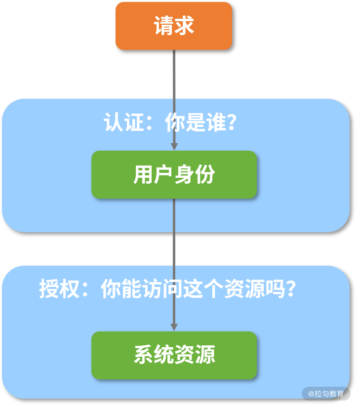
基于认证和授权机制的资源访问安全性示意图
上图就是一种通用方案，而在不同的应用场景及技术体系下，系统可以衍生出很多具体的实现策略，比如 Web 应用系统中的认证和授权模型虽然与上图类似，但是在具体设计和实现过程中有其特殊性。
在 Web 应用体系中，因为认证这部分的需求相对比较明确，所以我们需要构建一套完整的存储体系来保存和维护用户信息，并且确保这些用户信息在处理请求的过程中能够得到合理利用。
而授权的情况相对来说复杂些，比如对某个特定的 Web 应用程序而言，我们面临的第一个问题是如何判断一个 HTTP 请求具备访问自己的权限。解决完这个第一个问题后，就算这个请求具备访问该应用程序的权限，并不意味着它能够访问其所具有的所有 HTTP 端点，比如业务上的某些核心功能还是需要具备较高的权限才能访问，这就涉及我们需要解决的第二个问题——如何对访问的权限进行精细化管理？如下图所示：
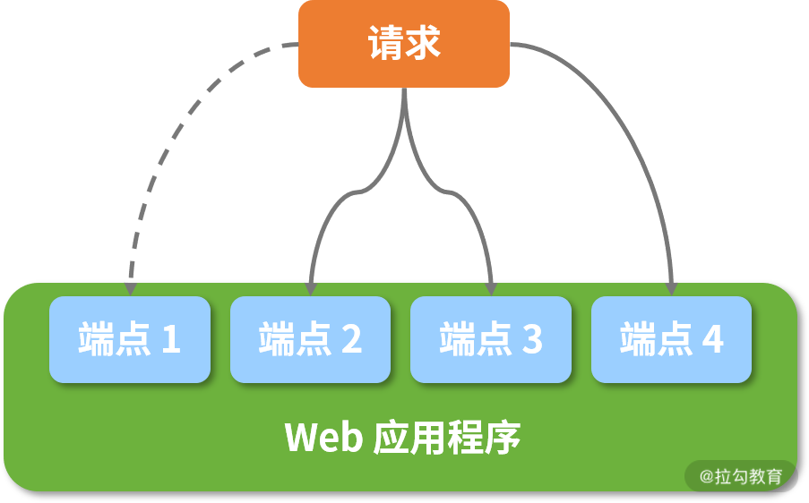
Web 应用程序访问授权效果示意图
在上图中，假设该请求具备对 Web 应用程序的访问权限，但不具备访问应用程序中端点 1 的权限，如果想实现这种效果，一般我们的做法是引入角色体系：首先对不同的用户设置不同等级的角色（即角色等级不同对应的访问权限也不同），再把每个请求绑定到某个角色（即该请求具备了访问权限）。
接下来我们把认证和授权进行结合，梳理出了 Web 应用程序访问场景下的安全性实现方案，如下图所示：
认证和授权整合示意图
从上图我们可以看到，用户首先通过请求传递用户凭证完成用户认证，然后根据该用户信息中所具备的角色信息获取访问权限，最终完成对 HTTP 端点的访问授权。
对一个 Web 应用程序进行安全性设计时，我们首先需要考虑认证和授权，因为它们是核心考虑点。在技术实现场景中，只要涉及用户认证，势必会涉及用户密码等敏感信息的加密。针对用户密码的场景，我们主要使用单向散列加密算法对敏感信息进行加密。
关于单向散列加密算法，它常用于生成消息摘要（Message Digest），主要特点为单向不可逆和密文长度固定，同时具备“碰撞”少的优点，即明文的微小差异会导致生成的密文完全不同。其中，常见的单向散列加密实现算法为 MD5（Message Digest 5）和 SHA（Secure Hash Algorithm）。而在 JDK 自带的 MessageDigest 类中，因为它已经包含了这些算法的默认实现，所以我们直接调用方法即可。
在日常开发过程中，对于密码进行加密的典型操作时序图如下所示：
单向散列加密与加盐机制
上图中，我们引入了加盐（Salt）机制，进一步提升了加密数据的安全性。所谓加盐就是在初始化明文数据时，系统自动往明文中添加一些附加数据，然后再进行散列。
目前，单向散列加密及加盐思想已被广泛用于系统登录过程中的密码生成和校验过程中，比如接下来我们将要引入的 Spring Security 框架。
Spring Security 架构
Spring Security 是 Spring 家族中历史比较悠久的一个框架，在 Spring Boot 出现之前，Spring Security 已经发展了很多年，尽管 Spring Security 的功能非常丰富，相比 Apache Shiro 这种轻量级的安全框架，它的优势就不那么明显了，加之应用程序中集成和配置 Spring Security 框架的过程比较复杂，因此它的发展过程并不是那么顺利。
而正是随着 Spring Boot 的兴起，带动了 Spring Security 的发展。它专门针对 Spring Security 提供了一套完整的自动配置方案，使得开发人员可以零配置使用 Spring Security。
这一讲我们先不对如何使用 Spring Security 框架展开说明，而是先从高层次梳理该框架对前面提到的各项安全性需求提供的架构设计。
Spring Security 中的过滤器链
与业务中大多数处理 Web 请求的框架对比后，我们发现 Spring Security 中采用的是管道-过滤器（Pipe-Filter）架构模式，如下图所示：
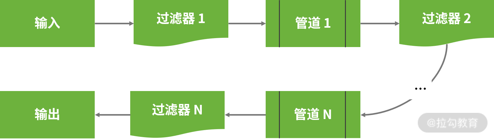
管道-过滤器架构模式示意图
在上图中我们可以看到，处理业务逻辑的组件称为过滤器，而处理结果的相邻过滤器之间的连接件称为管道，它们构成了一组过滤器链，即 Spring Security 的核心。
项目一旦启动，过滤器链将会实现自动配置，如下图所示：
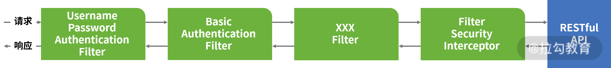
Spring Security 中的过滤器链
在上图中，我们看到了 BasicAuthenticationFilter、UsernamePasswordAuthenticationFilter 等几个常见的 Filter，这些类可以直接或间接实现 Servlet 类中的 Filter 接口，并完成某一项具体的认证机制。例如，上图中的 BasicAuthenticationFilter 用来认证用户的身份，而 UsernamePasswordAuthenticationFilter 用来检查输入的用户名和密码，并根据认证结果来判断是否将结果传递给下一个过滤器。
这里请注意，整个 Spring Security 过滤器链的末端是一个 FilterSecurityInterceptor，本质上它也是一个 Filter，但它与其他用于完成认证操作的 Filter 不同，因为它的核心功能是用来实现权限控制，即判定该请求是否能够访问目标 HTTP 端点。因为我们可以把 FilterSecurityInterceptor 对权限控制的粒度划分到方法级别，所以它能够满足前面提到的精细化访问控制。
通过上述分析，我们知道了在 Spring Security 中，认证和授权这两个安全性需求主要通过一系列的过滤器进行实现。
基于过滤器链，我们再来深入分析下 Spring Security 的核心类结构。
Spring Security 中的核心类
我们先以最基础的 UsernamePasswordAuthenticationFilter 为例，该类的定义及核心方法 attemptAuthentication 如下代码所示。
public class UsernamePasswordAuthenticationFilter extends
AbstractAuthenticationProcessingFilter {
public Authentication attemptAuthentication(HttpServletRequest request,
HttpServletResponse response) throws AuthenticationException {
if (postOnly && !request.getMethod().equals("POST")) {
throw new AuthenticationServiceException(
"Authentication method not supported: " + request.getMethod());
}
String username = obtainUsername(request);
String password = obtainPassword(request);
if (username == null) {
username = "";
}
if (password == null) {
password = "";
}
username = username.trim();
UsernamePasswordAuthenticationToken authRequest = new UsernamePasswordAuthenticationToken(
username, password);
// Allow subclasses to set the "details" property
setDetails(request, authRequest);
return this.getAuthenticationManager().authenticate(authRequest);
}
…
}
围绕上述方法，通过翻阅 Spring Security 源代码，我们引出了该框架中一系列核心类，并梳理了它们之间的交互结构，如下图所示：
Spring Security 核心类图
上图中的很多类，通过名称我们就能明白它的含义和作用。
以位于左下角的 SecurityContextHolder 为例，它是一个典型的 Holder 类，存储了应用的安全上下文对象 SecurityContext，包含系统请求中最近使用的认证信息。这里我们大胆猜想它的内部肯定使用了 ThreadLocal 来确保线程访问的安全性。
而正如 UsernamePasswordAuthenticationFilter 中的代码所示，一个 HTTP 请求到达系统后，将通过一系列的 Filter 完成用户认证，然后具体的工作交由 AuthenticationManager 完成，AuthenticationManager 成功验证后会返回填充好的 Authentication 实例。
AuthenticationManager 是一个接口，在其实现 ProviderManager 类时会进一步依赖 AuthenticationProvider 接口完成具体的认证工作。
而在 Spring Security 中存在一大批 AuthenticationProvider 接口的实现类，分别完成各种认证操作。在执行具体的认证工作时，Spring Security 势必会使用用户详细信息，上图位于右边的 UserDetailsService 服务就是用来对用户详细信息实现管理。
关于上图中的很多其他核心类，我们将在后续的 18 讲《用户认证：如何基于Spring Security 构建用户认证体系？》中持续深入展开。
小结与预告
这一讲我们开始探讨 Web 应用程序的安全性，在这个领域中，因为认证和授权仍然是最基本的安全性控制手段，因此我们系统分析了认证和授权的解决方案，并引入了 Spring 家族中的 Spring Security 框架实现这一解决方案，同时对 Spring Security 的基本架构做了分析。
介绍完认证和授权的基本概念之后，18 讲我们将基于 SpringCSS 案例系统详细介绍它们的实现过程，首先我们需要关注如何使用 Spring Security 框架完成对用户认证过程的管理。
18 用户认证：如何基于 Spring Security 构建用户认证体系？
在 17 讲中，我们梳理了 Web 应用程序的安全性需求，并引出了 Spring Security 这款 Spring 家族中专门用于处理安全性需求的开发框架，同时也明确了认证和授权是安全性框架的核心功能。
这一讲我们将先讨论与认证相关的话题，并给出 Spring Security 认证机制及其使用方法。因为 Spring Security 是日常开发过程中的基础组件，所以我们也会对如何实现数据加解密的过程做一些展开。
在 Spring Boot 中整合 Spring Security 框架的方式非常简单，我们只需要在 pom 文件中引入 spring-boot-starter-security 依赖即可，这与以往需要提供很多配置才能与 Spring Security 完成集成的开发过程不同，如下代码所示：
<dependency>
<groupId>org.springframework.boot</groupId>
<artifactId>spring-boot-starter-security</artifactId>
</dependency>
请注意，只要我们在代码工程中添加了上述依赖，包含在该工程中的所有 HTTP 端点都将被保护起来。
例如，在 SpringCSS 案例的 account-service 中，我们知道存在一个 AccountController ，且它暴露了一个“accounts/ /{accountId}”端点。现在，我们启动 account-service 服务并访问上述端点，弹出了如下图所示的界面内容：
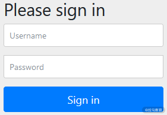
添加 Spring Security 之后自动出现的登录界面
同时，在系统的启动控制台日志中，我们发现了如下所示的新的日志信息。
Using generated security password: 17bbf7c4-456a-48f5-a12e-a680066c8f80
在这里可以看到，Spring Security 为我们自动生成了一个密码，我们可以基于“user”这个账号及上述密码登录这个界面，抽空你也可以尝试下。
如果我们使用了 Postman 可视化 HTTP 请求工具，可以设置授权类型为“Basic Auth”并输入对应的用户名和密码完成对 HTTP 端点的访问，设置界面如下图所示：

使用 Postman 来完成认证信息的设置
事实上，在引入 spring-boot-starter-security 依赖之后，Spring Security 会默认创建一个用户名为“user”的账号。很显然，每次启动应用时，通过 Spring Security 自动生成的密码都会有所变化，因此它不适合作为一种正式的应用方法。
如果我们想设置登录账号和密码，最简单的方式是通过配置文件。例如，我们可以在 account-service 的 application.yml 文件中添加如下代码所示的配置项：
spring:
security:
user:
name: springcss
password: springcss_password
重启 account-service 服务后，我们就可以使用上述用户名和密码完成登录。
虽然基于配置文件的用户信息存储方案简单且直接，但是显然缺乏灵活性，因此 Spring Security 为我们提供了多种存储和管理用户认证信息的方案，我们一起来看一下。
配置 Spring Security
在 SpringSecurity 中，初始化用户信息所依赖的配置类是 WebSecurityConfigurer 接口，该接口实际上是一个空接口，继承了更为基础的 SecurityConfigurer 接口。
在日常开发中，我们往往不需要自己实现这个接口，而是使用 WebSecurityConfigurerAdapter 类简化该配置类的使用方式。比如我们可以通过继承 WebSecurityConfigurerAdapter 类并且覆写其中的 configure(AuthenticationManagerBuilder auth) 的方法完成配置工作。
关于 WebSecurityConfigurer 配置类，首先我们需要明确配置的内容。实际上，初始化所使用的用户信息非常简单，只需要指定用户名（Username）、密码（Password）和角色（Role）这三项数据即可。
在 WebSecurityConfigurer 类中，使用 AuthenticationManagerBuilder 类创建一个 AuthenticationManager 就能够轻松实现基于内存、LADP 和 JDBC 的验证。
接下来，我们就围绕 AuthenticationManagerBuilder 提供的功能实现多种用户信息存储方案。
使用基于内存的用户信息存储方案
我们先来看看如何使用 AuthenticationManagerBuilder 完成基于内存的用户信息存储方案。
实现方法是调用 AuthenticationManagerBuilder 的 inMemoryAuthentication 方法，示例代码如下所示：
@Override
protected void configure(AuthenticationManagerBuilder builder) throws Exception {
builder.inMemoryAuthentication()
.withUser("springcss_user").password("password1")
.roles("USER")
.and()
.withUser("springcss_admin").password("password2")
.roles("USER", "ADMIN");
}
从上面的代码中，我们看到系统中存在"springcss _user"和"springcss _admin"这两个用户，其密码分别是"password1"和"password2"，分别代表着普通用户 USER 及管理员 ADMIN 这两个角色。
在 AuthenticationManagerBuilder 中，上述 inMemoryAuthentication 的方法的实现过程如下代码所示：
public InMemoryUserDetailsManagerConfigurer<AuthenticationManagerBuilder> inMemoryAuthentication()
throws Exception {
return apply(new InMemoryUserDetailsManagerConfigurer<>());
}
这里的 InMemoryUserDetailsManagerConfigurer 内部又使用到了 InMemoryUserDetailsManager 对象，而通过深入该类，我们可以获取 Spring Security 中与用户认证相关的一大批核心对象，它们之间的关系如下图所示：

Spring Security 中用户认证相关类结构图
首先，我们来看上图中代表用户详细信息的 UserDetails 接口，如下代码所示：
public interface UserDetails extends Serializable {
//获取该用户的权限信息
Collection<? extends GrantedAuthority> getAuthorities();
//获取密码
String getPassword();
//获取用户名
String getUsername();
//判断该账户是否已失效
boolean isAccountNonExpired();
//判断该账户是否已被锁定
boolean isAccountNonLocked();
//判断该账户的凭证信息是否已失效
boolean isCredentialsNonExpired();
//判断该用户是否可用
boolean isEnabled();
}
在上述代码中，我们发现 UserDetails 存在一个子接口 MutableUserDetails，从命名上不难看出，后者是一个可变的 UserDetails，而可变的内容就是密码。
关于 MutableUserDetails 接口的定义如下代码所示：
interface MutableUserDetails extends UserDetails {
//设置密码
void setPassword(String password);
}
在 Spring Security 中，针对 UserDetails 还存在一个专门的 UserDetailsService，该接口专门用来管理 UserDetails，它的定义如下代码所示：
public interface UserDetailsService {
//根据用户名获取用户信息
UserDetails loadUserByUsername(String username) throws UsernameNotFoundException;
}
而 UserDetailsManager 继承了 UserDetailsService，并提供了一批针对 UserDetails 的操作接口，如下代码所示：
public interface UserDetailsManager extends UserDetailsService {
//创建用户
void createUser(UserDetails user);
//更新用户
void updateUser(UserDetails user);
//删除用户
void deleteUser(String username);
//修改密码
void changePassword(String oldPassword, String newPassword);
//判断指定用户名的用户是否存在
boolean userExists(String username);
}
介绍完 UserDetailsManager 后，我们再回到 InMemoryUserDetailsManager 类，它实现了 UserDetailsManager 接口中的所有方法，这些方法主要用来对用户信息进行维护，从而形成一条代码支线。
为了完成用户信息的配置，还存在另外一条代码支线，即 UserDetailsManagerConfigurer。该类维护了一个 UserDetails 列表，并提供了一组 withUser 方法完成用户信息的初始化，如下代码所示：
private final List<UserDetails> users = new ArrayList<>();
public final C withUser(UserDetails userDetails) {
this.users.add(userDetails);
return (C) this;
}
从上述代码中，我们看到 withUser 方法返回的是一个 UserDetailsBuilder 对象，通过该对象可以实现类似 .withUser("springcss_user").password("password1").roles("USER") 这样的链式语法，从而完成用户信息的设置。
请注意，这里的 .roles() 方法实际上是 .authorities() 方法的一种简写，因为 Spring Security 会在每个角色名称前自动添加“ROLE_”前缀，我们可以通过如下所示的代码实现同样的功能：
@Override
protected void configure(AuthenticationManagerBuilder builder) throws Exception {
builder.inMemoryAuthentication()
.withUser("springcss_user").password("password1")
.authorities("ROLE_USER")
.and()
.withUser("springcss_admin").password("password2")
.authorities("ROLE_USER", "ROLE_ADMIN");
}
我们可以看到，基于内存的用户信息存储方案也比较简单，但是由于用户信息写死在代码中，因此同样缺乏灵活性。
接下来我们将引出另一种更为常见的用户信息存储方案——数据库存储。
使用基于数据库的用户信息存储方案
既然是将用户信息存储在数据库中，我们势必需要创建表结构。因此，在 Spring Security 的源文件中，我们可以找到对应的 SQL 语句，如下代码所示：
create table users(username varchar_ignorecase(50) not null primary key,password varchar_ignorecase(500) not null,enabled boolean not null);
create table authorities (username varchar_ignorecase(50) not null,authority varchar_ignorecase(50) not null,constraint fk_authorities_users foreign key(username) references users(username));
create unique index ix_auth_username on authorities (username,authority);
一旦在自己的数据库中创建了这两张表，且添加了相应数据，我们就可以直接注入一个 DataSource 对象查询用户数据，如下代码所示：
@Autowired
DataSource dataSource;
@Override
protected void configure(AuthenticationManagerBuilder auth) throws Exception {
auth.jdbcAuthentication().dataSource(dataSource)
.usersByUsernameQuery("select username, password, enabled from Users " + "where username=?")
.authoritiesByUsernameQuery("select username, authority from UserAuthorities " + "where username=?")
.passwordEncoder(new BCryptPasswordEncoder());
}
这里使用了 AuthenticationManagerBuilder 的 jdbcAuthentication 方法配置数据库认证方式，而内部则使用了 JdbcUserDetailsManager 工具类。
围绕 JdbcUserDetailsManager 整条代码链路的类层结构与 InMemoryUserDetailsManager 非常一致，在该类中定义了各种用户数据库查询的 SQL 语句，以及使用 JdbcTemplate 完成数据库访问的具体实现方法。这里我们不再具体展开，你可以对照前面给出的 InMemoryUserDetailsManager 类层结构图进行分析。
注意，在上述方法中，通过 jdbcAuthentication() 方法验证用户信息时，我们必须集成加密机制，即使用 passwordEncoder() 方法嵌入一个 PasswordEncoder 接口的实现类。
在 Spring Security 中，PasswordEncoder 接口代表一种密码编码器，定义如下代码所示：
public interface PasswordEncoder {
//对原始密码进行编码
String encode(CharSequence rawPassword);
//对提交的原始密码与库中存储的加密密码进行比对
boolean matches(CharSequence rawPassword, String encodedPassword);
//判断加密密码是否需要再次进行加密，默认返回false
default boolean upgradeEncoding(String encodedPassword) {
return false;
}
}
Spring Security 中内置了一大批 PasswordEncoder 接口的实现类，如下图所示：
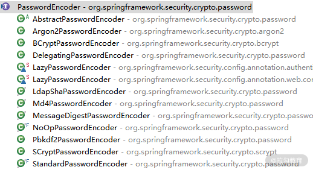
Spring Security 中的 PasswordEncoder 实现类
上图中，比较常用的算法如 SHA-256 算法的 StandardPasswordEncoder、bcrypt 强哈希算法的 BCryptPasswordEncoder 等。而在实际案例中，我们使用的是 BCryptPasswordEncoder，它的 encode 方法如下代码所示：
public String encode(CharSequence rawPassword) {
String salt;
if (random != null) {
salt = BCrypt.gensalt(version.getVersion(), strength, random);
} else {
salt = BCrypt.gensalt(version.getVersion(), strength);
}
return BCrypt.hashpw(rawPassword.toString(), salt);
}
可以看到，上述 encode 方法执行了两个步骤，第一步是生成盐，第二步是根据盐和明文密码生成最终的密文密码。
实现定制化用户认证方案
通过前面内容的分析，我们明确了用户信息存储的实现过程实际上是完全可定制化，而 Spring Security 所做的工作只是把常见、符合一般业务场景的实现方式嵌入框架中。如果存在特殊的场景，开发人员完全可以通过自定义用户信息存储方案进行实现。
在前面的内容中，我们介绍了 UserDetails 接口代表用户详细信息，而 UserDetailsService 接口负责对 UserDetails 进行各种操作 。因此，实现定制化用户认证方案的关键是实现 UserDetails 和 UserDetailsService 这两个接口。
扩展 UserDetails
扩展 UserDetails 的方法的实质是直接实现该接口，例如我们可以构建如下所示的 SpringCssUser 类：
public class SpringCssUser implements UserDetails {
private static final long serialVersionUID = 1L;
private Long id;
private final String username;
private final String password;
private final String phoneNumber;
//省略getter/setter
@Override
public String getUsername() {
return username;
}
@Override
public String getPassword() {
return password;
}
@Override
public Collection<? extends GrantedAuthority> getAuthorities() {
return Arrays.asList(new SimpleGrantedAuthority("ROLE_USER"));
}
@Override
public boolean isAccountNonExpired() {
return true;
}
@Override
public boolean isAccountNonLocked() {
return true;
}
@Override
public boolean isCredentialsNonExpired() {
return true;
}
@Override
public boolean isEnabled() {
return true;
}
}
显然，这里我们使用了一种更简单的方法满足 UserDetails 中各个接口的实现需求。一旦我们构建了一个 SpringCssUser 类，就可以创建对应的表结构存储类中所定义的字段。同时，我们也可以基于 Spring Data JPA 创建一个自定义的 Repository，如下代码所示：
public interface SpringCssUserRepository extends CrudRepository<SpringCssUser, Long> {
SpringCssUser findByUsername(String username);
}
SpringCssUserRepository 扩展了 CrudRepository 接口，并提供了一个方法名衍生查询 findByUsername。
关于 Spring Data JPA 的使用方法，你还可以回顾《ORM 集成：如何使用 Spring Data JPA 访问关系型数据库？》。
扩展 UserDetailsService
接着，我们来实现 UserDetailsService 接口，如下代码所示：
@Service
public class SpringCssUserDetailsService
implements UserDetailsService {
@Autowired
private SpringCssUserRepository repository;
@Override
public UserDetails loadUserByUsername(String username)
throws UsernameNotFoundException {
SpringCssUser user = repository.findByUsername(username);
if (user != null) {
return user;
}
throw new UsernameNotFoundException(
"SpringCSS User '" + username + "' not found");
}
}
在 UserDetailsService 接口中，我们只需要实现 loadUserByUsername 方法就行。因此，我们可以基于 SpringCssUserRepository 的 findByUsername 方法，再根据用户名从数据库中查询数据。
整合定制化配置
最后，我们再次回到 SpringCssSecurityConfig 类。
这次我们将使用自定义的 SpringCssUserDetailsService 完成用户信息的存储和查询，此时我们只需要对配置策略做一些调整，调整后的完整 SpringCssSecurityConfig 类如下代码所示：
@Configuration
public class SpringCssSecurityConfig extends WebSecurityConfigurerAdapter {
@Autowired
SpringCssUserDetailsService springCssUserDetailsService;
@Override
protected void configure(AuthenticationManagerBuilder auth) throws Exception {
auth.userDetailsService(springCssUserDetailsService);
}
}
这里我们注入了 SpringCssUserDetailsService，并将其添加到 AuthenticationManagerBuilder 中，这样 AuthenticationManagerBuilder 将基于自定义的 SpringCssUserDetailsService 完成 UserDetails 的创建和管理。
小结与预告
这一讲我们详细介绍了如何使用 Spring Security 构建用户认证体系的系统方法。
一方面，我们可以分别基于内存和数据库方案存储用户信息，这两种方案都是 Spring Security 内置的。另一方面，我们可以通过扩展 UserDetails 接口的方式实现定制化用户的认证方案。同时，为了方便你理解和掌握这部分内容，我们还梳理了与用户认证相关的核心类。
介绍完用户认证信息后，19 讲我们将介绍如何基于 Spring Security 确保 Web 请求的安全访问。
19 服务授权：如何基于 Spring Security 确保请求安全访问？
18 讲中，我们集中讨论了如何通过 WebSecurityConfigurerAdapter 完成对用户认证体系的构建。这一讲我们将继续使用这个配置类完成对服务访问的授权控制。
在日常开发过程中，我们需要对 Web 应用中的不同 HTTP 端点进行不同粒度的权限控制，并且希望这种控制方法足够灵活。而借助 Spring Security 框架，我们就可以对其进行简单实现，下面我们一起来看下。
对 HTTP 端点进行访问授权管理
在一个 Web 应用中，权限管理的对象是通过 Controller 层暴露的一个个 HTTP 端点，而这些 HTTP 端点就是需要授权访问的资源。
开发人员使用 Spring Security 中提供的一系列丰富技术组件，即可通过简单的设置对权限进行灵活管理。
使用配置方法
实现访问授权的第一种方法是使用配置方法，关于配置方法的处理过程也是位于 WebSecurityConfigurerAdapter 类中，但使用的是 configure(HttpSecurity http) 方法，如下代码所示：
protected void configure(HttpSecurity http) throws Exception {
http
.authorizeRequests()
.anyRequest()
.authenticated()
.and()
.formLogin()
.and()
.httpBasic();
}
上述代码就是 Spring Security 中作用于访问授权的默认实现方法，这里用到了多个常见的配置方法。
回想 18 课时中的内容，访问任何端点时，一旦在代码类路径中引入了 Spring Security 框架，就会弹出一个登录界面从而完成用户认证。因为认证是授权的前置流程，认证结束后就可以进入授权环节。
结合这些配置方法的名称，我们简单分析一下实现这种默认的授权效果的具体步骤。
首先，通过 HttpSecurity 类的 authorizeRequests() 方法，我们可以对所有访问 HTTP 端点的 HttpServletRequest 进行限制。
其次，anyRequest().authenticated() 语句指定了所有请求都需要执行认证，也就是说没有通过认证的用户无法访问任何端点。
然后，formLogin() 语句指定了用户需要使用表单进行登录，即会弹出一个登录界面。
最后， httpBasic() 语句使用 HTTP 协议中的 Basic Authentication 方法完成认证。
18 讲中我们也演示了如何使用 Postman 完成认证的方式，这里就不过多赘述了。
当然，Spring Security 中还提供了很多其他有用的配置方法供开发人员灵活使用，下表中我们进行了列举，一起来看下。
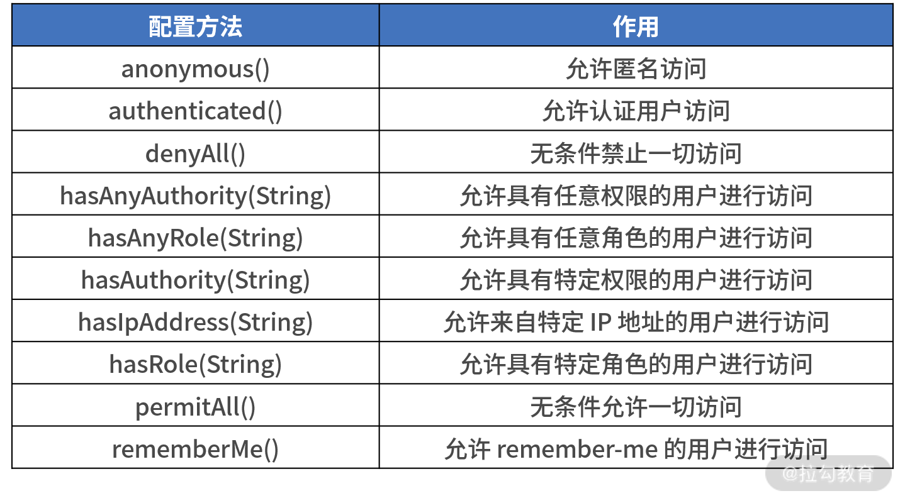
基于上表中的配置方法，我们就可以通过 HttpSecurity 实现自定义的授权策略。
比方说，我们希望针对“/orders”根路径下的所有端点进行访问控制，且只允许认证通过的用户访问，那么可以创建一个继承了 WebSecurityConfigurerAdapter 类的 SpringCssSecurityConfig，并覆写其中的 configure(HttpSecurity http) 方法来实现，如下代码所示：
@Configuration
public class SecurityConfig extends WebSecurityConfigurerAdapter {
@Override
public void configure(HttpSecurity http) throws Exception {
http.authorizeRequests()
.antMatchers("/orders/**")
.authenticated();
}
}
请注意：虽然上表中的这些配置方法非常有用，但是由于我们无法基于一些来自环境和业务的参数灵活控制访问规则，也就存在一定的局限性。
为此，Spring Security 还提供了一个 access() 方法，该方法允许开发人员传入一个表达式进行更细粒度的权限控制，这里，我们将引入Spring 框架提供的一种动态表达式语言—— SpEL（Spring Expression Language 的简称）。
只要 SpEL 表达式的返回值为 true，access() 方法就允许用户访问，如下代码所示：
@Override
public void configure(HttpSecurity http) throws Exception {
http.authorizeRequests()
.antMatchers("/orders")
.access("hasRole('ROLE_USER')");
}
上述代码中，假设访问“/orders”端点的请求必须具备“ROLE_USER”角色，通过 access 方法中的 hasRole 方法我们即可灵活地实现这个需求。当然，除了使用 hasRole 外，我们还可以使用 authentication、isAnonymous、isAuthenticated、permitAll 等表达式进行实现。因这些表达式的作用与前面介绍的配置方法一致，我们就不过多赘述。
使用注解
除了使用配置方法，Spring Security 还为我们提供了 @PreAuthorize 注解实现类似的效果，该注解定义如下代码所示：
@Target({ ElementType.METHOD, ElementType.TYPE })
@Retention(RetentionPolicy.RUNTIME)
@Inherited
@Documented
public @interface PreAuthorize {
//通过 SpEL 表达式设置访问控制
String value();
}
可以看到 @PreAuthorize 的原理与前面介绍的 access() 方法一样，即通过传入一个 SpEL 表达式设置访问控制，如下所示代码就是一个典型的使用示例：
@RestController
@RequestMapping(value="orders")
public class OrderController {
@PostMapping(value = "/")
@PreAuthorize("hasRole(ROLE_ADMIN)")
public void addOrder(@RequestBody Order order) {
…
}
}
从这个示例中可以看到，在“/orders/”这个 HTTP 端点上，我们添加了一个 @PreAuthorize 注解用来限制只有角色为“ROLE_ADMIN”的用户才能访问该端点。
其实，Spring Security 中用于授权的注解还有 @PostAuthorize，它与 @PreAuthorize 注解是一组，主要用于请求结束之后检查权限。因这种情况比较少见，这里我们不再继续展开，你可以翻阅相关资料学习。
实现多维度访问授权方案
我们知道 HTTP 端点是 Web 应用程序的一种资源，而每个 Web 应用程序对于自身资源的保护粒度因服务而异。对于一般的 HTTP 端点，用户可能通过认证就可以访问；对于一些重要的 HTTP 端点，用户在已认证的基础上还会有一些附加要求。
接下来，我们将讨论对资源进行保护的三种粒度级别。
- 用户级别： 该级别是最基本的资源保护级别，只要是认证用户就可能访问服务内的各种资源。
- 用户+角色级别： 该级别在认证用户级别的基础上，还要求用户属于某一个或多个特定角色。
- 用户+角色+操作级别： 该级别在认证用户+角色级别的基础上，对某些 HTTP 操作方法做了访问限制。
基于配置方法和注解，我们可以轻松实现上述三种访问授权方案。
使用用户级别保护服务访问
这次，我们来到 SpringCSS 案例系统中的 customer-service，先来回顾一下 CustomerController 的内容，如下所示：
@RestController
@RequestMapping(value="customers")
public class CustomerController {
@Autowired
private CustomerTicketService customerTicketService;
@PostMapping(value = "/{accountId}/{orderNumber}")
public CustomerTicket generateCustomerTicket( @PathVariable("accountId") Long accountId,
@PathVariable("orderNumber") String orderNumber) {
CustomerTicket customerTicket = customerTicketService.generateCustomerTicket(accountId, orderNumber);
return customerTicket;
}
@GetMapping(value = "/{id}")
public CustomerTicket getCustomerTicketById(@PathVariable Long id) {
CustomerTicket customerTicket = customerTicketService.getCustomerTicketById(id);
return customerTicket;
}
@GetMapping(value = "/{pageIndex}/{pageSize}")
public List<CustomerTicket> getCustomerTicketList( @PathVariable("pageIndex") int pageIndex, @PathVariable("pageSize") int pageSize) {
List<CustomerTicket> customerTickets = customerTicketService.getCustomerTickets(pageIndex, pageSize);
return customerTickets;
}
@DeleteMapping(value = "/{id}")
public void deleteCustomerTicket( @PathVariable("id") Long id) {
customerTicketService.deleteCustomerTicket(id);
}
}
因为 CustomerController 是 SpringCSS 案例中的核心入口，所以我们认为它的所有端点都应该受到保护。于是，在 customer-service 中，我们创建了一个 SpringCssSecurityConfig 类继承 WebSecurityConfigurerAdapter，如下代码所示：
@Configuration
public class SpringCssSecurityConfig extends WebSecurityConfigurerAdapter {
@Override
public void configure(HttpSecurity http) throws Exception {
http.authorizeRequests()
.anyRequest()
.authenticated();
}
}
位于 configure() 方法中的 .anyRequest().authenticated() 语句指定了访问 customer-service 下的所有端点的任何请求都需要进行验证。因此，当我们使用普通的 HTTP 请求访问 CustomerController 中的任何 URL（例如http://localhost:8083/customers/1），将会得到如下图代码所示的错误信息，该错误信息明确指出资源的访问需要进行认证。
{
"error": "access_denied",
"error_description": "Full authentication is required to access to this resource"
}
记得 18 讲中覆写 WebSecurityConfigurerAdapter 的 config(AuthenticationManagerBuilder auth) 方法时提供了一个用户名“springcss_user”，现在我们就用这个用户名来添加用户认证信息并再次访问该端点。显然，因为此时我们传入的是有效的用户信息，所以可以满足认证要求。
使用用户+角色级别保护服务访问
对于某些安全性要求比较高的 HTTP 端点，我们通常需要限定访问的角色。
例如，customer-service 服务中涉及客户工单管理等核心业务，我们认为不应该给所有的认证用户开放资源访问入口，而应该限定只有角色为“ADMIN”的管理员才开放。这时，我们就可以使用认证用户+角色保护服务的访问控制机制，具体的示例代码如下所示：
@Configuration
public class SpringCssSecurityConfig extends WebSecurityConfigurerAdapter {
@Override
public void configure(HttpSecurity http) throws Exception {
http.authorizeRequests()
.antMatchers("/customers/**")
.hasRole("ADMIN")
.anyRequest()
.authenticated();
}
}
在上述代码中可以看到，我们使用了 HttpSecurity 类中的 antMatchers("/customer/") 和 hasRole("ADMIN") 方法为访问"/customers/"的请求限定了角色，只有"ADMIN"角色的认证用户才能访问以"/customers/"为根地址的所有 URL。
如果我们使用了认证用户+角色的方式保护服务访问，使用角色为“USER”的认证用户“springcss_user”访问 customer-service 时就会出现如下所示的“access_denied”错误信息：
{
"error": "access_denied",
"error_description": "Access is denied"
}
而我们使用具有“ADMIN”角色的“springcss_admin”用户访问 customer-service 时，将会得到正常的返回信息，关于这点你可以自己做一些尝试。
使用用户+角色+操作级别保护服务访问
最后一种保护服务访问的策略粒度划分最细，在认证用户+角色的基础上，我们需要再对具体的 HTTP 操作进行限制。
在 customer-service 中，我们认为所有对客服工单的删除操作都很危险，因此可以使用 http.antMatchers(HttpMethod.DELETE, "/customers/**") 方法对删除操作进行保护，示例代码如下：
@Configuration
public class SpringCssSecurityConfig extends WebSecurityConfigurerAdapter {
@Override
public void configure(HttpSecurity http) throws Exception{
http.authorizeRequests()
.antMatchers(HttpMethod.DELETE, "/customers/**")
.hasRole("ADMIN")
.anyRequest()
.authenticated();
}
}
上述代码的效果在于对“/customers”端点执行删除操作时，我们需要使用具有“ADMIN”角色的“springcss_admin”用户，执行其他操作时不需要。因为如果我们使用“springcss_user”账户执行删除操作，还是会出现“access_denied”错误信息。
小结与预告
通过 19 讲的学习，我们明确了 Web 应用程序中访问授权控制的三种粒度，并基于 SpringCSS 案例给出了三种粒度下的控制实现方式。
20 服务监控：如何使用 Actuator 组件实现系统监控？
这一讲我们将介绍 Spring Boot 中一个非常有特色的主题——系统监控。
系统监控是 Spring Boot 中引入的一项全新功能，它对应用程序运行状态的管理非常有效。而 Spring Boot Actuator 组件主要通过一系列 HTTP 端点提供的系统监控功能来实现系统监控。因此，接下来我们将引入 Spring Boot Actuator 组件，介绍如何使用它进行系统监控，以及如何对 Actuator 端点进行扩展。
引入 Spring Boot Actuator 组件
在初始化 Spring Boot 系统监控功能之前，首先我们需要引入 Spring Boot Actuator 组件，具体操作为在 pom 中添加如下所示的 Maven 依赖：
<dependency>
<groupId>org.springframework.boot</groupId>
<artifactId>spring-boot-starter-actuator</artifactId>
</dependency>
请注意，引入 Spring Boot Actuator 组件后，并不是所有的端点都对外暴露。例如，启动 customer-service 时，我们就可以在启动日志中发现如下所示内容：
Exposing 2 endpoint(s) beneath base path '/actuator'
访问 http://localhost:8080/actuator 端点后，我们也会得到如下所示结果。
{
"_links":{
"self":{
"href":"http://localhost:8080/actuator",
"templated":false
},
"health-path":{
"href":"http://localhost:8080/actuator/health/{*path}",
"templated":true
},
"health":{
"href":"http://localhost:8080/actuator/health",
"templated":false
},
"info":{
"href":"http://localhost:8080/actuator/info",
"templated":false
}
}
}
这种结果就是 HATEOAS 风格的 HTTP 响应。如果我们想看到默认情况下看不到的所有端点，则需要在配置文件中添加如下所示的配置信息。
management:
endpoints:
web:
exposure:
include: "*"
重启应用后，我们就能获取到 Spring Boot Actuator 暴露的所有端点，如下代码所示：
{
"_links":{
"self":{
"href":"http://localhost:8080/actuator",
"templated":false
},
"beans":{
"href":"http://localhost:8080/actuator/beans",
"templated":false
},
"health":{
"href":"http://localhost:8080/actuator/health",
"templated":false
},
"health-path":{
"href":"http://localhost:8080/actuator/health/{*path}",
"templated":true
},
"info":{
"href":"http://localhost:8080/actuator/info",
"templated":false
},
"conditions":{
"href":"http://localhost:8080/actuator/conditions",
"templated":false
},
"configprops":{
"href":"http://localhost:8080/actuator/configprops",
"templated":false
},
"env":{
"href":"http://localhost:8080/actuator/env",
"templated":false
},
"env-toMatch":{
"href":"http://localhost:8080/actuator/env/{toMatch}",
"templated":true
},
"loggers":{
"href":"http://localhost:8080/actuator/loggers",
"templated":false
},
"loggers-name":{
"href":"http://localhost:8080/actuator/loggers/{name}",
"templated":true
},
"heapdump":{
"href":"http://localhost:8080/actuator/heapdump",
"templated":false
},
"threaddump":{
"href":"http://localhost:8080/actuator/threaddump",
"templated":false
},
"metrics-requiredMetricName":{
"href":"http://localhost:8080/actuator/metrics/{requiredMetricName}",
"templated":true
},
"metrics":{
"href":"http://localhost:8080/actuator/metrics",
"templated":false
},
"scheduledtasks":{
"href":"http://localhost:8080/actuator/scheduledtasks",
"templated":false
},
"mappings":{
"href":"http://localhost:8080/actuator/mappings",
"templated":false
}
}
}
根据端点所起到的作用，我们把 Spring Boot Actuator 提供的原生端点分为如下三类。
- 应用配置类： 主要用来获取应用程序中加载的应用配置、环境变量、自动化配置报告等配置类信息，它们与 Spring Boot 应用密切相关。
- 度量指标类： 主要用来获取应用程序运行过程中用于监控的度量指标，比如内存信息、线程池信息、HTTP 请求统计等。
- 操作控制类： 在原生端点中只提供了一个关闭应用的端点，即 /shutdown 端点。
根据 Spring Boot Actuator 默认提供的端点列表，我们将部分常见端点的类型、路径和描述梳理在如下表格中，仅供参考。
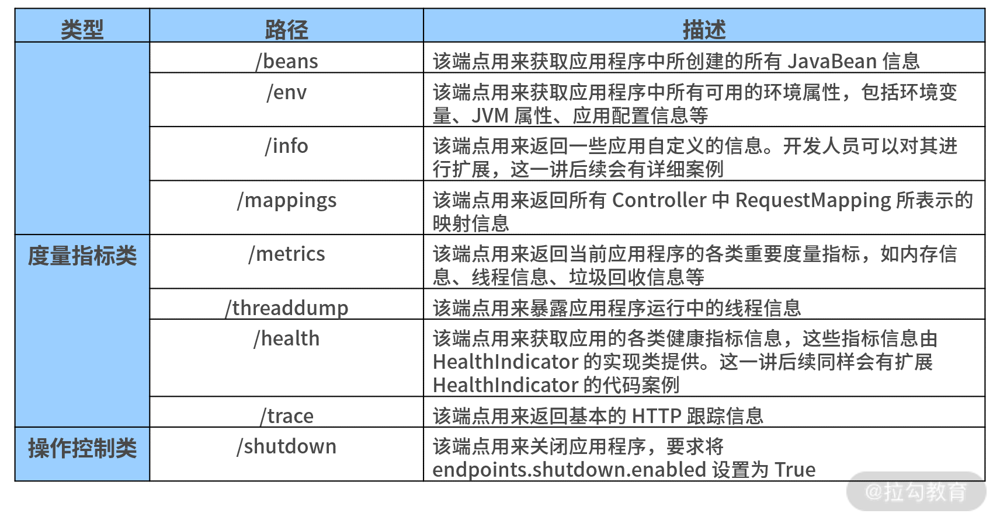
通过访问上表中的各个端点，我们就可以获取自己感兴趣的监控信息了。例如访问了http://localhost:8082/actuator/health端点，我们就可以得到如下所示的 account-service 基本状态。
{
"status":"UP"
}
此时，我们看到这个健康状态信息非常简单。
那有没有什么办法可以获取更详细的状态信息呢？答案是：有，而且办法很简单，我们只需要在配置文件中添加如下所示的配置项即可。
management:
endpoint:
health:
show-details: always
上述配置项指定了针对 health 端点需要显示它的详细信息。这时，如果我们重启 Spring Boot 应用程序，并重新访问 http://localhost:8082/actuator/health 端点，就可以获取如下所示的详细信息。
{
"status":"UP",
"components":{
"diskSpace":{
"status":"UP",
"details":{
"total":201649549312,
"free":3434250240,
"threshold":10485760
}
},
"ping":{
"status":"UP"
}
}
}
如果 Spring Boot Actuator 默认提供的端点信息不能满足业务需求，我们可以对其进行修改和扩展。此时，常见实现方案有两种，一种是扩展现有的监控端点，另一种是自定义新的监控端点。这两种方案我们都会逐一介绍，不过这一讲先来关注如何在现有的监控端点上添加定制化功能。
扩展 Actuator 端点
前面我们介绍了 Spring Boot 默认暴露了日常开发中最常见的两个端点：Info 端点和 Health 端点。接下来，我们讨论下如何对这两个端点进行扩展。
扩展 Info 端点
Info 端点用于暴露 Spring Boot 应用的自身信息。在 Spring Boot 内部，它把这部分工作委托给了一系列 InfoContributor 对象，而 Info 端点会暴露所有 InfoContributor 对象所收集的各种信息。
在Spring Boot 中包含了很多自动配置的 InfoContributor 对象，常见的 InfoContributor 及其描述如下表所示：
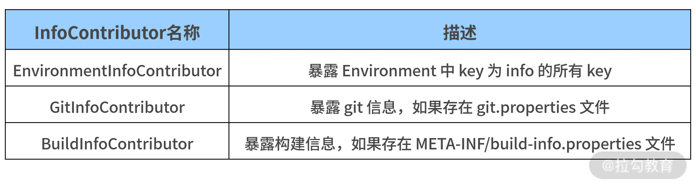
以上表中的 EnvironmentInfoContributor 为例，通过在配置文件中添加格式以“info”作为前缀的配置段，我们就可以定义 Info 端点暴露的数据。添加完成后，我们将看到所有在“info”配置段下的属性都将被自动暴露。
比如你可以将如下所示配置信息添加到配置文件 application.yml 中：
info:
app:
encoding: UTF-8
java:
source: 1.8.0_31
target: 1.8.0_31
现在访问 Info 端点，我们就能得到如下的 Environment 信息。
{
"app":{
"encoding":"UTF-8",
"java":{
"source":"1.8.0_31",
"target":"1.8.0_31"
}
}
}
同时，我们还可以在服务构建时扩展 Info 属性，而不是硬编码这些值。假设使用 Maven，我们就可以按照如下所示的配置重写前面的示例并得到同样的效果。
info:
app:
encoding: @project.build.sourceEncoding@
java:
source: @java.version@
target: @java.version@
很多时候，Spring Boot 自身提供的 Info 端点并不能满足我们的业务需求，这就需要我们编写一个自定义的 InfoContributor 对象。
方法也很简单，我们直接实现 InfoContributor 接口的 contribute() 方法即可。例如，我们希望在 Info 端点中暴露该应用的构建时间，就可以采用如下所示的代码进行操作。
@Component
public class CustomBuildInfoContributor implements InfoContributor {
@Override
public void contribute(Builder builder) {
builder.withDetail("build",
Collections.singletonMap("timestamp", new Date()));
}
}
重新构建应用并访问 Info 端口后，我们就能获取如下所示信息。
{
"app":{
"encoding":"UTF-8",
"java":{
"source":"1.8.0_31",
"target":"1.8.0_31"
}
},
"build":{
"timestamp":1604307503710
}
}
这里我们可以看到，CustomBuildInfoContributor 为 Info 端口新增了时间属性。
扩展 Health 端点
Health 端点用于检查正在运行的应用程序健康状态，而健康状态信息由 HealthIndicator 对象从 Spring 的 ApplicationContext 中获取。
和 Info 端点一样，Spring Boot 内部也提供了一系列 HealthIndicator 对象供我们实现定制化。在默认情况下，HealthAggregator 会根据 HealthIndicator 的有序列表对每个状态进行排序，从而得到最终的系统状态。
常见的 HealthIndicator 如下表所示：
| HealthIndicator 名称 | 描述 |
|---|---|
| DiskSpaceHealthIndicator | 检查磁盘空间是否足够 |
| DataSourceHealthIndicator | 检查是否可以获得连接 DataSource |
| ElasticsearchHealthIndicator | 检查 Elasticsearch 集群是否启动 |
| JmsHealthIndicator | 检查 JMS 代理是否启动 |
| MailHealthIndicator | 检查邮件服务器是否启动 |
| MongoHealthIndicator | 检查 Mongo 数据库是否启动 |
| RabbitHealthIndicator | 检查 RabbitMQ 服务器是否启动 |
| RedisHealthIndicator | 检查 Redis 服务器是否启动 |
| SolrHealthIndicator | 检查 Solr 服务器是否已启动 |
Health 端点信息的丰富程度取决于当下应用程序所处的环境，而一个真实的 Health 端点信息如下代码所示：
{
"status":"UP",
"components":{
"db":{
"status":"UP",
"details":{
"database":"MySQL",
"result":1,
"validationQuery":"/* ping */ SELECT 1"
}
},
"diskSpace":{
"status":"UP",
"details":{
"total":201649549312,
"free":3491287040,
"threshold":10485760
}
},
"ping":{
"status":"UP"
}
}
}
通过以上这些信息，我们就可以判断该环境中是否包含了 MySQL 数据库。
现在，我们还想在 Health 端点中暴露 customer-service 当前运行时状态。
为了进一步明确该服务的状态，我们可以自定义一个 CustomerServiceHealthIndicator 端点专门展示 customer-service 的状态信息，CustomerServiceHealthIndicator 的定义如下所示：
@Component
public class CustomerServiceHealthIndicator implements
HealthIndicator {
@Override
public Health health() {
try {
URL url = new
URL("http://localhost:8083/health/");
HttpURLConnection conn = (HttpURLConnection)
url.openConnection();
int statusCode = conn.getResponseCode();
if (statusCode >= 200 && statusCode < 300) {
return Health.up().build();
} else {
return Health.down().withDetail("HTTP Status Code", statusCode).build();
}
} catch (IOException e) {
return Health.down(e).build();
}
}
}
我们需要提供 health() 方法的具体实现并返回一个 Health 结果。该 Health 结果应该包括一个状态，并且可以根据需要添加任何细节信息。
以上代码中，我们使用了一种简单且直接的方式判断配置中心服务“customerservice”是否正在运行。然后我们构建一个 HTTP 请求，并根据 HTTP 响应得出了健康诊断的结论。
如果 HTTP 响应的状态码处于 200~300 之间，我们认为该服务正在运行，此时，Health.up().build() 方法就会返回一种 Up 响应，如下代码所示：
{
"status": "UP",
"details": {
"customerservice":{
"status": "UP"
}
…
}
}
如果状态码不处于这个区间（例如返回 404，代表服务不可用），Health.down().withDetail().build() 方法就会返回一个 Down 响应，并给出具体的状态码，如下代码所示：
{
"status": "DOWN",
"details": {
"customerservice":{
"status": "DOWN",
"details": {
"HTTP Status Code": "404"
}
},
…
}
}
如果 HTTP 请求直接抛出了异常，Health.down().build() 方法同样会返回一个 Down 响应，并返回异常信息，效果如下代码所示：
{
"status": "DOWN",
"details": {
"customerservice":{
"status": "DOWN",
"details": {
"error": "java.net.ConnectException: Connection refused: connect"
}
},
…
}
}
显然，通过扩展 Health 端点为我们实时监控系统中各个服务的正常运行状态提供了很好的支持，我们也可以根据需要构建一系列有用的 HealthIndicator 实现类，并添加报警等监控手段。
小结与预告
Spring Boot 内置的 Actuator 组件使得开发人员在管理应用程序运行的状态有了更加直接且高效的手段。
这一讲，我们引入了 Actuator 组件并介绍了该组件提供的一系列核心端点，同时重点分析了 Info 和 Health 这两个基础端点，并给出了对它们进行扩展的系统方法。
系统监控的一大目标是收集和分析系统运行时的度量指标，并基于这些指标判断当前的运行时状态，因此，21 讲我们将讨论如何在系统中嵌入自定义度量指标的实现技巧。
21 指标定制：如何实现自定义度量指标和 Actuator 端点？
20 讲中我们引入了 Spring Boot Actuator 组件来满足 Spring Boot 应用程序的系统监控功能，并重点介绍了如何扩展常见的 Info 和 Health 监控端点的实现方法。
这一讲我们继续讨论如何扩展 Actuator 端点，但更多关注与度量指标相关的内容。同时，我们还将给出如何创建自定义 Actuator 的实现方法，以便应对默认端点无法满足需求的应用场景。
Actuator 中的度量指标
对于系统监控而言，度量是一个很重要的维度。 在 Spring Boot 2.X 版本中，Actuator 组件主要使用内置的 Micrometer 库实现度量指标的收集和分析。
Micrometer 度量库
Micrometer 是一款监控指标的度量类库，为 Java 平台上的性能数据收集提供了一套通用的 API。在应用程序中，我们只使用 Micrometer 提供的通用 API 即可收集度量指标。
下面我们先来简要介绍 Micrometer 中包含的几个核心概念。
首先我们需要介绍的是计量器 Meter，它是一个接口，代表的是需要收集的性能指标数据。关于 Meter 的定义如下：
public interface Meter extends AutoCloseable {
//Meter 的唯一标识，是名称和标签的一种组合
Id getId();
//一组测量结果
Iterable<Measurement> measure();
//Meter 的类型枚举值
enum Type {
COUNTER,
GAUGE,
LONG_TASK_TIMER,
TIMER,
DISTRIBUTION_SUMMARY,
OTHER
}
}
通过上述代码，我们注意到 Meter 中存在一个 Id 对象，该对象的作用是定义 Meter 的名称和标签。从 Type 的枚举值中，我们不难看出 Micrometer 中包含的所有计量器类型。
接下来我们先说明两个概念。
Meter 的名称：对于计量器来说，每个计量器都有自己的名称，而且在创建时它们都可以指定一系列标签。 Meter 的标签：标签的作用在于监控系统可以通过这些标签对度量进行分类过滤。
在日常开发过程中，常用的计量器类型主要分为计数器 Counter、计量仪 Gauge 和计时器 Timer 这三种。
- Counter：这个计量器的作用和它的名称一样，就是一个不断递增的累加器，我们可以通过它的 increment 方法实现累加逻辑。
- Gauge：与 Counter 不同，Gauge 所度量的值并不一定是累加的，我们可以通过它的 gauge 方法指定数值。
- Timer：这个计量器比较简单，就是用来记录事件的持续时间。
既然我们已经明确了常用的计量器及其使用场景，那么如何创建这些计量器呢？
在 Micrometer 中，我们提供了一个计量器注册表 MeterRegistry，它主要负责创建和维护各种计量器。关于 MeterRegistry 的创建方法如下代码所示：
public abstract class MeterRegistry implements AutoCloseable {
protected abstract <T> Gauge newGauge(Meter.Id id, @Nullable T obj, ToDoubleFunction<T> valueFunction);
protected abstract Counter newCounter(Meter.Id id);
protected abstract Timer newTimer(Meter.Id id, DistributionStatisticConfig distributionStatisticConfig, PauseDetector pauseDetector);
…
}
以上代码只是创建 Meter 的一种途径，从中我们可以看到 MeterRegistry 针对不同的 Meter 提供了对应的创建方法。
而创建 Meter 的另一种途径是使用某个 Meter 的具体 builder 方法。以 Counter 为例，它的定义中包含了一个 builder 方法和一个 register 方法，如下代码所示：
public interface Counter extends Meter {
static Builder builder(String name) {
return new Builder(name);
}
default void increment() {
increment(1.0);
}
void increment(double amount);
double count();
@Override
default Iterable<Measurement> measure() {
return Collections.singletonList(new Measurement(this::count, Statistic.COUNT));
}
…
public Counter register(MeterRegistry registry) {
return registry.counter(new Meter.Id(name, tags, baseUnit, description, Type.COUNTER));
}
}
注意到最后的 register 方法就是将当前的 Counter 注册到 MeterRegistry 中，因此我们需要创建一个 Counter。通常，我们会采用如下所示代码进行创建。
Counter counter = Counter.builder("counter1")
.tag("tag1", "value1")
.register(registry);
了解了 Micrometer 框架的基本概念后，接下来我们回到 Spring Boot Actuator，一起来看看它提供的专门针对度量指标管理的 Metrics 端点。
扩展 Metrics 端点
在 Spring Boot 中，它为我们提供了一个 Metrics 端点用于实现生产级的度量工具。访问 actuator/metrics 端点后，我们将得到如下所示的一系列度量指标。
{
"names":[
"jvm.memory.max",
"jvm.threads.states",
"jdbc.connections.active",
"jvm.gc.memory.promoted",
"jvm.memory.used",
"jvm.gc.max.data.size",
"jdbc.connections.max",
"jdbc.connections.min",
"jvm.memory.committed",
"system.cpu.count",
"logback.events",
"http.server.requests",
"jvm.buffer.memory.used",
"tomcat.sessions.created",
"jvm.threads.daemon",
"system.cpu.usage",
"jvm.gc.memory.allocated",
"hikaricp.connections.idle",
"hikaricp.connections.pending",
"jdbc.connections.idle",
"tomcat.sessions.expired",
"hikaricp.connections",
"jvm.threads.live",
"jvm.threads.peak",
"hikaricp.connections.active",
"hikaricp.connections.creation",
"process.uptime",
"tomcat.sessions.rejected",
"process.cpu.usage",
"jvm.classes.loaded",
"hikaricp.connections.max",
"hikaricp.connections.min",
"jvm.gc.pause",
"jvm.classes.unloaded",
"tomcat.sessions.active.current",
"tomcat.sessions.alive.max",
"jvm.gc.live.data.size",
"hikaricp.connections.usage",
"hikaricp.connections.timeout",
"jvm.buffer.count",
"jvm.buffer.total.capacity",
"tomcat.sessions.active.max",
"hikaricp.connections.acquire",
"process.start.time"
]
}
以上代码中涉及的指标包括常规的系统内存总量、空闲内存数量、处理器数量、系统正常运行时间、堆信息等，也包含我们引入 JDBC 和 HikariCP 数据源组件之后的数据库连接信息等。此时，如果我们想了解某项指标的详细信息，在 actuator/metrics 端点后添加对应指标的名称即可。
例如我们想了解当前内存的使用情况，就可以通过 actuator/metrics/jvm.memory.used 端点进行获取，如下代码所示。
{
"name":"jvm.memory.used",
"description":"The amount of used memory",
"baseUnit":"bytes",
"measurements":[
{
"statistic":"VALUE",
"value":115520544
}
],
"availableTags":[
{
"tag":"area",
"values":[
"heap",
"nonheap"
]
},
{
"tag":"id",
"values":[
"Compressed Class Space",
"PS Survivor Space",
"PS Old Gen",
"Metaspace",
"PS Eden Space",
"Code Cache"
]
}
]
}
前面介绍 Micrometer 时，我们已经提到 Metrics 指标体系中包含支持 Counter 和 Gauge 这两种级别的度量指标。通过将 Counter 或 Gauge 注入业务代码中，我们就可以记录自己想要的度量指标。其中，Counter 用来暴露 increment() 方法，而 Gauge 用来提供一个 value() 方法。
下面我们以 Counter 为例介绍在业务代码中嵌入自定义 Metrics 指标的方法，如下代码所示：
@Component
public class CounterService {
public CounterService() {
Metrics.addRegistry(new SimpleMeterRegistry());
}
public void counter(String name, String... tags) {
Counter counter = Metrics.counter(name, tags);
counter.increment();
}
}
在这段代码中，我们构建了一个公共服务 CounterService，并开放了一个 Counter 方法供业务系统进行使用。当然，你也可以自己实现类似的工具类完成对各种计量器的封装。
另外，Micrometer 还提供了一个 MeterRegistry 工具类供我们创建度量指标。因此，我们也十分推荐使用 MeterRegistry 对各种自定义度量指标的创建过程进行简化。
使用 MeterRegistry
再次回到 SpringCSS 案例，此次我们来到 customer-service 的 CustomerTicketService 中。
比如我们希望系统每创建一个客服工单，就对所创建的工单进行计数，并作为系统运行时的一项度量指标，该效果的实现方式如下代码所示：
@Service
public class CustomerTicketService {
@Autowired
private MeterRegistry meterRegistry;
public CustomerTicket generateCustomerTicket(Long accountId, String orderNumber) {
CustomerTicket customerTicket = new CustomerTicket();
…
meterRegistry.summary("customerTickets.generated.count").record(1);
return customerTicket;
}
}
在上述 generateCustomerTicket 方法中，通过 MeterRegistry 我们实现了每次创建 CustomerTicket 时自动添加一个计数的功能。
而且，MeterRegistry 还提供了一些类工具方法用于创建自定义度量指标。这些类工具方法除了常规的 counter、gauge、timer 等对应具体 Meter 的工具方法之外，还包括上述代码中的 summary 方法，且 Summary 方法返回的是一个 DistributionSummary 对象，关于它的定义如下代码所示：
public interface DistributionSummary extends Meter, HistogramSupport {
static Builder builder(String name) {
return new Builder(name);
}
//记录数据
void record(double amount);
//记录操作执行的次数
long count();
//记录数据的数量
double totalAmount();
//记录数据的平均值
default double mean() {
return count() == 0 ? 0 : totalAmount() / count();
}
//记录数据的最大值
double max();
…
}
因为 DistributionSummary 的作用是记录一系列的事件并对这些事件进行处理，所以在 CustomerTicketService 中添加的meterRegistry.summary("customertickets.generated.count").record(1) 这行代码相当于每次调用 generateCustomerTicket 方法时，我们都会对这次调用进行记录。
现在访问 actuator/metrics/customertickets.generated.count 端点，我们就能看到如下所示的随着服务调用不断递增的度量信息。
{
"name":"customertickets.generated.count",
"measurements":[
{
"statistic":"Count",
"value":1
},
{
"statistic":"Total",
"value":19
}
]
}
显然，通过 MeterRegistry 实现自定义度量指标的使用方法更加简单。这里，你也可以结合业务需求尝试该类的不同功能。
接下来我们再来看一个相对比较复杂的使用方式。在 customer-service 中，我们同样希望系统存在一个度量值，该度量值用于记录所有新增的 CustomerTicket 个数，这次的示例代码如下所示：
@Component
public class CustomerTicketMetrics extends AbstractRepositoryEventListener<CustomerTicket> {
private MeterRegistry meterRegistry;
public CustomerTicketMetrics(MeterRegistry meterRegistry) {
this.meterRegistry = meterRegistry;
}
@Override
protected void onAfterCreate(CustomerTicket customerTicket) { meterRegistry.counter("customerTicket.created.count").increment();
}
}
首先，这里我们使用了 MeterRegistry 的 Counter 方法初始化一个 counter，然后调用它的 increment 方法增加度量计数（这部分内容我们已经很熟悉了）。
注意到这里，我们同时还引入了一个 AbstractRepositoryEventListener 抽象类，这个抽象类能够监控 Spring Data 中 Repository 层操作所触发的事件 RepositoryEvent，例如实体创建前后的 BeforeCreateEvent 和 AfterCreateEvent 事件、实体保存前后的 BeforeSaveEvent 和 AfterSaveEvent 事件等。
针对这些事件，AbstractRepositoryEventListener 能捕捉并调用对应的回调函数。关于 AbstractRepositoryEventListener 类的部分实现如下代码所示：
public abstract class AbstractRepositoryEventListener<T> implements ApplicationListener<RepositoryEvent> {
public final void onApplicationEvent(RepositoryEvent event) {
…
Class<?> srcType = event.getSource().getClass();
if (event instanceof BeforeSaveEvent) {
onBeforeSave((T) event.getSource());
} else if (event instanceof BeforeCreateEvent) {
onBeforeCreate((T) event.getSource());
} else if (event instanceof AfterCreateEvent) {
onAfterCreate((T) event.getSource());
} else if (event instanceof AfterSaveEvent) {
onAfterSave((T) event.getSource());
}
…
}
}
在这段代码中，我们可以看到 AbstractRepositoryEventListener 直接实现了 Spring 容器中的 ApplicationListener 监听器接口，并在 onApplicationEvent 方法中根据所传入的事件类型触发了回调函数。
以案例中的需求场景为例，我们可以在创建 Account 实体之后执行度量操作。也就是说，可以把度量操作的代码放在 onAfterCreate 回调函数中，正如案例代码中所展示那样。
现在我们执行生成客户工单操作，并访问对应的 Actuator 端点，同样可以看到度量数据在不断上升。
自定义 Actuator 端点
在日常开发过程中，扩展现有端点有时并不一定能满足业务需求，而自定义 Spring Boot Actuator 监控端点算是一种更灵活的方法。
假设我们需要提供一个监控端点以获取当前系统的用户信息和计算机名称，就可以通过一个独立的 MySystemEndPoint 进行实现，如下代码所示：
@Configuration
@Endpoint(id = "mysystem", enableByDefault=true)
public class MySystemEndpoint {
@ReadOperation
public Map<String, Object> getMySystemInfo() {
Map<String,Object> result= new HashMap<>();
Map<String, String> map = System.getenv();
result.put("username",map.get("USERNAME"));
result.put("computername",map.get("COMPUTERNAME"));
return result;
}
}
在这段代码中我们可以看到，MySystemEndpoint 主要通过系统环境变量获取所需监控信息。
注意，这里我们引入了一个新的注解 @Endpoint，该注解定义如下代码所示：
@Target(ElementType.TYPE)
@Retention(RetentionPolicy.RUNTIME)
@Documented
public @interface Endpoint {
//端点 id
String id() default "";
//是否默认启动标志位
boolean enableByDefault() default true;
}
这段代码中的 @Endpoint 注解主要用于设置端点 id 及是否默认启动的标志位。且在案例中，我们指定了 id 为“mysystem”，enableByDefault 标志为 true。
事实上，在 Actuator 中也存在一批类似 @Endpoint 的端点注解。其中被 @Endpoint 注解的端点可以通过 JMX 和 Web 访问应用程序，对应的被 @JmxEndpoint 注解的端点只能通过 JMX 访问，而被 @WebEndpoint 注解的端点只能通过 Web 访问。
在示例代码中，我们还看到了一个 @ReadOperation 注解，该注解作用于方法，用于标识读取数据操作。在 Actuator 中，除了提供 @ReadOperation 注解之外，还提供 @WriteOperation 和 @DeleteOperation 注解，它们分别对应写入操作和删除操作。
现在，通过访问 http://localhost:8080/actuator/mysystem，我们就能获取如下所示监控信息。
{
"computername":"LAPTOP-EQB59J5P",
"username":"user"
}
有时为了获取特定的度量信息，我们需要对某个端点传递参数，而 Actuator 专门提供了一个 @Selector 注解标识输入参数，示例代码如下所示：
@Configuration
@Endpoint(id = "account", enableByDefault = true)
public class AccountEndpoint {
@Autowired
private AccountRepository accountRepository;
@ReadOperation
public Map<String, Object> getMySystemInfo(@Selector String arg0) {
Map<String, Object> result = new HashMap<>();
result.put(accountName, accountRepository.findAccountByAccountName(arg0));
return result;
}
}
这段代码的逻辑非常简单，就是根据传入的 accountName 获取用户账户信息。
这里请注意，通过 @Selector 注解，我们就可以使用http://localhost:8080/actuator/ account/account1 这样的端口地址触发度量操作了。
小结与预告
度量是我们观测一个应用程序运行时状态的核心手段。这一讲我们介绍了 Spring Boot 中新引入的 Micrometer 度量库，以及该库中提供的各种度量组件。同时，我们还基于 Micrometer 中的核心工具类 MeterRegistry 完成了在业务系统中嵌入度量指标的实现过程。最后，我们还简要介绍了如何自定义一个 Actuator 端点的开发方法。
22 运行管理：如何使用 Admin Server 管理 Spring 应用程序？
前面 2 讲通过引入 Actuator 组件，我们为 Spring Boot 应用程序添加了系统监控功能。基于 Actuator 暴露的各种 HTTP 端点，开发人员可以获取系统的运行时状态。而端点是一种底层的监控技术，这就要求我们对 HTTP 协议和 Spring Boot 应用程序的构建方式有一定的了解。
那么，有没有更简单的、基于可视化的方式获取这些端点背后的信息呢？答案是肯定的。因此，这一讲我们将要介绍 Spring Boot Admin 组件。
引入 Spring Boot Admin 组件
Spring Boot Admin 是一个用于监控 Spring Boot 的应用程序，它的基本原理是通过统计、集成 Spring Boot Actuator 中提供的各种 HTTP 端点，从而提供简洁的可视化 WEB UI，如下图所示：
Spring Boot Admin 基本原理图
从上图中，我们不难看出，Spring Boot Admin 的整体架构中存在两大角色，即服务器端组件 Admin Server 和客户端组件 Admin Client。其中，Admin Client 实际上是一个普通的 Spring Boot 应用程序，而 Admin Server 则是一个独立服务，需要进行专门构建。
接下来，我们先介绍构建 Admin Server 的两种实现方式：一种是简单的基于独立的 Admin 服务；另一种则相对复杂，需要依赖服务注册中心的服务注册和发现机制。
基于独立服务构建 Admin Server
无论使用哪种方式实现 Admin Server，首先我们都需要创建一个 Spring Boot 应用程序，并在 pom 文件中添加如下所示的依赖项：
<dependency>
<groupId>de.codecentric</groupId>
<artifactId>spring-boot-admin-server</artifactId>
</dependency>
<dependency>
<groupId>de.codecentric</groupId>
<artifactId>spring-boot-admin-server-ui</artifactId>
</dependency>
请注意： Spring Boot Admin 组件并不是 Spring 家族官方提供的组件，而是来自一个 codecentric AG 团队。
如果我们想将普通的 Spring Boot 应用程序转变为 Spring Boot Admin Server，只需要在 Bootstrap 类上添加一个 @EnableAdminServer 注解即可，添加完该注解的 BootStrap 类如下代码所示：
@SpringBootApplication
@EnableAdminServer
public class AdminApplication {
public static void main(String[] args) {
SpringApplication.run(AdminApplication.class, args);
}
}
此时，我们会发现使用这种方式构建 Spring Boot Admin Server 就是这么简单。
接下来我们启动这个 Spring Boot 应用程序，并打开 Web 界面，就能看到如下所示的效果：
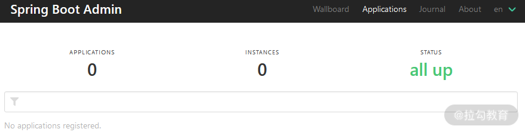
Spring Boot Admin Server 启动效果图
从图中我们可以看到，目前还没有一个应用程序与 Admin Server 有关联。如果想将应用程序与 Admin Server 进行关联，我们还需要对原有的 Spring Boot 应用程序做一定的改造。
首先，我们在 Maven 依赖中引入对 Spring Boot Admin Client 组件的依赖，如下代码所示：
<dependency>
<groupId>de.codecentric</groupId>
<artifactId>spring-boot-admin-starter-client</artifactId>
</dependency>
然后，我们在配置文件中添加如下配置信息，以便该应用程序能够与 Admin Server 进行关联。
spring:
boot:
admin:
client:
url: http://localhost:9000
注意：这里的 9000 就是 Admin Server 的服务器端口。
现在我们启动这个应用程序，就会发现 Admin Server 中已经出现了这个应用的名称和地址，如下图所示：
Spring Boot Admin Server 添加了应用程序之后的效果图
在图中，我们看到 APPLICATIONS 和 INSTANCES 的数量都是 1，代表 Admin Server 管理着一个应用程序，而该应用程序只有一个运行实例。在界面的下方，我们还能看到这个应用的名称及实例地址。这里你可以尝试使用不同的端口启动应用程序的不同实例，然后观察这个列表的变化。
基于注册中心构建 Admin Server
虽然基于独立服务构建 Admin Server 和 Admin Client 非常简单，但是需要我们在每个应用程序中添加对 Spring Boot Admin 的 Maven 依赖，并指定 Admin Server 地址。这实际上是一种代码侵入，意味着应用程序与 Admin Server 之间有一种强耦合。
那么，有没有更好的办法分离或转嫁这种耦合呢？
联想到 Admin Server 和 Admin Client 之间需要建立类似服务注册的关联关系，我们可以认为这是服务注册和发现机制的一种表现形式。
在 Spring 家族中，存在一个用于构建微服务架构的 Spring Cloud 框架，而该框架中恰好存在一款专门实现服务注册和发现的组件——服务注册中心 Spring Cloud Netflix Eureka ，且 Spring Boot Admin 内置了与这款注册中心实现工具的无缝集成。
基于注册中心，Admin Server 与各个 Admin Client 之间的交互方式如下图所示：
基于 Eureka 的 Admin Server 与 Admin Client 交互图
使用 Eureka 构建注册中心的过程也很简单，首先我们创建一个独立的 Spring Boot 应用程序，并在 pom 文件中添加如下所示的用于提供 Eureka 服务端功能的 Maven 依赖：
<dependency>
<groupId>org.springframework.cloud</groupId>
<artifactId>spring-cloud-starter-netflix-eureka-server</artifactId>
</dependency>
引入 Maven 依赖后，我们就可以创建 Spring Boot 的启动类。在示例代码中，我们把该启动类命名为 EurekaServerApplication，如下代码所示：
@SpringBootApplication
@EnableEurekaServer
public class EurekaServerApplication {
public static void main(String[] args) {
SpringApplication.run(EurekaServerApplication.class, args);
}
}
注意：在上面的代码中，我们在启动类上加了一个@EnableEurekaServer 注解。在 SpringCloud 中，包含 @EnableEurekaServer 注解的服务也就是一个 Eureka 服务器组件。这样，Eureka 服务就构建完毕了。
同样，Eureka 服务还为我们提供了一个可视化的 UI 界面，它可以用来观察当前注册到 Eureka 中的应用程序信息，如下图所示：
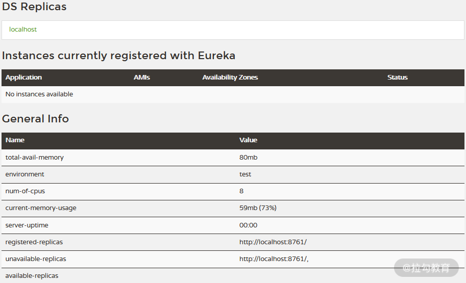
Eureka 服务监控页面
接下来，我们需要 Admin Server 也做相应调整。首先，我们在 pom 文件中添加一个对 spring-cloud-starter-netflix-eureka-client 这个 Eureka 客户端组件的依赖：
<dependency>
<groupId>org.springframework.cloud</groupId>
<artifactId>spring-cloud-starter-netflix-eureka-client</artifactId>
</dependency>
这时 Admin Server 相当于 Eureka 的客户端，因此，我们需要在它的 BootStrap 类上添加 @EnableEurekaClient 注解，以便将 Admin Server 注册到 Eureka 上。
重构 Admin Server 的最后一步是调整配置信息，此时我们需要在配置文件中添加如下所示的配置项来指定 Eureka 服务器地址。
eureka:
client:
registerWithEureka: true
fetchRegistry: true
serviceUrl:
defaultZone: http://localhost:8761/eureka/
好了，现在 Admin Server 已经重构完毕，接下来我们一起看看 Admin Client。
引入注册中心的目的是降低 Admin Client 与 Admin Server 之间的耦合度，关于这点我们从 Maven 依赖上就可以得到印证。有了注册中心后，Admin Client 就不再依赖 spring-boot-admin-starter-client 组件了，而是直接使用如下所示的 Eureka 客户端组件。
<dependency>
<groupId>org.springframework.cloud</groupId>
<artifactId>spring-cloud-starter-netflix-eureka-client</artifactId>
</dependency>
在配置文件中，我们需要去掉对 Admin Server 地址的引用，直接使用 Eureka 服务端地址即可，且无须对 Admin Client 中的 Bootstrap 类做任何修改。
通过以上调整，各个 Admin Client 就能通过 Eureka 注册中心完成与 Admin Server 的关联了。
使用 Admin Server 监控系统
根据 Spring Boot Admin 官方 Github 上的介绍，Admin Server 监控系统提供了一套完整的可视化方案。基于 Admin Server，健康状态、JVM、内存、Micrometer 的度量、线程、HTTP 跟踪等核心功能都可以通过可视化的 UI 界面进行展示。
监控系统运行时关键指标
注意到 Admin Server 菜单中有一个“Wallboard”，点击该菜单，我们就可以看到一面应用墙，如下图所示：
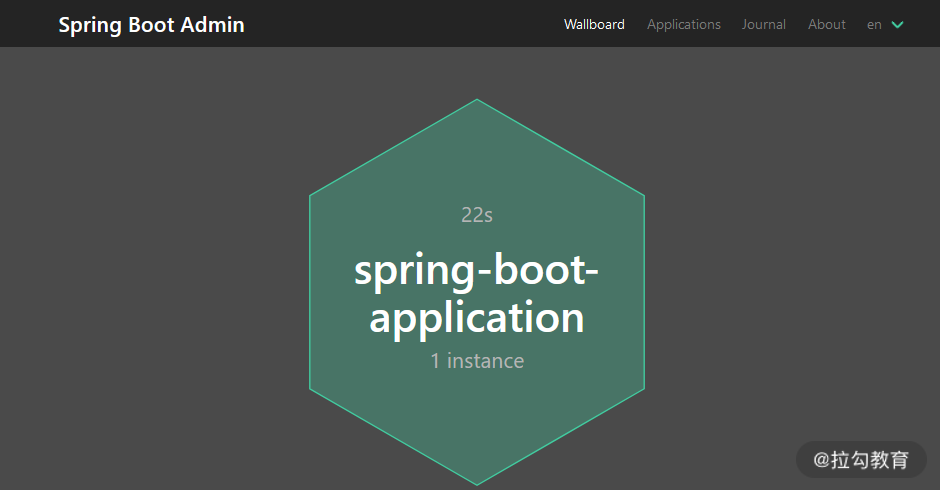
Admin Server 应用墙
点击应用墙中的某个应用，我们就能进入针对该应用的监控信息主界面。在该界面的左侧，包含了监控功能的各级目录，如下图所示：
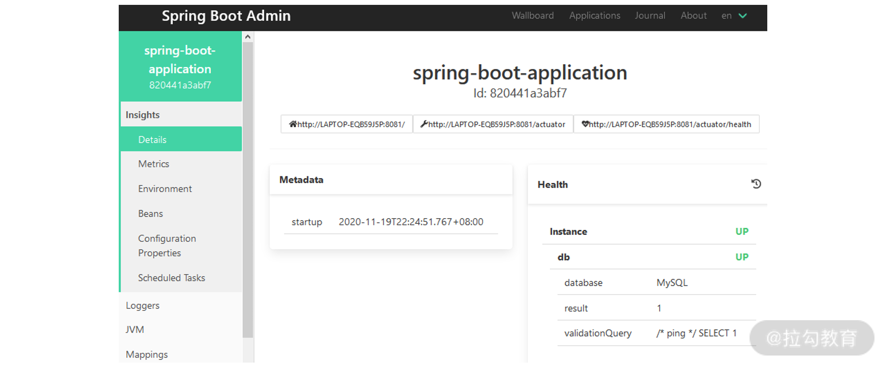
Admin Server 监控信息主界面
在图中，我们看到了最重要的“Health”信息，显然，这一信息来自 Spring Boot Actuator 组件的 Health 端点，这里你可以参考《服务监控：如何使用 Actuator 组件实现系统监控？》的内容进行回顾。
在这个界面上继续往下滑动，我们将看到一些与 JVM 相关的监控信息，比如非常有用的线程、垃圾回收、内存状态等数据，如下图所示：
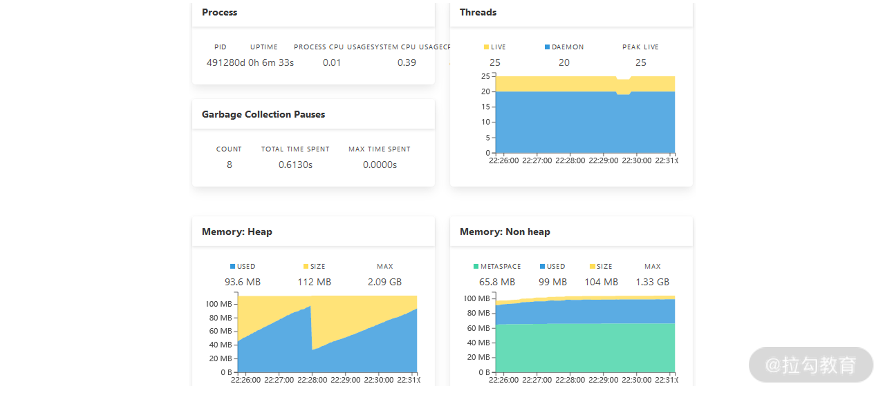
Admin Server 中的 JVM 监控信息
这些 JVM 数据都是通过可视化的方式进行展现，并随着运行时状态的变化而实时更新。
在 21 讲中，我们详细讨论了 Spring Boot Actuator 中的度量指标。而在 Admin Server 中，同样存在一个“Metrics”菜单，展示效果如下图所示：
Admin Server 中的 Metrics 信息
在“Metrics”菜单中，开发人员可以通过对各种条件进行筛选，然后添加对应的度量指标。比如上图中，我们针对 HTTP 请求中 /actuator/health 端点进行了过滤，从而得到了度量结果。
接着我们一起看看系统环境方面的属性，因为这方面的属性非常之多，所以 Admin Server 也提供了一个过滤器，如下图所示：
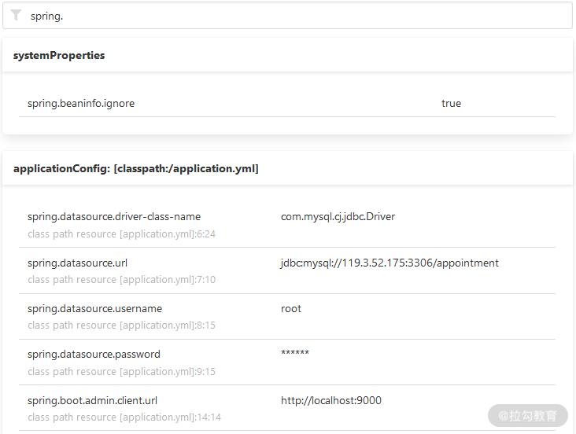
Admin Server 中的 Environment 信息
在上图中，通过输入“spring.”参数，我们就能获取一系列与该参数相关的环境属性。
日志也是我们监控系统的一个重要途径，在 Admin Server 的“Loggers”菜单中，可以看到该应用程序的所有日志信息，如下图所示：
Admin Server 中的 Loggers 信息
通过”springcss”关键词对这些日志进行过滤，我们就可以获取 SpringCSS 案例中的日志详细了，图中也显示了每个日志记录器对应的日志级别。
最后，我们来看一下 Admin Server 中的“JVM”菜单，该菜单下存在两个子菜单：“Thread Dump”和“Heap Dump”。
以“Thread Dump”为例，尽管 Actuator 提供了 /threaddump 端点，但开发人员只能获取触发该端点时的 Dump 信息，而 Admin Server 则提供了一个连续性的可视化监控界面，如下图所示：
Admin Server 中的 Thread Dump 信息
点击图中的色条，我们就可以获取每一个线程的详细信息了，这里你可以尝试做一些分析。
控制访问安全性
讲到这里，我们会发现 Admin Server 的功能非常强大，而这些功能显然也不应该暴露给所有的开发人员。因此，我们需要控制 Admin Server 的访问安全性。
想做到这一点也非常简单，我们只需要集成 Spring Security 即可。
结合《用户认证：如何基于 Spring Security 构建用户认证体系？》的内容，我们在 Spring Boot 应用程序中添加一个对 spring-boot-starter-security 的 Maven 依赖：
<dependency>
<groupId>org.springframework.boot</groupId>
<artifactId>spring-boot-starter-security</artifactId>
</dependency>
然后，我们在配置文件中添加如下配置项：
spring:
security:
user:
name: "springcss_admin"
password: "springcss_password"
重启 Admin Server 后，再次访问 Web 界面时，就需要我们输入用户名和密码了，如下图所示：
Admin Server 的安全登录界面
小结与预告
可视化监控一直是开发和运维人员管理应用程序运行时状态的基础诉求，而 Spring Boot Admin 组件正是这样一款可视化的工具。它基于 Spring Boot Actuator 中各个端点所暴露的监控信息，并加以整合和集成。今天的内容首先介绍了构建 Admin Server 以及 Admin Client 的方法，并剖析了 Admin Server 中所具有的一整套的可视化解决方案。
23 数据测试：如何使用 Spring 测试数据访问层组件？
作为整个课程最后一部分内容，从这一讲开始，我们将讨论 Spring 提供的测试解决方案。对于 Web 应用程序而言，测试是一个难点，也是经常被忽略的一套技术体系。一个应用程序中涉及数据层、服务层、Web 层，以及各种外部服务之间的交互关系时，我们除了对各层组件的单元测试之外，还需要充分引入集成测试保证服务的正确性和稳定性。
Spring Boot 中的测试解决方案
和 Spring Boot 1.x 版本一样，Spring Boot 2.x 也提供了一个用于测试的 spring-boot-starter-test 组件。
在 Spring Boot 中，集成该组件的方法是在 pom 文件中添加如下所示依赖：
<dependency>
<groupId>org.springframework.boot</groupId>
<artifactId>spring-boot-starter-test</artifactId>
<scope>test</scope>
</dependency>
<dependency>
<groupId>org.junit.platform</groupId>
<artifactId>junit-platform-launcher</artifactId>
<scope>test</scope>
</dependency>
其中，最后一个依赖用于导入与 JUnit 相关的功能组件。
然后，通过 Maven 查看 spring-boot-starter-test 组件的依赖关系，我们可以得到如下所示的组件依赖图：

spring-boot-starter-test 组件的依赖关系图
在《案例驱动：如何剖析一个 Spring Web 应用程序？》中我们提到，Spring Boot 使得编码、配置、部署和监控工作更简单。事实上，Spring Boot 也能让测试工作更加简单。
从上图中可以看到，在代码工程的构建路径中，我们引入了一系列组件初始化测试环境。比如 JUnit、JSON Path、AssertJ、Mockito、Hamcrest 等，这里我们有必要对这些组件进行展开说明。
- JUnit：JUnit 是一款非常流行的基于 Java 语言的单元测试框架，在我们的课程中主要使用该框架作为基础的测试框架。
- JSON Path：类似于 XPath 在 XML 文档中的定位，JSON Path 表达式通常用来检索路径或设置 JSON 文件中的数据。
- AssertJ：AssertJ 是一款强大的流式断言工具，它需要遵守 3A 核心原则，即 Arrange（初始化测试对象或准备测试数据）——> Actor（调用被测方法）——>Assert（执行断言）。
- Mockito：Mockito 是 Java 世界中一款流行的 Mock 测试框架，它主要使用简洁的 API 实现模拟操作。在实施集成测试时，我们将大量使用到这个框架。
- Hamcrest：Hamcrest 提供了一套匹配器（Matcher），其中每个匹配器的设计用于执行特定的比较操作。
- JSONassert：JSONassert 是一款专门针对 JSON 提供的断言框架。
- Spring Test & Spring Boot Test：为 Spring 和 Spring Boot 框架提供的测试工具。
以上组件的依赖关系都是自动导入，我们无须做任何变动。而对于某些特定场景而言，就需要我们手工导入一些组件以满足测试需求，例如引入专用针对测试场景的嵌入式关系型数据库 H2。
测试 Spring Boot 应用程序
接下来，我们将初始化 Spring Boot 应用程序的测试环境，并介绍如何在单个服务内部完成单元测试的方法和技巧。
导入 spring-boot-starter-test 依赖后，我们就可以使用它提供的各项功能应对复杂的测试场景了。
初始化测试环境
对于 Spring Boot 应用程序而言，我们知道其 Bootstrap 类中的 main() 入口将通过 SpringApplication.run() 方法启动 Spring 容器，如下所示的 CustomerApplication 类就是一个典型的 Spring Boot 启动类 ：
@SpringBootApplication
public class CustomerApplication {
public static void main(String[] args) {
SpringApplication.run(CustomerApplication.class, args);
}
}
针对上述 Bootstrap 类，我们可以通过编写测试用例的方式，验证 Spring 容器能否正常启动。
为了添加测试用例，我们有必要梳理一下代码的组织结构，梳理完后就呈现了如下图所示的customer-service 工程中代码的基本目录结构。

customer-service 工程代码目录结构
基于 Maven 的默认风格，我们将在 src/test/java 和 src/test/resources 包下添加各种测试用例代码和配置文件，正如上图所示。
打开上图中的 ApplicationContextTests.java 文件，我们可以得到如下所示的测试用例代码：
import org.junit.Assert;
import org.junit.Test;
import org.junit.runner.RunWith;
import org.springframework.beans.factory.annotation.Autowired;
import org.springframework.boot.test.context.SpringBootTest;
import org.springframework.context.ApplicationContext;
import org.springframework.test.context.junit4.SpringRunner;
@SpringBootTest
@RunWith(SpringRunner.class)
public class ApplicationContextTests {
@Autowired
private ApplicationContext applicationContext;
@Test
public void testContextLoads() throws Throwable {
Assert.assertNotNull(this.applicationContext);
}
}
该代码中的 testContextLoaded() 就是一个有效的测试用例，这里我们可以看到该用例对 Spring 中的 ApplicationContext 作了简单非空验证。
执行该测试用例后，从输出的控制台信息中，我们可以看到 Spring Boot 应用程序被正常启动，同时测试用例本身也会给出执行成功的提示。
上述测试用例虽然简单，但是已经包含了测试 Spring Boot 应用程序的基本代码框架。其中，最重要的是 ApplicationContextTests 类上的 @SpringBootTest 和 @RunWith 注解，对于 Spring Boot 应用程序而言，这两个注解构成了一套完成的测试方案。
接下来我们对这两个注解进行详细展开。
@SpringBootTest 注解
因为 SpringBoot 程序的入口是 Bootstrap 类，所以 SpringBoot 专门提供了一个 @SpringBootTest 注解测试 Bootstrap 类。同时 @SpringBootTest 注解也可以引用 Bootstrap 类的配置，因为所有配置都会通过 Bootstrap 类去加载。
在上面的例子中，我们是通过直接使用 @SpringBootTest 注解提供的默认功能对作为 Bootstrap 类的 Application 类进行测试。而更常见的做法是在 @SpringBootTest 注解中指定该 Bootstrap 类，并设置测试的 Web 环境，如下代码所示。
@SpringBootTest(classes = CustomerApplication.class,
webEnvironment = SpringBootTest.WebEnvironment.MOCK)
在以上代码中，@SpringBootTest 注解中的 webEnvironment 可以有四个选项，分别是 MOCK、RANDOM_PORT、DEFINED_PORT 和 NONE。
- MOCK：加载 WebApplicationContext 并提供一个 Mock 的 Servlet 环境，此时内置的 Servlet 容器并没有正式启动。
- RANDOM_PORT：加载 EmbeddedWebApplicationContext 并提供一个真实的 Servlet 环境，然后使用一个随机端口启动内置容器。
- DEFINED_PORT：这个配置也是通过加载 EmbeddedWebApplicationContext 提供一个真实的 Servlet 环境，但使用的是默认端口，如果没有配置端口就使用 8080。
- NONE：加载 ApplicationContext 但并不提供任何真实的 Servlet 环境。
在 Spring Boot 中，@SpringBootTest 注解主要用于测试基于自动配置的 ApplicationContext，它允许我们设置测试上下文中的 Servlet 环境。
在多数场景下，一个真实的 Servlet 环境对于测试而言过于重量级，通过 MOCK 环境则可以缓解这种环境约束所带来的成本和挑战。在 22 讲《服务测试：如何使用Spring测试Web服务层组件？》中，我们将结合 WebEnvironment.MOCK 选项对服务层中的具体功能进行集成测试。
@RunWith 注解与 SpringRunner
在上面的示例中，我们还看到一个由 JUnit 框架提供的 @RunWith 注解，它用于设置测试运行器。例如，我们可以通过 @RunWith(SpringJUnit4ClassRunner.class) 让测试运行于 Spring 测试环境。
虽然这我们指定的是 SpringRunner.class，实际上，SpringRunner 就是 SpringJUnit4ClassRunner 的简化，它允许 JUnit 和 Spring TestContext 整合运行，而 Spring TestContext 则提供了用于测试 Spring 应用程序的各项通用的支持功能。
在后续的测试用例中，我们将大量使用 SpringRunner。
执行测试用例
在这一讲中，我们还将通过代码示例回顾如何使用 JUnit 框架执行单元测试的过程和实践，同时提供验证异常和验证正确性的测试方法。
单元测试的应用场景是一个独立的类，如下所示的 CustomerTicket 类就是一个非常典型的独立类：
public class CustomerTicket {
private Long id;
private Long accountId;
private String orderNumber;
private String description;
private Date createTime;
public CustomerTicket(Long accountId, String orderNumber) {
super();
Assert.notNull(accountId, "Account Id must not be null");
Assert.notNull(orderNumber, "Order Number must not be null");
Assert.isTrue(orderNumber.length() == 10, "Order Number must be exactly 10 characters");
this.accountId = accountId;
this.orderNumber = orderNumber;
}
…
}
从中我们可以看到，该类对客服工单做了封装，并在其构造函数中添加了校验机制。
下面我们先来看看如何对正常场景进行测试。
例如 CustomerTicket 中orderNumber 的长度问题，我们可以使用如下测试用例，通过在构造函数中传入字符串来验证规则的正确性：
@RunWith(SpringRunner.class)
public class CustomerTicketTests {
private static final String ORDER_NUMBER = "Order00001";
@Test
public void testOrderNumberIsExactly10Chars() throws Exception {
CustomerTicket customerTicket = new CustomerTicket(100L, ORDER_NUMBER);
assertThat(customerTicket.getOrderNumber().toString()).isEqualTo(ORDER_NUMBER);
}
}
执行这个单元测试后，我们就可以看到执行的过程及结果。
而这些单元测试用例只是演示了最基本的测试方式，后续的各种测试机制我们将在此基础上进行扩展和演化。
使用 @DataJpaTest 注解测试数据访问组件
数据需要持久化，接下来我们将从数据持久化的角度出发，讨论如何对 Repository 层进行测试的方法。
首先，我们讨论一下使用关系型数据库的场景，并引入针对 JPA 数据访问技术的 @DataJpaTest 注解。
@DataJpaTest 注解会自动注入各种 Repository 类，并初始化一个内存数据库和及访问该数据库的数据源。在测试场景下，一般我们可以使用 H2 作为内存数据库，并通过 MySQL 实现数据持久化，因此我们需要引入以下所示的 Maven 依赖：
<dependency>
<groupId>com.h2database</groupId>
<artifactId>h2</artifactId>
</dependency>
<dependency>
<groupId>mysql</groupId>
<artifactId>mysql-connector-java</artifactId>
<scope>runtime</scope>
</dependency>
另一方面，我们需要准备数据库 DDL 用于初始化数据库表，并提供 DML 脚本完成数据初始化。其中，schema-mysql.sql 和 data-h2.sql 脚本分别充当了 DDL 和 DML 的作用。
在 customer-service 的 schema-mysql.sql 中包含了 CUSTOMER 表的创建语句，如下代码所示：
DROP TABLE IF EXISTS `customerticket`;
create table `customerticket` (
`id` bigint(20) NOT NULL AUTO_INCREMENT,
`account_id` bigint(20) not null,
`order_number` varchar(50) not null,
`description` varchar(100) not null,
`create_time` timestamp not null DEFAULT CURRENT_TIMESTAMP,
PRIMARY KEY (`id`)
);
而在 data-h2.sql 中，我们插入了一条测试需要使用的数据，具体的初始化数据过程如下代码所示：
INSERT INTO customerticket (`account_id`, `order_number`,`description`) values (1, 'Order00001', ' DemoCustomerTicket1');
接下来是提供具体的 Repository 接口，我们先通过如下所示代码回顾一下 CustomerRepository 接口的定义。
public interface CustomerTicketRepository extends JpaRepository<CustomerTicket, Long> {
List<CustomerTicket> getCustomerTicketByOrderNumber(String orderNumber);
}
这里存在一个方法名衍生查询 getCustomerTicketByOrderNumber，它会根据 OrderNumber 获取 CustomerTicket。
基于上述 CustomerRepository，我们可以编写如下所示的测试用例：
@RunWith(SpringRunner.class)
@DataJpaTest
public class CustomerRepositoryTest {
@Autowired
private TestEntityManager entityManager;
@Autowired
private CustomerTicketRepository customerTicketRepository;
@Test
public void testFindCustomerTicketById() throws Exception {
this.entityManager.persist(new CustomerTicket(1L, "Order00001", "DemoCustomerTicket1", new Date()));
CustomerTicket customerTicket = this.customerTicketRepository.getOne(1L);
assertThat(customerTicket).isNotNull();
assertThat(customerTicket.getId()).isEqualTo(1L);
}
@Test
public void testFindCustomerTicketByOrderNumber() throws Exception {
String orderNumber = "Order00001";
this.entityManager.persist(new CustomerTicket(1L, orderNumber, "DemoCustomerTicket1", new Date()));
this.entityManager.persist(new CustomerTicket(2L, orderNumber, "DemoCustomerTicket2", new Date()));
List<CustomerTicket> customerTickets = this.customerTicketRepository.getCustomerTicketByOrderNumber(orderNumber);
assertThat(customerTickets).size().isEqualTo(2);
CustomerTicket actual = customerTickets.get(0);
assertThat(actual.getOrderNumber()).isEqualTo(orderNumber);
}
@Test
public void testFindCustomerTicketByNonExistedOrderNumber() throws Exception {
this.entityManager.persist(new CustomerTicket(1L, "Order00001", "DemoCustomerTicket1", new Date()));
this.entityManager.persist(new CustomerTicket(2L, "Order00002", "DemoCustomerTicket2", new Date()));
List<CustomerTicket> customerTickets = this.customerTicketRepository.getCustomerTicketByOrderNumber("Order00003");
assertThat(customerTickets).size().isEqualTo(0);
}
}
这里可以看到，我们使用了 @DataJpaTest 实现 CustomerRepository 的注入。同时，我们还注意到另一个核心测试组件 TestEntityManager，它的效果相当于不使用真正的 CustomerRepository 完成数据的持久化，从而提供了一种数据与环境之间的隔离机制。
执行这些测试用例后，我们需要关注它们的控制台日志输入，其中核心日志如下所示（为了显示做了简化处理）：
Hibernate: drop table customer_ticket if exists
Hibernate: drop sequence if exists hibernate_sequence
Hibernate: create sequence hibernate_sequence start with 1 increment by 1
Hibernate: create table customer_ticket (id bigint not null, account_id bigint, create_time timestamp, description varchar(255), order_number varchar(255), primary key (id))
Hibernate: create table localaccount (id bigint not null, account_code varchar(255), account_name varchar(255), primary key (id))
…
Hibernate: call next value for hibernate_sequence
Hibernate: call next value for hibernate_sequence
Hibernate: insert into customer_ticket (account_id, create_time, description, order_number, id) values (?, ?, ?, ?, ?)
Hibernate: insert into customer_ticket (account_id, create_time, description, order_number, id) values (?, ?, ?, ?, ?)
Hibernate: select customerti0_.id as id1_0_, customerti0_.account_id as account_2_0_, customerti0_.create_time as create_t3_0_, customerti0_.description as descript4_0_, customerti0_.order_number as order_nu5_0_ from customer_ticket customerti0_ where customerti0_.order_number=?
…
Hibernate: drop table customer_ticket if exists
Hibernate: drop sequence if exists hibernate_sequence
从以上日志中，我们不难看出执行各种 SQL 语句的效果，此时你也可以修改这些测试用例，并观察执行结果。
小结与预告
测试是一套独立的技术体系，需要开发人员充分重视且付诸实践，这点对于 Web 应用程序测试而言更是如此。这一讲我们基于 Spring Boot 给出了完整的测试方法和核心注解，并针对关系型数据库给出了数据访问组件的测试过程。
这里给你留一道思考题：在使用 Spring Boot 执行测试用例时，如何基于内存数据库完成数据访问过程的测试？欢迎你在留言区与我交流、互动哦~
介绍完数据库访问测试之后，24 讲我们将讨论如何对 Web 服务层组件进行测试。
24 服务测试：如何使用 Spring 测试 Web 服务层组件？
23 讲我们介绍了对数据访问层进行测试的方法，这一讲将着重介绍对三层架构中的另外两层（Service 层和 Controller 层）的测试方法。
与位于底层的数据访问层不同，这两层的组件都依赖于它的下一层组件，即 Service 层依赖于数据访问层，而 Controller 层依赖于 Service 层。因此，对这两层进行测试时，我们将使用不同的方案和技术。
使用 Environment 测试配置信息
在《定制配置：如何创建自定义的配置信息？》中，我们介绍了自定义配置信息的实现方式。而在 Spring Boot 应用程序中，Service 层通常依赖于配置文件，所以我们也需要对配置信息进行测试。
配置信息的测试方案分为两种，第一种依赖于物理配置文件，第二种则是在测试时动态注入配置信息。
第一种测试方案比较简单，在 src/test/resources 目录下添加配置文件时，Spring Boot 能读取这些配置文件中的配置项并应用于测试案例中。在介绍具体的实现过程之前，我们有必要先来了解一下 Environment 接口，该接口定义如下：
public interface Environment extends PropertyResolver {
String[] getActiveProfiles();
String[] getDefaultProfiles();
boolean acceptsProfiles(String... profiles);
}
在上述代码中我们可以看到，Environment 接口的主要作用是处理 Profile，而它的父接口 PropertyResolver 定义如下代码所示：
public interface PropertyResolver {
boolean containsProperty(String key);
String getProperty(String key);
String getProperty(String key, String defaultValue);
<T> T getProperty(String key, Class<T> targetType);
<T> T getProperty(String key, Class<T> targetType, T defaultValue);
String getRequiredProperty(String key) throws IllegalStateException;
<T> T getRequiredProperty(String key, Class<T> targetType) throws IllegalStateException;
String resolvePlaceholders(String text);
String resolveRequiredPlaceholders(String text) throws IllegalArgumentException;
}
显然，PropertyResolver 的作用是根据各种配置项的 Key 获取配置属性值。
现在，假设 src/test/resources 目录中的 application.properties 存在如下配置项：
springcss.order.point = 10
那么，我们就可以设计如下所示的测试用例了。
@RunWith(SpringRunner.class)
@SpringBootTest
public class EnvironmentTests{
@Autowired
public Environment environment;
@Test
public void testEnvValue(){
Assert.assertEquals(10, Integer.parseInt(environment.getProperty("springcss.order.point")));
}
}
这里我们注入了一个 Environment 接口，并调用了它的 getProperty 方法来获取测试环境中的配置信息。
除了在配置文件中设置属性，我们也可以使用 @SpringBootTest 注解指定用于测试的属性值，示例代码如下：
@RunWith(SpringRunner.class)
@SpringBootTest(properties = {" springcss.order.point = 10"})
public class EnvironmentTests{
@Autowired
public Environment environment;
@Test
public void testEnvValue(){
Assert.assertEquals(10, Integer.parseInt(environment.getProperty("springcss.order.point")));
}
}
使用 Mock 测试 Service 层
正如这一讲开篇时提到，Service 层依赖于数据访问层。因此，对 Service 层进行测试时，我们还需要引入新的技术体系，也就是应用非常广泛的 Mock 机制。
接下来，我们先看一下 Mock 机制的基本概念。
Mock 机制
Mock 的意思是模拟，它可以用来对系统、组件或类进行隔离。
在测试过程中，我们通常关注测试对象本身的功能和行为，而对测试对象涉及的一些依赖，仅仅关注它们与测试对象之间的交互（比如是否调用、何时调用、调用的参数、调用的次数和顺序，以及返回的结果或发生的异常等），并不关注这些被依赖对象如何执行这次调用的具体细节。因此，Mock 机制就是使用 Mock 对象替代真实的依赖对象，并模拟真实场景来开展测试工作。
使用 Mock 对象完成依赖关系测试的示意图如下所示：

Mock 对象与依赖关系测试示意图
从图中可以看出，在形式上，Mock 是在测试代码中直接 Mock 类和定义 Mock 方法的行为，通常测试代码和 Mock 代码放一起。因此，测试代码的逻辑从测试用例的代码上能很容易地体现出来。
下面我们一起看一下如何使用 Mock 测试 Service 层。
使用 Mock
23 讲中我们介绍了 @SpringBootTest 注解中的 SpringBootTest.WebEnvironment.MOCK 选项，该选项用于加载 WebApplicationContext 并提供一个 Mock 的 Servlet 环境，内置的 Servlet 容器并没有真实启动。接下来，我们针对 Service 层演示一下这种测试方式。
首先，我们来看一种简单场景，在 customer-service 中存在如下 CustomerTicketService 类：
@Service
public class CustomerTicketService {
@Autowired
private CustomerTicketRepository customerTicketRepository;
public CustomerTicket getCustomerTicketById(Long id) {
return customerTicketRepository.getOne(id);
}
…
}
这里我们可以看到，以上方法只是简单地通过 CustomerTicketRepository 完成了数据查询操作。
显然，对以上 CustomerTicketService 进行集成测试时，还需要我们提供一个 CustomerTicketRepository 依赖。
下面，我们通过以下代码演示一下如何使用 Mock 机制完成对 CustomerTicketRepository 的隔离。
@RunWith(SpringRunner.class)
@SpringBootTest(webEnvironment = SpringBootTest.WebEnvironment.MOCK)
public class CustomerServiceTests {
@MockBean
private CustomerTicketRepository customerTicketRepository;
@Test
public void testGetCustomerTicketById() throws Exception {
Long id = 1L;
Mockito.when(customerTicketRepository.getOne(id)).thenReturn(new CustomerTicket(1L, 1L, "Order00001", "DemoCustomerTicket1", new Date()));
CustomerTicket actual = customerTicketService.getCustomerTicketById(id);
assertThat(actual).isNotNull();
assertThat(actual.getOrderNumber()).isEqualTo("Order00001");
}
}
首先，我们通过 @MockBean 注解注入了 CustomerTicketRepository；然后，基于第三方 Mock 框架 Mockito 提供的 when/thenReturn 机制完成了对 CustomerTicketRepository 中 getCustomerTicketById() 方法的 Mock。
当然，如果你希望在测试用例中直接注入真实的CustomerTicketRepository，这时就可以使用@SpringBootTest 注解中的 SpringBootTest.WebEnvironment.RANDOM_PORT 选项，示例代码如下：
@RunWith(SpringRunner.class)
@SpringBootTest(webEnvironment = SpringBootTest.WebEnvironment.RANDOM_PORT)
public class CustomerServiceTests {
@Autowired
private CustomerTicketRepository customerTicketRepository;
@Test
public void testGetCustomerTicketById() throws Exception {
Long id = 1L;
CustomerTicket actual = customerTicketService.getCustomerTicketById(id);
assertThat(actual).isNotNull();
assertThat(actual.getOrderNumber()).isEqualTo("Order00001");
}
}
运行上述代码后就会以一个随机的端口启动整个 Spring Boot 工程，并从数据库中真实获取目标数据进行验证。
以上集成测试的示例中只包含了对 Repository 层的依赖，而有时候一个 Service 中可能同时包含 Repository 和其他 Service 类或组件，下面回到如下所示的 CustomerTicketService 类：
@Service
public class CustomerTicketService {
@Autowired
private OrderClient orderClient;
private OrderMapper getRemoteOrderByOrderNumber(String orderNumber) {
return orderClient.getOrderByOrderNumber(orderNumber);
}
…
}
这里我们可以看到，在该代码中，除了依赖 CustomerTicketRepository 之外，还同时依赖了 OrderClient。
请注意：以上代码中的 OrderClient 是在 customer-service 中通过 RestTemplate 访问 order-service 的远程实现类，其代码如下所示：
@Component
public class OrderClient {
@Autowired
RestTemplate restTemplate;
public OrderMapper getOrderByOrderNumber(String orderNumber) {
ResponseEntity<OrderMapper> restExchange = restTemplate.exchange(
"http://localhost:8083/orders/{orderNumber}", HttpMethod.GET, null,
OrderMapper.class, orderNumber);
OrderMapper result = restExchange.getBody();
return result;
}
}
CustomerTicketService 类实际上并不关注 OrderClient 中如何实现远程访问的具体过程。因为对于集成测试而言，它只关注方法调用返回的结果，所以我们将同样采用 Mock 机制完成对 OrderClient 的隔离。
对 CustomerTicketService 这部分功能的测试用例代码如下所示，可以看到，我们采用的是同样的测试方式。
@Test
public void testGenerateCustomerTicket() throws Exception {
Long accountId = 100L;
String orderNumber = "Order00001";
Mockito.when(this.orderClient.getOrderByOrderNumber("Order00001"))
.thenReturn(new OrderMapper(1L, orderNumber, "deliveryAddress"));
Mockito.when(this.localAccountRepository.getOne(accountId))
.thenReturn(new LocalAccount(100L, "accountCode", "accountName"));
CustomerTicket actual = customerTicketService.generateCustomerTicket(accountId, orderNumber);
assertThat(actual.getOrderNumber()).isEqualTo(orderNumber);
}
这里提供的测试用例演示了 Service 层中进行集成测试的各种手段，它们已经能够满足一般场景的需要。
测试 Controller 层
对 Controller 层进行测试之前，我们先来提供一个典型的 Controller 类，它来自 customer-service，如下代码所示：
@RestController
@RequestMapping(value="customers")
public class CustomerController {
@Autowired
private CustomerTicketService customerTicketService;
@PostMapping(value = "/{accountId}/{orderNumber}")
public CustomerTicket generateCustomerTicket( @PathVariable("accountId") Long accountId,
@PathVariable("orderNumber") String orderNumber) {
CustomerTicket customerTicket = customerTicketService.generateCustomerTicket(accountId, orderNumber);
return customerTicket;
}
}
关于上述 Controller 类的测试方法，相对来说比较丰富，比如有 TestRestTemplate、@WebMvcTest 注解和 MockMvc 这三种，下面我们逐一进行讲解。
使用 TestRestTemplate
Spring Boot 提供的 TestRestTemplate 与 RestTemplate 非常类似，只不过它专门用在测试环境中。
如果我们想在测试环境中使用 @SpringBootTest，则可以直接使用 TestRestTemplate 来测试远程访问过程，示例代码如下：
@RunWith(SpringRunner.class)
@SpringBootTest(webEnvironment = SpringBootTest.WebEnvironment.RANDOM_PORT)
public class CustomerController2Tests {
@Autowired
private TestRestTemplate testRestTemplate;
@MockBean
private CustomerTicketService customerTicketService;
@Test
public void testGenerateCustomerTicket() throws Exception {
Long accountId = 100L;
String orderNumber = "Order00001";
given(this.customerTicketService.generateCustomerTicket(accountId, orderNumber))
.willReturn(new CustomerTicket(1L, accountId, orderNumber, "DemoCustomerTicket1", new Date()));
CustomerTicket actual = testRestTemplate.postForObject("/customers/" + accountId+ "/" + orderNumber, null, CustomerTicket.class);
assertThat(actual.getOrderNumber()).isEqualTo(orderNumber);
}
}
上述测试代码中，首先，我们注意到 @SpringBootTest 注解通过使用 SpringBootTest.WebEnvironment.RANDOM_PORT 指定了随机端口的 Web 运行环境。然后，我们基于 TestRestTemplate 发起了 HTTP 请求并验证了结果。
特别说明：这里使用 TestRestTemplate 发起请求的方式与 RestTemplate 完全一致，你可以对《服务调用：如何使用 RestTemplate 消费 RESTful 服务？》的内容进行回顾。
使用 @WebMvcTest 注解
接下来测试方法中，我们将引入一个新的注解 @WebMvcTest，该注解将初始化测试 Controller 所必需的 Spring MVC 基础设施，CustomerController 类的测试用例如下所示：
@RunWith(SpringRunner.class)
@WebMvcTest(CustomerController.class)
public class CustomerControllerTestsWithMockMvc {
@Autowired
private MockMvc mvc;
@MockBean
private CustomerTicketService customerTicketService;
@Test
public void testGenerateCustomerTicket() throws Exception {
Long accountId = 100L;
String orderNumber = "Order00001";
given(this.customerTicketService.generateCustomerTicket(accountId, orderNumber))
.willReturn(new CustomerTicket(1L, 100L, "Order00001", "DemoCustomerTicket1", new Date()));
this.mvc.perform(post("/customers/" + accountId+ "/" + orderNumber).accept(MediaType.APPLICATION_JSON)).andExpect(status().isOk());
}
}
以上代码的关键是 MockMvc 工具类，所以接下来我们有必要对它进一步展开说明。
MockMvc 类提供的基础方法分为以下 6 种，下面一一对应来看下。
- Perform：执行一个 RequestBuilder 请求，会自动执行 SpringMVC 流程并映射到相应的 Controller 进行处理。
- get/post/put/delete：声明发送一个 HTTP 请求的方式，根据 URI 模板和 URI 变量值得到一个 HTTP 请求，支持 GET、POST、PUT、DELETE 等 HTTP 方法。
- param：添加请求参数，发送 JSON 数据时将不能使用这种方式，而应该采用 @ResponseBody 注解。
- andExpect：添加 ResultMatcher 验证规则，通过对返回的数据进行判断来验证 Controller 执行结果是否正确。
- andDo：添加 ResultHandler 结果处理器，比如调试时打印结果到控制台。
- andReturn：最后返回相应的 MvcResult，然后执行自定义验证或做异步处理。
执行该测试用例后，从输出的控制台日志中我们不难发现，整个流程相当于启动了 CustomerController 并执行远程访问，而 CustomerController 中使用的 CustomerTicketService 则做了 Mock。
显然，测试 CustomerController 的目的在于验证其返回数据的格式和内容。在上述代码中，我们先定义了 CustomerController 将会返回的 JSON 结果，然后通过 perform、accept 和 andExpect 方法模拟了 HTTP 请求的整个过程，最终验证了结果的正确性。
使用 @AutoConfigureMockMvc 注解
请注意 @SpringBootTest 注解不能和 @WebMvcTest 注解同时使用。
在使用 @SpringBootTest 注解的场景下，如果我们想使用 MockMvc 对象，那么可以引入 @AutoConfigureMockMvc 注解。
通过将 @SpringBootTest 注解与 @AutoConfigureMockMvc 注解相结合，@AutoConfigureMockMvc 注解将通过 @SpringBootTest 加载的 Spring 上下文环境中自动配置 MockMvc 这个类。
使用 @AutoConfigureMockMvc 注解的测试代码如下所示：
@RunWith(SpringRunner.class)
@SpringBootTest
@AutoConfigureMockMvc
public class CustomerControllerTestsWithAutoConfigureMockMvc {
@Autowired
private MockMvc mvc;
@MockBean
private CustomerTicketService customerTicketService;
@Test
public void testGenerateCustomerTicket() throws Exception {
Long accountId = 100L;
String orderNumber = "Order00001";
given(this.customerTicketService.generateCustomerTicket(accountId, orderNumber))
.willReturn(new CustomerTicket(1L, 100L, "Order00001", "DemoCustomerTicket1", new Date()));
this.mvc.perform(post("/customers/" + accountId+ "/" + orderNumber).accept(MediaType.APPLICATION_JSON)).andExpect(status().isOk());
}
}
在上述代码中，我们使用了 MockMvc 工具类完成了对 HTTP 请求的模拟，并基于返回状态验证了 Controller 层组件的正确性。
Spring Boot 中的测试注解总结
通过前面内容的学习，相信你已经感受到了各种测试注解在测试 Spring Boot 应用程序的过程中所发挥的核心作用。
如下所示表格，我们罗列了一些经常使用的测试注解及其描述。

小结与预告
对于一个 Web 应用程序而言，Service 层和 Web 层组件的测试是核心关注点。这一讲我们通过 Mock 机制实现了 Service 层的测试，并引入了三种不同的方法对 Controller 层组件完成验证。
这里给你留一道思考题：在使用 Spring Boot 测试 Web 应用程序时，你知道常见的测试注解有哪些？欢迎在留言区进行互动、交流。
讲完测试组件之后，我们将进入本专栏的最后一讲。在结束语中，我们将对 Spring Boot 进行总结，并对它的后续发展进行展望。
结束语 以终为始：Spring Boot 总结和展望
终于到了课程的最后一讲啦，这一讲我们将对整个 Spring Boot 课程进行总结。
Spring Boot 不仅是 Spring 家族的重要组成成员，也是一款业界领先的应用程序开发框架。通过 Spring Boot 提供的多项核心功能，我们能够快速构建一个完整的 Web 服务开发解决方案。
作为一门针对 Spring Boot 的系统化课程，在课程最后，我们先总结一下整个课程中介绍的 Spring Boot 核心功能，然后梳理一下写作过程中的一些思考和心得，最后对 Spring Boot 的未来发展进行展望。
Spring Boot 的创新性
Spring Boot 是 Spring 家族中由 Pivotal 团队提供的核心开发框架，它基于 Spring4.0 设计，目的是简化新 Spring 应用程序的初始搭建过程和开发过程。
自这个框架诞生以来，它就是快速应用开发领域（Rapid Application Development，RAD）界的领导者。通过使用 Spring Boot 内置的自动配置机制，使得开发人员再也不需要像传统的 Spring 框架那样，使用复杂和重复的配置构建和运行整个 Web 应用程序了，大大简化了开发工作流程。从这点上讲，Spring Boot 无疑是一款具有创新性的开发框架。
Spring Boot 不仅继承了 Spring 框架原有的优秀特性，同时它还添加了很多新的功能，包含但不限于以下五点：
- 可以创建独立的 Spring 应用程序，这些应用程序可以以 JAR 包的形式直接运行；
- 内嵌 Tomcat、Jetty 等 Servlet 容器；
- 提供自动配置的“starter”项目以简化外部组件依赖管理；
- 尽可能把配置 Spring 容器的工作自动化；
- 提供开箱即用的特性，如指标、健康检查和外部化配置。
除此之外，Spring Boot 还是 “约定优于配置（Convention over configuration）”设计理念的倡导者和实践者。
约定优于配置是一种软件设计范式，旨在帮助软件开发人员获得已经默认的内置功能组件，从而减少做决定的次数。在日常开发过程中，开发人员只需要指定自己所开发的应用程序中与约定存在差异的那部分内容即可，剩余的全部交给框架处理。
当然，Spring Boot 框架的强大之处还体现在集成性上。
在使用传统的 Spring 框架时，我们经常会遇到因为各个依赖的组件之间版本不一致导致应用程序无法启动的情况。而 Spring Boot 通过集成大量的外部框架，使得依赖包的版本冲突、引用的不稳定性等问题得到了很好的解决。在这点上，同样也体现了 Spring Boot 的创新性。
Spring Boot 课程总结
总结完 Spring Boot 的各项核心功能及所具备的创新性，我们再来总结一下整个课程的讲解特色和与其他课程之间的差异。
这里，我整理了本课程的三大亮点。
第一大亮点：完整介绍了 Spring Boot 开发技术体系。通过学习本课程，你可以全面梳理基于 Spring Boot 的 Web 应用程序开发技术组件，其中包括配置体系、数据访问、Web 服务、消息通信、系统安全、系统监控、系统测试等专项主题。这些技术组件涵盖了 Java EE 应用程序开发涉及的方方面面，具有广泛的应用场景。
第二大亮点：提供了实用的应用程序开发案例。这个案例系统足够简单，可以让你从零开始理解和掌握其中的各项知识点。同时，这个案例系统又足够完整，涉及的各个核心功能都为我们提供了相关的配置项和示例代码，在日常开发过程中可以进行参考。
第三大亮点：提供了深入的功能组件原理分析过程。这些分析过程能帮助你在掌握 Spring Boot 框架应用的基础上，深入理解自动配置、数据访问、远程调用等核心技术组件的实现原理，做到知其然而知其所以然。
整个课程从平时的积累到酝酿，再到启动，最后到上线经历了小半年的时间，伴随着这个过程，我把 Spring Boot 的部分源代码系统梳理了一遍，也对内部的设计思想和实现原理做了一些提炼和总结。
总体而言，Spring Boot 是一款代码质量非常高的开源框架，其中关于 Spring Boot 和 Spring 框架的集成、内置的自动配置机制，以及数据访问、远程调用等诸多功能都给我留下了深刻的印象，使我受益良多，相信坚持学习到今天的你也是如此。
Spring Boot 的发展和演进
最后，我们来对 Spring Boot 的发展做一些展望。
首先，我们来看一下 Spring Boot 与 Spring 框架的演进过程。
目前 Spring 已经演进到 5.X 版本，随着 Spring 5 的正式发布，我们迎来了响应式编程（Reactive Programming）的全新发展时期。
Spring 5 中内嵌了与数据管理相关的响应式数据访问、与系统集成相关的响应式消息通信，以及与 Web 服务相关的响应式 Web 框架等多种响应式组件，从而极大简化了响应式应用程序的开发过程和难度。
以支持响应式 Web 的 Spring WebFlux 为例，这里我们给出它的架构图，如下图所示：
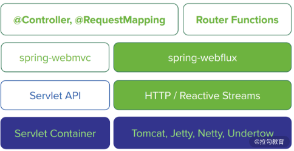
Spring WebFlux 架构图（来自 Spring 官网）
在图中我们可以看到，上图左侧为基于 Spring Webflux 的技术栈，右侧为基于 Spring MVC 的技术栈。我们知道传统的 Spring MVC 是在 Java EE 的 Servlet 标准之上进行构建的，该标准本身就是阻塞式和同步式。而 Spring WebFlux 基于响应式流进行构建，因此我们可以使用它来构建异步非阻塞的服务。
随着 WebFlux 等响应式编程技术的兴起，它为构建具有即时响应性和回弹性的应用程序提供了一个很好的技术基础。
我们知道一个分布式系统中，可能存在数十乃至数百个独立的 Web 应用程序，它们之间互相通信以完成复杂的业务流程，而这个过程势必涉及大量的 I/O 操作。
一旦涉及 I/O 操作，尤其是阻塞式 I/O 操作将会整体增加系统的延迟并降低吞吐量。如果我们能够在复杂的流程中集成非阻塞、异步通信机制，就可以高效处理跨服务之间的网络请求。针对这种场景，WebFlux 也是一种非常有效的解决方案。
下面我们再来看一下 Spring Boot 2 的另一张官网架构图，如下图所示：
Spring Boot 2 架构图（来自 Spring 官网）
从图中我们可以看到，上图底部将 Spring Data 明确划分为两大类型：一类是支持 JDBC、JPA 和部分 NoSQL 的传统 Spring Data Repository，另一类则是支持 Mongo、Cassandra、Redis、Couchbase 等的响应式 Spring Data Reactive Repository。
这张图背后的意义在于，Spring Boot 可以帮助我们构建从 Web 服务层到数据访问层的全栈式响应式编程技术，从而确保系统的各个环节都具备即时响应性。
未来，让我们一起期待响应式编程技术与 Spring Boot 框架之间更加紧密的整合吧。